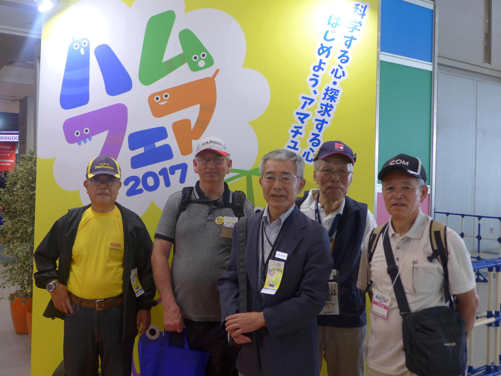
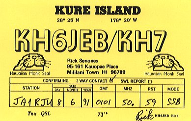
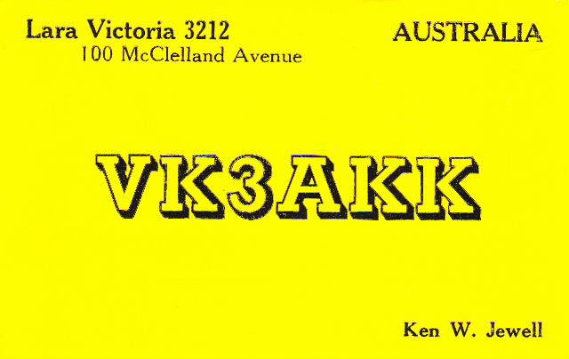

| ◎今日は午後から短時間ながら、50.313MHｚの”FT8”で5W1SAの入感があった。入感しているエリアは狭く、数キロは離れただけで”聞こえない”状態となるなどコンデションはスポット的なもので、東京西部(PM95)での信号強度はピークで-12dBだった。 東京都心では今年初めての降雪が認められ、気象庁から平年よりも3日早い"初雪"と発表された。 |
| ◎南半球の季節は今が夏。Esシーズンの真っ盛りの6mでは、VK本土から南米(CX、LU、ZP)とのQSOも盛んにリポートされている。今日はVKから3D2AG、H44DAなどとのQSOがクラスターを賑わしていた。暮れも押し詰まった"真冬"の日本国内では、海外DXの入感は20日以降にはリポートされていない。 そんな中、今日の午後からJA1(PM95)でJA5/6などの西日本が50.313MHｚの”FT8”で強力に入感していた。西日本と同時にJA7/8の信号も入感、久しぶりにローカル以外の信号が多数デコードされていた。 |
●9M6XRO John SK (2017/12/04)
2005年から東マレーシアのコタキナバルから6mでアクティブにQRVして多くのJA局にお馴染みだった9M6XRO・Johnが12月4日にSK(死去)した。
この情報は、以前にコタキナバルから9M6DXXでQRVしていて、現在はPJ4DXからアクティブにQRVしているSteveから連絡が有ったもの。
JohnはGM3OOK/G3OOKでもアクティブだったが、2005年から東マレーシアにQSYしていた。9M6CTが英国にQSYした後、彼が住んでいたコタキナバルのマンションの一室をアンテナ付きで譲り受けアクティブにQRVしていた。Johnのご冥福をお祈りします。
 
Sorry to bring you the sad news that John Plenderleith 9M6XRO became a silent key yesterday. He had been battling cancer for several years. John was also GM3OOK and G3OOK before settling in East Malaysia in 2005 and was a member of CDXC and the GM-DX Group. RIP John. 73 Steve, PJ4DX (ex-9M6DXX) |
[Back Issues.Nov.2017] Report from JA1RJU(PM95sq) 30.Nov.2017(15:00b) Report from JA1RJU(PM95sq) 29.Nov.2017(15:00b) Report from JA1RJU(PM95sq) 28.Nov.2017(15:00b) Report from JA1RJU(PM95sq) 27.Nov.2017(15:00b) Report from JA1RJU(PM95sq) 26.Nov.2017(15:00b) Report from JA1RJU(PM95sq) 25.Nov.2017(15:00b) Report from JA1RJU(PM95sq) 24.Nov.2017(15:00b) Report from JA1RJU(PM95sq) 23.Nov.2017(15:00b) Report from JA1RJU(PM95sq) 22.Nov.2017(15:00b) Report from JA1RJU(PM95sq) 21.Nov.2017(15:00b) Report from JA1RJU(PM95sq) 20.Nov.2017(15:00b) Report from JA1RJU(PM95sq) 19.Nov.2017(15:00b) Report from JA1RJU(PM95sq) 18.Nov.2017(15:00b) Report from JA1RJU(PM95sq) 17.Nov.2017(15:00c) DU7/PA0HIP 05:5030- 50.313-1461 WSJT FT8 -11dB CQ(PK10) DU7/PA0HIP 05:5200- 50.313-1447 WSJT FT8 -10dB DU7/PA0HIP 05:5530- 50.313-1441 WSJT FT8 -10dB Report from JA1RJU(PM95sq) 16.Nov.2017(15:00b) Report from JA1RJU(PM95sq) 15.Nov.2017(15:00b) Report from JA1RJU(PM95sq) 14.Nov.2017(15:00b) ZL1SG 05:3100- 50.313-**** WSJT FT8 -10dB into JA5 Report from JA1RJU(PM95sq) 13.Nov.2017(15:00b) VP8EME 17:37 50.193 WSJT JT65a -22dB(EME) into JA2 Report from JA1RJU(PM95sq) 12.Nov.2017(15:00c) VK2BLS 05:1630 50.313-1604 WSJT FT8 -14dB QSO with JA2 VK2BLS 05:1800-193 50.313-1077 WSJT FT8 -05dB QSO with JA5 VK2EFM 05:2230-250 50.313-1601 WSJT FT8 -12dB QSO with JA2 VK2ZQ 05:2600 50.313-1379 WSJT FT8 -16dB CQ(QF55) VK2EFM 05:2600 50.313-1598 WSJT FT8 -16dB CQ(QF56) VK2ZQ 05:2700-730 50.313-1378 WSJT FT8 -15dB QSO with JA2 VK2EFM 05:2700- 50.313-1597 WSJT FT8 -15dB CQ VK2EFM 05:2730- 50.313-1597 WSJT FT8 -14dB CQ VK2EFM 05:2830- 50.313-1040 WSJT FT8 -14dB QSO with JA5 VK2ZQ 05:3000- 50.313-1597 WSJT FT8 -13dB QSO with JA3 VK2EFM 05:3030- 50.313-1793 WSJT FT8 -10dB QSO with JA3 VK2BLS 05:3100- 50.313-1793 WSJT FT8 -12dB CQ(QF55) VK2ZQ 05:3130- 50.313-1597 WSJT FT8 -16dB QSO with JA3 VK2EFM 05:3230- 50.313-1039 WSJT FT8 -16dB QSO with JA5 VK2ZQ 05:3600- 50.313-1599 WSJT FT8 -13dB QSO with JA2 VK2BLS 05:3630- 50.313-1342 WSJT FT8 -08dB CQ VK2EFM 05:3700- 50.313-1034 WSJT FT8 -12dB CQ VK2ZQ 05:3700- 50.313-1600 WSJT FT8 -09dB CQ VK2BLS 05:3730- 50.313-1343 WSJT FT8 -11dB QSO with JA3 VK2EFM 05:3800- 50.313-1034 WSJT FT8 -11dB CQ VK2ZQ 05:3830- 50.313-1599 WSJT FT8 -11dB CQ VK3HY 06:0500- 50.313-914 WSJT FT8 -15dB CQ(QF22) VK3HY 06:0530- 50.313-914 WSJT FT8 -16dB QSO with JA1 VK3HY 06:0900- 50.313-913 WSJT FT8 -16dB CQ VK3HY 06:1100- 50.313-913 WSJT FT8 -14dB CQ VK3HY 06:1430- 50.313-914 WSJT FT8 -14dB CQ VK3HY 06:1630- 50.313-915 WSJT FT8 -17dB QSO with JA2 Report from JA1RJU(PM95sq) 11.Nov.2017(15:00c) VK6KXW 05:4330- 50.313-587 WSJT FT8 -14dB CQ(OF87) VK6KXW 05:4400 50.313-588 WSJT FT8 -17dB CQ VK6KXW 05:4500- 50.313-1780 WSJT FT8 -15dB CQ VK6KXW 05:4830 50.313-1731 WSJT FT8 -13dB CQ VK6KXW 05:4930 50.313-1730 WSJT FT8 -14dB QSO with JA5FFJ VK6KXW 05:5030 50.313-1731 WSJT FT8 -14dB CQ VK6KXW 05:5645- 50.313-1731 WSJT FT8 -16dB QSO with JH3CUL VK6KXW 05:5845- 50.313-1730 WSJT FT8 -13dB CQ VK6KXW 05:5945- 50.313-1730 WSJT FT8 -12dB QSO with DU7/PA0HIP DU7/PA0HIP 06:0045- 50.313-1730 WSJT FT8 -12dB QSO with VK6KXW VK6KXW 06:0130- 50.313-1729 WSJT FT8 -14dB QSO with VK8MS VK6KXW 06:0300-123 50.313-1729 WSJT FT8 -13dB CQ VK6KXW 06:1230- 50.313-1727 WSJT FT8 -13dB CQ VP8EME 15:23 50.190 WSJT JT65a -25dB(EME) QSO with JA7 Report from JA1RJU(PM95sq) 10.Nov.2017(15:00b) Report from JA1RJU(PM95sq) 09.Nov.2017(15:00c) ZL1RQ 04:37 50.313 WSJT FT8 -15dB into JA5 Report from JA1RJU(PM95sq) 08.Nov.2017(15:00b) Report from JA1RJU(PM95sq) 07.Nov.2017(15:00c) W7JW 11:48 50.182 WSJT JT65a -22dB(EME) QSO with JA1 Report from JA1RJU(PM95sq) 06.Nov.2017(15:00b) Report from JA1RJU(PM95sq) 05.Nov.2017(15:00b) Report from JA1RJU(PM95sq) 04.Nov.2017(15:00b) VK2EFM 05:54 50.313-**** WSJT FT8 into JA1/2 Report from JA1RJU(PM95sq) 03.Nov.2017(15:00b) K1SIX 10:03 50.185 WSJT JT65a -21dB(EME) QSO with JA2 Report from JA1RJU(PM95sq) 02.Nov.2017(15:00c) VK2ZQ 05:39.00 50.313-1438 WSJT FT8 -06dB CQ(QF55) VK2ZQ 05:40.30 50.313-1439 WSJT FT8 -11dB/-01dB(QSO=10W) VK2BLS 05:44.30 50.313-1202 WSJT FT8 -01dB Calling to JA7(QF55) VK2BLS 05:45.30 50.313-1202 WSJT FT8 -07dB QSO with JA7 VK2ZQ 05:47.30 50.313-1439 WSJT FT8 -07dB CQ(QF55) VE1JF 07:50 50.192 WSJT JT65a -20dB(EME) QSO with JA2 Report from JA1RJU(PM95sq) 01.Nov.2017(15:00b) W7GJ 07:44- 50.190 WSJT JT65a -25dB(EME) QSO with JA2/7
[Back Issues.Oct.2017] Report from JA1RJU(PM95sq) 31.Oct.2017(15:00b) Report from JA1RJU(PM95sq) 30.Oct.2017(15:00c)
| ◎先週末の超大型の台風21号に続き、今週末も台風22号が本土に接近、2週連続して全国的に大荒れの天候となった。台風22号は日本列島の太平洋上沿いに北上を続け、29日深夜に関東地方に最接近、千葉県・房総半島沖を発達しながら北上を続け、熱帯低気圧に変わった。北海道では発達した低気圧の影響で30mを超える強風が吹き荒れた。この日、台風が通過し晴天となった関東地方は、終日北北西の強風が吹き付け、東京都心でも風速19.6mを記録した。気象庁はこの日の強風を冬の訪れを告げる”木枯らし一号”と発表した。 |
| ◎超大型の台風21号は、23日02:00JSTに静岡県の御前崎半島付近に上陸。風速50mの勢力を保ったまま北上を続けた台風は、関東を直撃、東京都心から西側の内陸部に位置する東京・八王子(PM95)付近を06:00JSTに時速50Kmほどで通過した。 台風は08:00JST頃に関東平野を縦断して、茨城県水戸市付近から太平洋に抜けた。関東直撃の最悪のコースを辿った台風21号は、東京・都心部でも29.9m/hを記録した。上陸前から前線を刺激して東日本にも広範囲に豪雨の被害を与えたが、台風が最接近した通過時の風速は予想されたよりも弱く、わが家のアンテナへの影響は免れたのは幸いだった。台風は太平洋上に抜けた後、北上して温帯低気圧に変わった。 今日の東京地方は台風一過の晴天となったが、昼過ぎから北風の”吹き返し”が強く、アンテナ(6M8GJ)はクランクダウンしたまま。07:00z頃からDU7/PA0HIPのJT65のCQが-01dBで強力に入感、クランクダウンしたアンテナに10Wのコールに-05dBのリポートがありアンテナの無事を確認。 |
| ◎南大東島の東南部を通過して本土に向け北上している超大型の台風21号は、日本列島の南岸に横たわる前線を刺激して西日本から東日本にかけての広範囲に豪雨の被害を与えている。明日早朝には紀伊半島付近に上陸、近畿、東海、関東地方に影響を与えるコースが予想されている。関東内陸部では22日現在、風による影響は無いものの各地で大雨が降り続いている。23日の明け方には東京も強風圏に入る予想。 |
| ◎ "First ever 8 band EME DX Expedition"の触れ込みで、10月13日から、アフリカのスワジランド(Swaziland＝KG53mn)から「6m-2m-70cm-23cm-9cm-6cm-3cm」の8バンドでEME専用に運用していた3DA0MB(OP=9人)の6mの運用は今日(18日)で終了しました。 予定では、23cmから3cmまでの5バンドは21日まで運用する事になっています。 各バンドともWSJT(JT65)とCWでのEME専用の運用で、6mバンドはZS4TX・Bernieが担当していました。JAからのQSOは14日にこの蘭で紹介したJG1TSG・下野さんを始め、JG2BRI、JA7QVIのQSOが確認されています(10月17日現在)。太陽活動(SSN)の最低期でF2のコンデションでのQSOが難しいこの時期に、EMEでアフリカとQSOされた各局、”おめでとう御座います”。 |
[Back Issues.Sep.2017] Report from JA1RJU(PM95sq) 30.Sep.2017(15:00c) VK2ZQ 04:45- 50.276-1349 WSJT JT65a -16dB CQ(QF55) VK4RTL/b 04:50- 50.282 CW Beacon(RST569 QSB) VK2ZQ 05:09 50.276-1355 WSJT JT65a -24dB CQ (50W-No Ans) VK2ZQ 05:11- 50.276-1348 WSJT JT65a -19dB CQ(QF55) Report from JA1RJU(PM95sq) 29.Sep.2017(15:00f) VK4WTN 04:15 50.276-679 WSJT JT65a -01dB CQ(QG64) VK4WTN 04:17 50.276-679 WSJT JT65a -01dB QSO with JA1 VK4WTN 04:23 50.276-1174 WSJT JT65a -01dB QSO with JA2 VK4WTN 04:29 50.276-598 WSJT JT65a -01dB QSO with JA3 VK4QG 04:35 50.276-1255 WSJT JT65a -21dB CQ(QG63) VK4WTN 04:35 50.276-1441 WSJT JT65a -01dB QSO with JA5 VK4QG 04:39 50.276-1256 WSJT JT65a -21dB QSO with JA7 VK4QG 04:41 50.276-1268 WSJT JT65a -23dB QSO with JA3 VK4WTN 04:43 50.276-1666 WSJT JT65a -01dB QSO with JA8 VK4QG 04:57 50.276-1235 WSJT JT65a -13dB CQ(QG63) VK4RHT/b 05:50- 50.281 CW Beacon(RST599) VK4RTL/b 05:50- 50.282 CW Beacon(RST599) VK4RTL/b 06:28- 50.282 CW Beacon(RST569) DU7/PA0HIP 07:02 50.276-1785 WSJT JT65a -01dB CQ(PK10) DU7/PA0HIP 07:18 50.276-1795 WSJT JT65a -01dB CQ DU7/PA0HIP 07:34 50.276-1795 WSJT JT65a -01dB CQ DS3CHK 07:45 50.276-1162 WSJT JT65a -01dB CQ DU7/PA0HIP 07:48 50.276-1882 WSJT JT65a -01dB Calling DS3CHK DU7/PA0HIP 07:54 50.276-1881 WSJT JT65a -01dB QSO with JA4 DS3BNU 07:59 50.276-1884 WSJT JT65a -04dB Calling DU7/PA0HIP DU7/PA0HIP 08:40 50.276-1967 WSJT JT65a -01dB CQ DU7/PA0HIP 08:42 50.276-1967 WSJT JT65a -01dB QSO with JA1 DU7/PA0HIP 09:24 50.276-1599 WSJT JT65a -01dB QSO with JA1 DU7/PA0HIP 09:26 50.276-1598 WSJT JT65a -01dB CQ Report from JA1RJU(PM95sq) 28.Sep.2017(15:00b) VK6KXW 06:59 50.276-1241 WSJT JT65a -20dB CQ(OF87) Report from JA1RJU(PM95sq) 27.Sep.2017(15:00b) Report from JA1RJU(PM95sq) 26.Sep.2017(15:00d) DU7/PA0HIP 07:48 50.276-849 WSJT JT65a -01dB QSO with JA3 DU7/PA0HIP 07:52 50.276-1743 WSJT JT65a -01dB CQ(PK10) DU7/PA0HIP 07:54 50.276-1743 WSJT JT65a -01dB/-01dB (QSO=10W) DU7/PA0HIP 07:58 50.276-1746 WSJT JT65a -01dB CQ DU7/PA0HIP 08:00- 50.276-1745 WSJT JT65a -01dB CQ DU7/PA0HIP 08:12- 50.276-1749 WSJT JT65a -13dB CQ DU7/PA0HIP 08:22 50.276-1749 WSJT JT65a -17dB CQ Report from JA1RJU(PM95sq) 25.Sep.2017(15:00c) PC5C 11:38 50.187 WSJT JT65a ---dB(EME) CQ into JA2 Report from JA1RJU(PM95sq) 24.Sep.2017(15:00c) VK9CGJ 10:26 50.190 WSJT JT65a -28dB(EME) into JA2 S59 09:38 50.189 WSJT JT65a -25dB(EME) CQ into JA2 Report from JA1RJU(PM95sq) 23.Sep.2017(15:00b) Report from JA1RJU(PM95sq) 22.Sep.2017(15:00b) Report from JA1RJU(PM95sq) 21.Sep.2017(15:00b) Report from JA1RJU(PM95sq) 20.Sep.2017(15:00c) VK9CGJ 03:28 50.190 WSJT JT65a -27dB(EME) CQ into JA1 Report from JA1RJU(PM95sq) 19.Sep.2017(15:00b) Report from JA1RJU(PM95sq) 18.Sep.2017(15:00b)
| ◎ 17日の午前中に九州に上陸、その後日本列島を縦断して各地に大きな被害を与えた台風18号は、スピードを上げながら18日午後には北海道・稚内市の南南東を通過、オホーツク海に達し熱帯低気圧に変わった。東京・西部では台風が新潟沖を通過している未明の2-3時頃に強風が吹き荒れた。 |
| ◎ 東シナ海の屋久島付近で停滞して勢力を蓄えていた大型の台風18号は、徐々に九州に接近、17日の1130時頃に鹿児島県・南九州市付近に上陸した。台風は日本列島の南岸に横たわる前線を刺激して西日本を中心に豪雨の被害を与えている。台風は夕方に高知県宿毛市付近に再上陸して、速度を上げながら今夜には、四国、近畿地方など西日本を通過後、日本海から北日本、北海道に抜けるコースが予想されているが、関東地方では17日夕方現在まだ風による影響は無いものの雨が降り続いている。18日の明け方には東京も台風の強風圏に入る予想。 |
| ◎ 6mのEMEでアクティブなW7GJ・Lanceは、現在インド洋のChristmas島、Cocos Keeling島の両島から、6m-EME-Peditionを予定している。運用スケジュールは、Cocos/Keelingが、VK9CGJ(NH87jt)で9月12日-30日。Christmas IslandからVK9XGJ(OH29un)で、10月1日-21日の予定。現在、VK9CGJでCocos/Keelingから運用中で、既にJAとのQSOも行われている。 インド洋地域のVK9/c、VK9/xは、JAからのQSOは、F2の伝搬で比較的楽だが、地球の”裏側”に位置する北米とのウィンドウがほとんど無く、難しいQSOとなっている。このためNA/EUを主体とした運用スケジュールを組んでいる。使用周波数は50.190MHzのWSJT(JT65a)。 |
| ◎ 太陽の表面で再び大規模な「太陽フレア」が11日午前0時35分ころに起こった。今回は6日の爆発より小規模(通常の約800倍）で、12日未明には地球周辺に到着、通信障害などの影響が起こる恐れがあると情報通信研究機構（NICT）が明らかにした。 |
| ◎ 太陽の表面で11年ぶりに大規模な「太陽フレア」が起きたが、8日の午前7時頃には早くも地球上に到達、GPSの位置測定に若干の影響が現れている。 (注：日本時間9月6日20時53分に発生した現象の最大X線強度は、通常の1000倍以上で、このクラスの大型現象は2006年12月5日に観測した以来11年ぶりとしている=NICT)。 |
| ◎ 情報通信研究機構（NICT）は７日、太陽の表面で6日、大規模な爆発現象「太陽フレア」が起きたと発表。爆発規模は最大級で、2006年以来、11年ぶりの最大の”X”クラス。爆発によって噴出したガスが8日午後に地球周辺に到達し、通信障害などが起こる可能性がある。 太陽フレアは、太陽の黒点周辺で起こる爆発で、表面のガスが宇宙に放出される。このガスが地球を覆う地磁気にぶつかると、磁気が乱れて電子機器、GPSなどに影響する恐れがある。 NICTによると、6日午後6時ごろと午後9時ごろ、米国の観測衛星が太陽表面の爆発を捉えた。2回目の爆発規模は通常の約１千倍で最大級だという。ガスの到達は明日(8日）午後3時から9日午前0時ごろと予測している。 |
|
◎ 9月2日に初日を迎えた第41回「ハムフェア2017」の初日は、午前中から本土に接近中の台風15号の影響で雨模様ながら、早朝から多くの入場者が詰め掛けていた。台風は午後には太平洋上を北上、天気も急速に回復した。
例年、夏休みの8月に行われていた「ハムフェア」の開催日は、会場となっている「東京ビッグサイト」が、2020年のオリンピックで「メデア・センター」としての使用が決定、これに備えて改修工事が始まり、今年は一週間遅れの9月開催となりました。
会場も例年使われていた西・1階から、西・3、4階のホールに変更となり、重量物の持ち込みは制限され、毎年「巨大なクランク・タワー」を展示している「ルソー」も、今年はタワーの下部の2mほどの基礎部分だけの展示となっていました。
今年はオーストラリアからVK3OT・Steveの「ハムフェア」が来日、6mの有志が急遽歓迎会を開きました。
9/2日早朝に到着したVK3OT/Steveは、直接会場を訪れJAのメンバーと昼食会、夜は一部のメンバーが交代して、18年ぶりのEYEBALL・QSOを楽しみました。
Steveはハムフェア終了後は、秋葉原など都内を観光、2年前から仕事で日本(宮崎県)に滞在中のお嬢さんを訪問後、9月7日に帰国の予定。
 (右)L-R. JH1WHS.VK3OT.JA1VOK.JA1RJU.JA7QVI (左)SEANETのブース (右)L-R. JK7TKE.JH1WHS.VK3OT (左)L-R. JA1VOK.JH1WHS.VK3OT JK7TKE.JA5FFJ. JA1RJU (Eyeball=JA7WSZ.JE1RXJ.JR2HCB.JA9SSB.JA1JDD.VK3MH...) |
[Back Issues.Aug.2017] Report from JA1RJU(PM95sq) 31.Aug.2017(15:00b) Report from JA1RJU(PM95sq) 30.Aug.2017(15:00b) Report from JA1RJU(PM95sq) 29.Aug.2017(15:00b) BG9OF 07:11 50.276-1217 WSJT JT65a CQ BG9OF 07:15 50.276-1217 WSJT JT65a -24dB QSO with JA2 BG9OF 07:21 50.276-1884 WSJT JT65a -22dB CQ BG9OF 07:23 50.276-1885 WSJT JT65a -23dB CQ BG9OF 07:37 50.276-1884 WSJT JT65a -22dB QSO with JA2 BG9OF 07:41 50.276-1884 WSJT JT65a -22dB/-19dB(QSO=40W) Report from JA1RJU(PM95sq) 28.Aug.2017(15:00b) Report from JA1RJU(PM95sq) 27.Aug.2017(15:00b) ◎6SG(岩手・一ノ関大会) Report from JA1RJU(PM95sq) 26.Aug.2017(15:00b) ◎6SG(岩手・一ノ関大会) Report from JA1RJU(PM95sq) 25.Aug.2017(15:00b) Report from JA1RJU(PM95sq) 24.Aug.2017(15:00b) Report from JA1RJU(PM95sq) 23.Aug.2017(15:00c) DU7/PA0HIP 04:10 50.276-1819 WSJT JT65a -18dB CQ(PK10) DU7/PA0HIP 04:16 50.276-1820 WSJT JT65a -21dB CQ DU7/PA0HIP 06:56 50.276-1829 WSJT JT65a -21dB CQ Report from JA1RJU(PM95sq) 22.Aug.2017(15:00b) Report from JA1RJU(PM95sq) 21.Aug.2017(15:00c) DU7/PA0HIP 08:00 50.276-692 WSJT JT65a -16dB QSO with JA5 DU7/PA0HIP 08:08 50.276-1895 WSJT JT65a -11dB CQ(PK10) DU7/PA0HIP 08:12-08:28 50.276-**** WSJT JT65a -10dB QSO with JA1/3/4/5/6 DU7/PA0HIP 08:30 50.276-2124 WSJT JT65a -16dB CQ DU7/PA0HIP 08:32- 50.276-**** WSJT JT65a -14dB QSO with JA1/8 DU7/PA0HIP 08:46 50.276-2004 WSJT JT65a -21dB CQ Report from JA1RJU(PM95sq) 20.Aug.2017(15:00d) DS3CHK 06:23 50.276-1061 WSJT JT65a -08dB CQ DU7/PA0HIP 06:26 50.276-1994 WSJT JT65a into JA5 9M2/JG3TTO 06:36 50.276-1223 WSJT JT65a QSO with JA2 DS3CHK 06:52 50.276-1461 WSJT JT65a -07dB CQ 9M2/JG3TTO 07:02 50.276-1328 WSJT JT65a -17dB QSO with JA1 9M2TO 07:04 50.276-429 WSJT JT65a -10dB CQ(OJ05) 9M2/JG3TTO 07:02 50.276-1328 WSJT JT65a -17dB QSO with JA1 9M2/JG3TTO 07:04 50.276-1427 WSJT JT65a -22dB CQ 9M2TO 07:04 50.276-429 WSJT JT65a -10dB CQ 9M2/JG3TTO 07:06 50.276-1228 WSJT JT65a -21dB QSO with JA0 9M2TO 07:08 50.276-442 WSJT JT65a -19dB CQ 9M2TO 07:12- 50.276-**** WSJT JT65a -16dB QSO with JA1/2 9M2/JG3TTO 07:18 50.276-1229 WSJT JT65a -16dB CQ 9M2TO 07:20 50.276-439 WSJT JT65a -18dB CQ 9M2/JG3TTO 07:26 50.276-1332 WSJT JT65a -18dB QSO with JA1 9M2/JG3TTO 07:32 50.276-1332 WSJT JT65a -16dB/-25dB(QSO=30W) 9M2/JG3TTO 07:38 50.276-1323 WSJT JT65a -13dB CQ 9M2/JG3TTO 07:42 50.276-1323 WSJT JT65a -21dB CQ DU7/PA0HIP 08:00 50.276-1956 WSJT JT65a -22dB CQ(PK10) 9M2TO 08:00 50.276-428 WSJT JT65a QSO with JA3 9M2TO 08:24 50.276-436 WSJT JT65a -25dB CQ 9M2/JG3TTO 08:24 50.276-1631 WSJT JT65a -12dB CQ DU7/PA0HIP 08:38 50.276-1954 WSJT JT65a -01dB CQ(PK10) 9M2/JG3TTO 08:46 50.276-1629 WSJT JT65a -13dB CQ (JR6YAG/b 08:50- 50.037 CW Beacon RST599) 9M2TO 08:50 50.276-1025 WSJT JT65a -13dB CQ 9M2/JG3TTO 08:50- 50.276-**** WSJT JT65a -09dB QSO with JA1-6 9M2/JG3TTO 09:32 50.276-1629 WSJT JT65a -18dB CQ 9M2TO 09:42-09:54 50.276-**** WSJT JT65a -13dB QSO with JA1/2/3 9M2TO 09:54 50.276-1019 WSJT JT65a -22dB CQ 9M2/JG3TTO 09:56 50.276-741 WSJT JT65a -10dB CQ DU7/PA0HIP 10:06 50.276-1583 WSJT JT65a -01dB CQ(PK10) DU7/PA0HIP 10:18-10:22 50.276-1583 WSJT JT65a -01dB CQ Report from JA1RJU(PM95sq) 19.Aug.2017(15:00b) DU7/PA0HIP 07:02 50.276-1802 WSJT JT65a -23dB CQ(PK10) Report from JA1RJU(PM95sq) 18.Aug.2017(15:00b) Report from JA1RJU(PM95sq) 17.Aug.2017(15:00b) Report from JA1RJU(PM95sq) 16.Aug.2017(15:00b) Report from JA1RJU(PM95sq) 15.Aug.2017(15:00c) DU7/PA0HIP 08:24 50.276-1924 WSJT JT65a -01dB CQ(PK10) DU7/PA0HIP 08:28 50.276-1921 WSJT JT65a -01dB CQ Report from JA1RJU(PM95sq) 14.Aug.2017(15:00c) VR2VAZ 03:53 50.276-1686 WSJT JT65a -06dB CQ(OL72) VR2VAZ 03:57 50.276-1686 WSJT JT65a -06dB/-15dB(30W=QSO) VR2VAZ 04:01 50.276-1709 WSJT JT65a -13dB CQ DU7/PA0HIP 04:04 50.276-1709 WSJT JT65a -01dB calling VR2VAZ VR2VAZ 04:11 50.276-1720 WSJT JT65a -10dB CQ DU7/PA0HIP 04:19 50.276-1409 WSJT JT65a -06dB CQ VR2VAZ 04:19 50.276-1722 WSJT JT65a -14dB CQ VR2VAZ 04:23 50.276-1723 WSJT JT65a -12dB calling to VR2OC VR2VAZ 04:27 50.276-1723 WSJT JT65a -08dB CQ VR2VAZ 04:41-04:52 50.276-**** WSJT JT65a -06dB QSO with JA1-4/JA0 VR2VAZ 04:55 50.276-1928 WSJT JT65a -23dB CQ DX VR2VAZ 04:56-05:02 50.276-**** WSJT JT65a into JA1/7 Report from JA1RJU(PM95sq) 13.Aug.2017(15:00b) Report from JA1RJU(PM95sq) 12.Aug.2017(15:00c) BD7OH 02:58 50.276-1316 WSJT JT65a -11dB QSO with JA8 BD7OH 03:15 50.276-1471 WSJT JT65a -07dB QSO with JA1 BV7RJ 03:45 50.276-869 WSJT JT65a QSO with JA7 BD7OH 03:53 50.276-**** WSJT JT65a QSO with JA7/8 HL1JLF 04:00 50.276-419 WSJT JT65a QSO with JA1 HL1JLF 04:07 50.276-1019 WSJT JT65a -02dB QSO with JA1 DU7/PA0HIP 04:12 50.276-1896 WSJT JT65a -01dB CQ(PK10) DU7/PA0HIP 04:14 50.276-1892 WSJT JT65a -01dB QSO with JA8 DU7/PA0HIP 04:36 50.276-1246 WSJT JT65a -01dB CQ DU7/PA0HIP 04:42 50.276-1252 WSJT JT65a -01dB CQ VK3GYH 05:12 50.276-2040 WSJT JT65a into JA7 DU7/PA0HIP 05:38 50.276-1637 WSJT JT65a -04dB CQ DU7/PA0HIP 06:00 50.276-1924 WSJT JT65a -22dB CQ VK6KXW 07:29 50.276-876 WSJT JT65a -16dB CQ(OF87) VK6KXW 07:30-07:44 50.276-**** WSJT JT65a -16dB QSO with JA1/7/8 VK6KXW 07:46 50.276-**** WSJT JT65a -06dB QSO with JA1/7 DU7/PA0HIP 07:52 50.276-1817 WSJT JT65a -24dB CQ VK6KXW 07:56- 50.276-1019 WSJT JT65a -01dB CQ DU7/PA0HIP 08:40 50.276-**** WSJT JT65a -13dB CQ VK6KXW 08:43 50.276-**** WSJT JT65a -06dB QSO with JA1/7 Report from JA1RJU(PM95sq) 11.Aug.2017(15:00c) DU7/PA0HIP 05:30 50.276-1904 WSJT JT65a -21dB CQ(PK10) DU7/PA0HIP 04:36- 50.276-**** WSJT JT65a QSO withJA1/7/0 DU7/PA0HIP 06:08 50.276-1924 WSJT JT65a -06dB CQ DU7/PA0HIP 06:28 50.276-1896 WSJT JT65a -03dB QSO with JA7 9M2/JG3TTO 07:50 50.276-1142 WSJT JT65a into JA1 DU7/PA0HIP 07:52 50.276-1909 WSJT JT65a -06dB CQ 9M2/JG3TTO 07:54 50.276-1421 WSJT JT65a QSO with JA7 DU7/PA0HIP 08:30 50.276-1910 WSJT JT65a -01dB CQ DU7/PA0HIP 08:34 50.276-1911 WSJT JT65a -01dB CQ 9M2/JG3TTO 09:08 50.276-**** WSJT JT65a QSO with JA1-3/JA7 9M2TO 09:10 50.276-825 WSJT JT65a QSO with JA7 9M2TO 09:16 50.276-843 WSJT JT65a -17dB QSO with JA0 No propagation from Europe. Report from JA1RJU(PM95sq) 10.Aug.2017(15:00b) Report from JA1RJU(PM95sq) 09.Aug.2017(15:00b) No propagation from DX. Report from JA1RJU(PM95sq) 08.Aug.2017(15:00c) ZL2WHO 02:54 50.276-1505 WSJT JT65a -18dB CQ ZL1RQ 04:07 50.276-1520 WSJT JT65a into JA5 JD1BOI 05:04 50.182 CW JA1-5/JA7 F5MYK/MM 09:40 50.276-1105 WSJT JT65a -12dB CQ(PM06) F5MYK/MM 10:15 50.110 CW CQ weak
| ◎ 7月21日に東太平洋上で発生した台風5号は、その後19日間日本近海を迷走した後、奄美列島付近を経由して北上、鹿児島東部を通過、四国沖を通り和歌山県に上陸した。台風は全国的に広範囲な豪雨被害をもたらしながら北上、和歌山から近畿中部地方、北陸を通過、8日午後現在、新潟県沖をゆっくり北上を続けている。暴風圏は無くなったものの、直径約1000Kmの強風圏を保ったまま。関東地方もまだこの強風圏に入っているが、東京では風による影響はほとんど感じられない。 Esマルチホップ伝搬で爆発的に賑わっていたEU方面のDXコンデションもそろそろ最終段階。今日は久しぶりに正午頃からWSJTによるZL2WHO、ZL1RQの入感があった。信号は-18-20dB程度と弱くQSOは出来なかった。本格的なTEPによるVK/ZLの入感にはまだ早いが、Esが弱まってくる8月下旬頃から本格的なオープンが期待されそう。 |

今季WSJT(JT65a)でアクティブにQRVしたSV9CVY
Report from JA1RJU(PM95sq) 05.Aug.2017(15:00c) US5WE 07:06 50.276-1922 WSJT JT65a -20dB CQ(KN29) US5WE 07:16 50.276-1057 WSJT JT65a -19dB CQ US5WE 07:24 50.276-1192 WSJT JT65a into JA2/4 UY7VV 07:35 50.276-1102 WSJT JT65a QSO with JA3 US5WE 07:48 50.276-663 WSJT JT65a QSO with JA2 UX4UA 07:56 50.276-1040 WSJT JT65a -19dB QSO with JA2 S57RR 07:56 50.276-1287 WSJT JT65a -21dB QSO with JA3 S57TW 07:58 50.276-778 WSJT JT65a -15dB CQ DX(JN75) UX4UA 07:58 50.276-1043 WSJT JT65a -14dB QSO with JA2 SP8ANL 08:01 50.276-847 WSJT JT65a into JA3(Odd) S57TW 08:02 50.276-780 WSJT JT65a -22dB QSO with JA2 S57RR 08:06- 50.276-1287 WSJT JT65a -15dB calling F5MYK/MM 08:13 50.276-1430 WSJT JT65a into JA1(Odd) BA4SI 08:17 50.276-1130 WSJT JT65a -13dB CQ DL5SG 08:17 50.276-1548 WSJT JT65a into JA1(Odd) F5MYK/MM 08:21 50.276-1425 WSJT JT65a QSO with JA1(Odd) HL4GHT 08:22 50.276-1218 WSJT JT65a -17dB CQ DX DS5EVU 08:29 50.276-1122 WSJT JT65a -02dB CQ HL1JLF 08:29 50.276-839 WSJT JT65a -01dB CQ S57RR 08:34 50.276-1287 WSJT JT65a QSO with JA5 S57TW 08:34 50.276-599 WSJT JT65a QSO with JA6 F5MYK/MM 08:35 50.276-1424 WSJT JT65a QSO with JA1(Odd) HL5MFJ 08:48 50.276-2106 WSJT JT65a into JA5 BA4SI 08:59 50.276-779 WSJT JT65a QSO with JA7 DS4EOI 09:11 50.276-1466 WSJT JT65a -01dB CQ EU DS4EOI 09:29 50.276-1466 WSJT JT65a -01dB CQ EU DU7/PA0HIP 09:50 50.276-1508 WSJT JT65a -09dB QSO with JA7 DU7/PA0HIP 09:54 50.276-1797 WSJT JT65a -22dB CQ(PK10) Report from JA1RJU(PM95sq) 04.Aug.2017(15:00b) JT1FTB/7 02:52 50103.0 CW CQ(RST599) into JA1 BA4SI 06:03 50.276-827 WSJT JT65a -18dB CQ BA4SI 06:13 50.276-836 WSJT JT65a -20dB CQ Report from JA1RJU(PM95sq) 03.Aug.2017(15:00b) JT1FTB/7 02:12 50103.0 CW RST599 JA1-4 No propagation from Europe.(-15:00z) Report from JA1RJU(PM95sq) 02.Aug.2017(15:00d) DS4EOI 03:49 50.276-1457 WSJT JT65a -12dB CQ EU UT9LC 06:26 50.276-1152 WSJT JT65a QSO with JA8 UR5LAK 06:34 50.276-1151 WSJT JT65a QSO with JA8 UR5LAK 06:52 50.276-1103 WSJT JT65a -21dB QSO with US0MS UR5LAK 06:54 50.276-1103 WSJT JT65a into JA1 UT9LC 07:00 50.276-842 WSJT JT65a -19dB QSO with JA1 UW1TM 07:04 50.276-1966 WSJT JT65a -15dB CQ(KM69) UW1HM 07:10 50.276-2445 WSJT JT65a -19dB CQ DK8NE 07:18 50.276-1851 WSJT JT65a QSO with JA2 YO9HP 07:30 50.276-1444 WSJT JT65a -23dB CQ DX(KN35) DK8NE 07:34 50.276-1653 WSJT JT65a QSO with JA1 LA1KP 07:35 50.276-1312 WSJT JT65a into JA1(Odd) US5WE 07:52 50.276-1290 WSJT JT65a -09dB QSO with JA8 UX2SB 08:04 50.276-1295 WSJT JT65a -21dB QSO with JA7 UR7DWW 08:04 50.276-1949 WSJT JT65a -26dB QSO with JA1 US5WE 08:08 50.276-1102 WSJT JT65a -21dB CQ(KN29) SP8AWL 08:10- 50.276-**** WSJT JT65a into JA1/0 UR5WA 08:14 50.276-1292 WSJT JT65a -22dB QSO with JA8 SP8AWL 08:14 50.276-1292 WSJT JT65a QSO with JA1 YO9HP 08:16 50.276-840 WSJT JT65a into JA2 YO9HP 08:20 50.276-829 WSJT JT65a QSO with JA2 UX2SB 08:20 50.276-1049 WSJT JT65a QSO with JA2 US5WE 08:24 50.276-1831 WSJT JT65a -24dB into JA1/8 US2SB 08:30 50.276-1052 WSJT JT65a QSO with JA1 SM7MGH 08:40 50.276-1085 WSJT JT65a into JA0 HA8CE 08:42 50.276-966 WSJT JT65a QSO with JA1 UR7DWW 08:45 50.276-1421 WSJT JT65a QSO with JA0 DK3WE 08:50 50.276-1209 WSJT JT65a into JA0 UR5WA 09:00 50.276-853 WSJT JT65a QSO with JA0 UR7DWW 09:04 50.276-1419 WSJT JT65a into JA0 US5WE 09:08 50.276-847 WSJT JT65a QSO with JA0 SP9FKQ 09:36 50.276-**** WSJT JT65a into JA2/0 Report from JA1RJU(PM95sq) 01.Aug.2017(15:00d) JT1BU 04:28 50.276-1196 WSJT JT65a -01dB CQ(ON37) JT1BU 04:30 50.276-1178 WSJT JT65a -01dB CQ(ON37) JT1BU 04:32 50.276-1161 WSJT JT65a -01dB QSO with JA3 JT1BU 05:18 50.276-1125 WSJT JT65a -05dB QSO with JA2 JT1BU 05:47 50.276-1146 WSJT JT65a -05dB QSO with JS6 BA4SI 07:01 50.276-766 WSJT JT65a -24dB CQ 4O6AH 07:32 50.276-1410 WSJT JT65a into JA6 DL1YM 07:34 50.276-1541 WSJT JT65a into JA3 DL1YM 07:36 50.276-1541 WSJT JT65a QSO with JA3 4O6AH 07:38 50.276-**** WSJT JT65a into JA3/5/6 JT1BU 07:40 50.276-1150 WSJT JT65a -20dB CQ(ON37) G4FUF 07:42 50.276-1265 WSJT JT65a into JA5 SV8RX 07:44 50.276-844 WSJT JT65a -20dB into JA1/3 4O6AH 07:44 50.276-**** WSJT JT65a into JA3-6 EI3KD 07:48 50.276-**** WSJT JT65a into JA2/3/4/5/9 PA0O 07:50 50.276-**** WSJT JT65a into JA1-3 SV8RX 07:56 50.276-724 WSJT JT65a -16dB CQ(KM06) LZ2WO 07:58 50.276-1329 WSJT JT65a -07dB CQ(KN23) SV8RX 08:02 50.276-1975 WSJT JT65a -13dB CQ EI3KD 08:02 50.276-**** WSJT JT65a into JA1-5 SV8RX 08:04 50.276-1976 WSJT JT65a -16dB QSO with UT4XU LZ2WO 08:04 50.276-1329 WSJT JT65a -19dB CQ DX JT1BU 08:06 50.276-758 WSJT JT65a -15dB CQ(ON37) 4O6AH 08:06 50.276-1258 WSJT JT65a into JA2 EI3KD 08:08 50.276-1978 WSJT JT65a QSO with JA2 JT1BU 08:20 50.276-546 WSJT JT65a -01dB QSO with DS5EVU EI4DQ 08:30 50.276-2381 WSJT JT65a into JA9 G4FUF 08:30 50.276-1647 WSJT JT65a into JA5 G0MBL 08:32 50.276-736 WSJT JT65a into JA3 F6BKI 08:32 50.276-1263 WSJT JT65a into JA6 EI3KD 08:32 50.276-1921 WSJT JT65a into JA7 G3WOS 08:32 50.276-2060 WSJT JT65a into JA2 4O6AH 08:32 50.276-2097 WSJT JT65a into JA6 EI4DQ 08:32 50.276-2350 WSJT JT65a into JA9 JT1BU 08:34 50.276-1244 WSJT JT65a -01dB CQ 4O6AH 08:34 50.276-2098 WSJT JT65a into JA6 EI4DQ 08:34 50.276-2167 WSJT JT65a into JA5 EA6VQ 08:34 50.276-1515 WSJT JT65a into JA2 G4CCZ 08:36 50.276-736 WSJT JT65a into JA7 EI4DQ 08:36 50.276-2410 WSJT JT65a into BA4SI 4O6AH 08:36 50.276-2098 WSJT JT65a into JA6 EI4DQ 08:36 50.276-**** WSJT JT65a into JA3/4/7 G0CCZ 08:38 50.276-735 WSJT JT65a into JA7 PA0RDY 08:40 50.276-1840 WSJT JT65a into JA7 EA6VQ 08:40 50.276-1515 WSJT JT65a into JA2 EI3KD 08:40 50.276-**** WSJT JT65a into JA9/BA4SI F6BKI 08:42 50.276-735 WSJT JT65a into JA2 EA6VQ 08:42 50.276-1514 WSJT JT65a into JA2 G4OCZ 08:42 50.276-**** WSJT JT65a into JA2/3/4/5 G3WOS 08:42 50.276-1462 WSJT JT65a into JA4 GU8FBO 08:44 50.276-**** WSJT JT65a into JA3/4 G4OCZ 08:44 50.276-2047 WSJT JT65a QSO with JA3 EA6VQ 08:46 50.276-1514 WSJT JT65a -19dB QSO with JA2 G4FUF 08:46 50.276-**** WSJT JT65a into JA3/5 OH3SR 08:48 50.276-1826 WSJT JT65a into JA6 EA7HG 08:50 50.276-1650 WSJT JT65a into JA1 JT1BU 08:52 50.276-1226 WSJT JT65a -01dB CQ G4RRA 08:52 50.276-1852 WSJT JT65a into JA6 G6BKI 08:54 50.276-557 WSJT JT65a -18dB QSO with JA1 G6BKI 08:58 50.276-861 WSJT JT65a -21dB QSO with JA1 IS0BSR 09:00 50.276-2353 WSJT JT65a -25dB CQ(JM49) IS0BSR 09:04 50.276-2354 WSJT JT65a -25dB QSO with JA1 F6BKI 09:06 50.276-548 WSJT JT65a -25dB CQ AS(IN94) PA5JS 09:06 50.276-969 WSJT JT65a -21dB CQ(JO21) IS0BSR 09:06 50.276-2355 WSJT JT65a -17dB CQ(JM49) JT1BU 09:08 50.276-1248 WSJT JT65a -01dB QSO with JA0 PA0O 09:12 50.276-2158 WSJT JT65a -20dB QSO with JA1 ON6CC 09:15 50.276-528 WSJT JT65a into JA1(Odd) OH8MGK 09:18 50.276-1413 WSJT JT65a -26dB QSO with JA0 JT1BU 09:20 50.276-1237 WSJT JT65a -07dB CQ GU8FBO 09:24 50.276-1780 WSJT JT65a into JA2 F6BKI 09:28 50.276-865 WSJT JT65a QSO with JA5 HL72V 09:29 50.276-2244 WSJT JT65a into JA4 M0DHO 09:32 50.276-1473 WSJT JT65a into JA2 JT1BU 09:40 50.276-1230 WSJT JT65a QSO with JA7 JT1BU 09:40-10:20 50.276-**** WSJT JT65a QSO with JA1/6/9 JT1BU 10:20 50.276-1230 WSJT JT65a QSO with DU1/PA0HIP JT1BU 10:22 50.276-1226 WSJT JT65a QSO with JA6
|
◎Midway and Kure Islands Reinstated as DXCC Entities (05/11/2017) On March 31, 2017, the DXCC desk announced the deletion of Midway Island and Kure Island from the DXCC entities list. The stated reason for this action was because of changes in the administration resulting from changes in Papah?naumoku?kea Marine National Monument, formerly known as the Northwestern Hawaiian Islands Marine National Monument, of which the Midway Atoll National Wildlife Refuge and the Battle of Midway National Memorial, the Hawaii State Seabird Sanctuary at Kure Atoll, and the Northwestern Hawaiian Islands State Marine Refuge, of which they are all included. After further review it has been found that the deletion of these two entities is not supported by the changes that were made to the relevant administrations. Therefore, the deletions from the DXCC list should not have occurred and the two entities, Midway Island KH4 and Kure Island KH7K, will return to the DXCC list as separate entities.   Midway and Kure Re-instated 2017年3月31日付けで、ARRL/DXCCデスクはDXCCエンティティリストからミッドウェイ島(KH4)とクレ島(KH7K)の削除を発表した。この行動に述べられた理由は、"Papahanaumokuakea"船舶国定史跡天然記念物〈以前ノースウェスタンハワイ諸島船舶国定史跡天然記念物として知られている〉に関連したミッドウェイ環礁全国禁猟区、およびそれらすべてが含まれるミッドウェー海戦全国記念、クレ環礁のハワイ州海鳥聖域、ノースウェスタンハワイ諸島状態船舶避難の変化に起因している管理に変化があったと認められたため。更に検討をした結果、これらの2つのエンティティの削除は、関連した管理に起こされた変化によってサポートされないのが見つけられたことによって、DXCCリストからの削除は要綱に該当しないと判断されたため、2つのエンティティ、ミッドウェイ島(KH4)、およびクレ島(KH7K）は、ハワイ本島とは個別のエンティティとして認め、DXCCリストに再び戻される事になった。 |
[Back Issues.Jul.2017] Report from JA1RJU(PM95sq) 31.Jul.2017(15:00b) No propagation from NA & Europe.(-15:00z) Report from JA1RJU(PM95sq) 30.Jul.2017(15:00e) * VP8EME 02:54 50.180 WSJT JT65a EME QSO(JG1TSG=1st ever JA-VP8/F) DS4EOI 04:41 50.276-1463 WSJT JT65a -01dB CQ EU DS4EOI 04:49 50.276-1463 WSJT JT65a -07dB CQ EU UT7QF 06:02 50.276-801 WSJT JT65a -17dB QSO with JA5 UT7QF 06:14 50.276-1766 WSJT JT65a QSO with JA3 SP8SN 06:22 50.276-**** WSJT JT65a QSO with JA7/8 OH3LCH 06:26 50.276-2155 WSJT JT65a QSO with JA0 UT7QF 06:28 50.276-1360 WSJT JT65a -23dB CQ DX(KN77) OH2ZZ 06:34 50.276-1306 WSJT JT65a QSO with JA1(QM06) OH2XO 06:42 50.276-1011 WSJT JT65a QSO with JA1 R6KA 06:44 50.276-1202 WSJT JT65a -20dB CQ(KN75) SM0NKZ 06:44 50.276-**** WSJT JT65a QSO with JA3's R6KA 06:46 50.276-1199 WSJT JT65a -13dB CQ DS5EVU 06:49 50.276-606 WSJT JT65a -08dB CQ SP7QJF 06:54 50.276-1027 WSJT JT65a QSO with JA4 OH2XX 06:56 50.276-1369 WSJT JT65a QSO with JA8 SM0NKZ 06:58 50.276-1573 WSJT JT65a QSO with JA3 LY9Y 06:59 50.276-656 WSJT JT65a into JA1 UN8GC 07:06 50.276-609 WSJT JT65a -16dB QSO with JA3 US5CCO 07:07 50.276-663 WSJT JT65a QSO with JA6 US0ZZ 07:12 50.276-1512 WSJT JT65a QSO with JA7 DS3CHK 07:15 50.276-1681 WSJT JT65a -21dB CQ SP5CFD 07:18 50.276-1685 WSJT JT65a QSO with JA8 BA4SI 07:27 50.276-2281 WSJT JT65a -15dB CQ EU UR5WA 07:27 50.276-844 WSJT JT65a QSO with JA8 UX1UA 07:32 50.276-1350 WSJT JT65a QSO with JA6 UT3UA 07:42 50.276-1776 WSJT JT65a -17dB QSO with JA2 UT3UA 07:44 50.276-1776 WSJT JT65a -11dB QSO with JA2 UX1UA 07:46 50.276-821 WSJT JT65a -12dB QSO with JA0 UX1UA 07:48 50.276-831 WSJT JT65a -14dB QSO with JA1(QM06) SP5CFD 07:52 50.276-1492 WSJT JT65a QSO with JA4 SP5CFD 07:56- 50.276-**** WSJT JT65a QSO with JA4/5/6 BA4SI 08:01 50.276-1910 WSJT JT65a -21dB CQ EU UR5WA 08:04 50.276-1912 WSJT JT65a QSO with JA4 UT3UA 08:06 50.276-1078 WSJT JT65a QSO with JA3 SP5EPO 09:00 50.276-1077 WSJT JT65a QSO with JA3 PC5C 09:16 50.276-1504 WSJT JT65a QSO with JA3 OH6WW 09:20 50.276-1041 WSJT JT65a QSO with JA3 PC5C 09:20 50.276-1974 WSJT JT65a QSO with JA5 SM5EPO 09:24 50.276-1518 WSJT JT65a QSO with JA1 SP8SN 09:38- 50.276-**** WSJT JT65a QSO with JA4's PA7MM 09:44 50.276-1022 WSJT JT65a QSO with JA0 SM4CSK 09:46 50.276-1145 WSJT JT65a -24dB CQ(JO79) SM4CSK 09:56 50.276-1262 WSJT JT65a -21dB QSO with JA1 PA7MM 10:02 50.276-2362 WSJT JT65a QSO with JA7 SM4CSK 10:10 50.276-**** WSJT JT65a QSO with JA1 SM6NOC 10:16 50.276-878 WSJT JT65a QSO with JA6 SM6NOC 10:20- 50.276-**** WSJT JT65a QSO with JA4's F6BKI 10:32 50.276-742 WSJT JT65a into JA1/0 ON7GB 11:12 50.276-2140 WSJT JT65a -20dB CQ ON7GB 11:16 50.276-2140 WSJT JT65a -20dB QSO with JA7 ON7GB 11:18 50.276-2139 WSJT JT65a -21dB CQ Report from JA1RJU(PM95sq) 29.Jul.2017(15:00c) 4O6AH 06:33 50.276-1048 WSJT JT65a -21dB CQ DX(JN92) into JA1(PM95)=Odd 4O6AH 06:35 50.276-1077 WSJT JT65a -24dB CQ DX into JA6=Odd 4O6AH 06:44 50.276-1007 WSJT JT65a -21dB CQ DX into JA7=Odd (4O6AH 07:06- 50.276-2600 WSJT JT65a CQ JA=Even) 4O6AH 07:16 50.276-2594 WSJT JT65a -21dB CQ DX into JA7=Even Report from JA1RJU(PM95sq) 28.Jul.2017(15:00b) No propagation from NA & Europe.(-15:00z) Report from JA1RJU(PM95sq) 27.Jul.2017(15:00b) No propagation from NA & Europe.(-15:00z) Report from JA1RJU(PM95sq) 26.Jul.2017(15:00b) No propagation from NA & Europe.(-15:00z) Report from JA1RJU(PM95sq) 25.Jul.2017(15:00d) 9K2GS 04:18 50.276-951 WSJT JT65a -24dB CQ DX(LL39) 9K2GS 04:20 50.276-961 WSJT JT65a -21dB CQ DX(LL39) 9K2GS 04:22 50.276-961 WSJT JT65a -21dB CQ DX(LL39) 9K2GS 04:30 50.276-1289 WSJT JT65a -21dB QSO with JA1 9K2GS 04:34 50.276-850 WSJT JT65a -19dB QSO with JA1 9K2GS 04:40 50.276-1704 WSJT JT65a -22dB CQ DX 9K2GS 04:46 50.276-1702 WSJT JT65a -23dB CQ DX YL2GJX 06:44 50.276-1550 WSJT JT65a into JA2 UX4UA 06:54 50.276-1659 WSJT JT65a -23dB CQ(KO50) UT7QF 07:00 50.276-1134 WSJT JT65a -20dB CQ(KN77) UT9LB 07:04 50.276-1316 WSJT JT65a QSO with JA1 UT9LC 07:24 50.276-2230 WSJT JT65a -12dB QSO with JA7 UT9LC 07:32 50.276-1030 WSJT JT65a -20dB QSO with JA7 UT9LC 07:36 50.276-850 WSJT JT65a -23dB QSO with JA1 UT5UGR 07:38 50.276-1226 WSJT JT65a -18dB QSO with JA2 UT9LC 07:58 50.276-1699 WSJT JT65a -19dB QSO with JA0 UT9LC 08:00 50.276-1699 WSJT JT65a -15dB CQ DX UT9LC 08:02 50.276-1700 WSJT JT65a -18dB QSO with JA7 OH2XX 08:08 50.276-1723 WSJT JT65a into JA2 OH2XX 08:10 50.276-1723 WSJT JT65a QSO with JA0 LZ2WO 08:20 50.276-1738 WSJT JT65a into JA7 OK2BRD 08:20 50.276-1946 WSJT JT65a into JR6 HL2CFY 08:35 50.276-1199 WSJT JT65a QSO with JA4 BA4SI 08:47 50.276-754 WSJT JT65a -01dB CQ EU BA4SI 08:59 50.276-556 WSJT JT65a -01dB CQ EU UT9LC 09:01 50.276-1757 WSJT JT65a into JA4(Odd) BA4SI 09:03 50.276-556 WSJT JT65a -01dB CQ EU BH4DKV 09:46 50.276-1872 WSJT JT65a -01dB QSO with JA3 BH4DKV 09:54 50.276-1871 WSJT JT65a -03dB CQ BA4SI 10:09 50.276-605 WSJT JT65a -01dB CQ EU BH4DKV 10:12 50.276-1482 WSJT JT65a -01dB CQ Report from JA1RJU(PM95sq) 24.Jul.2017(15:00d) HL4CBI 07:16 50.276-1460 WSJT JT65a -01dB QSO with JA7 BA4SI 07:37 50.276-1187 WSJT JT65a -06dB CQ HL4CBI 08:27 50.276-630 WSJT JT65a -04dB QSO with JA7 BA4SI 08:55 50.276-908 WSJT JT65a -04dB CQ EU BA4SI 09:23 50.276-907 WSJT JT65a -02dB CQ EU AP2AM 09:32 50.276-1446 WSJT JT65a -23dB calling to JA2 AP2AM 09:34 50.276-1446 WSJT JT65a -20dB CQ(MM63) AP2AM 09:36-09:46 50.276-**** WSJT JT65a -22dB QSO with JA2's AP2AM 09:46 50.276-1463 WSJT JT65a -20dB AP2AM(FT8=50.313) HL2CFY 09:47 50.276-1156 WSJT JT65a -01dB CQ AP2AM 09:48 50.276-1156 WSJT JT65a -21dB calling to HL2CFY HL2CFY 09:51 50.276-1156 WSJT JT65a -01dB CQ(no Ans to AP2) HL4GKR 09:56 50.276-1146 WSJT JT65a -09dB QSO with HL2CFY HL2CFY 10:05 50.276-1136 WSJT JT65a -04dB CQ BA4SI 11:05 50.276-1163 WSJT JT65a -15dB CQ DX BA4SI 11:25 50.276-1164 WSJT JT65a -12dB CQ Report from JA1RJU(PM95sq) 23.Jul.2017(15:00d) BG2ATH 22:36 50.276-2407 WSJT JT65a QSO with JA7 BG2ATH 22:48 50.276-1999 WSJT JT65a CQ -------------------------------------------------------------------------- IW0FFK 07:44 50.276-1183 WSJT JT65a QSO with JA1 I4EAT 07:46 50.276-1605 WSJT JT65a -13dB CQ AS(JN54) I4EAT 07:52 50.276-1607 WSJT JT65a -22dB CQ IK0EOT 08:02 50.276-1309 WSJT JT65a -13dB into JA1 IZ5EME 08:08 50.276-1008 WSJT JT65a QSO with JA1 IK0FTA 08:08 50.276-1916 WSJT JT65a QSO with JA1 T88GA 08:14 50.276-1065 WSJT JT65a -08dB CQ(PJ77) T88GA 08:16-09:20 50.276-**** WSJT JT65a -01dB QSO with JA1/7/0 R6KA 08:28 50.276-838 WSJT JT65a -24dB CQ DX IZ5EME 08:30 50.276-2095 WSJT JT65a -24dB QSO with SM0NKZ T88GA 08:34 50.276-1064 WSJT JT65a -01dB QSO with JA0 T88GA 09:08- 50.276-**** WSJT JT65a -01dB QSO with JA1's T88GA 09:30- 50.276-1064 WSJT JT65a -01dB QSO with JA1-5/9 Report from JA1RJU(PM95sq) 22.Jul.2017(15:00d) UR0MC 05:08 50.276-1881 WSJT JT65a -20dB QSO with JA1/5/7 UR0MC 05:22 50.276-1873 WSJT JT65a QSO with JA7 VR2VAZ 05:57 50.276-1601 WSJT JT65a QSO with JA1 UB7K 06:00 50.276-1671 WSJT JT65a -16dB QSO with JA4 SV8CS 06:08 50.276-1804 WSJT JT65a -17dB QSO with JA1 UB7K 06:20 50.276-1518 WSJT JT65a -07dB CQ US0LW 06:34 50.276-1193 WSJT JT65a -24dB CQ IK5PWJ 06:42 50.276-2296 WSJT JT65a -18dB/-23dB(QSO) UB7K 06:46 50.276-1470 WSJT JT65a -22dB CQ(KN85) IW0FFK 06:48 50.276-995 WSJT JT65a -24dB QSO with JA5 I0JX 06:50 50.276-2257 WSJT JT65a -20dB QSO with JA4 UN7TW 06:50 50.276-995 WSJT JT65a -15dB QSO with JA0 UR1HM 06:56 50.276-609 WSJT JT65a -20dB QSO with JA9 IW0FFK 06:58 50.276-995 WSJT JT65a -15dB/-21dB(QSO) UN8GC 06:59 50.276-1165 WSJT JT65a -09dB QSO with JA7 IK0FTA 07:02 50.276-1407 WSJT JT65a -19dB CQ(JN61) UT1US 07:04 50.276-1194 WSJT JT65a -18dB CQ(KO50) EX8MLT 07:04 50.276-1437 WSJT JT65a -19dB QSO with JA7 US0LW 07:04 50.276-717 WSJT JT65a -22dB CQ UN6T 07:06 50.276-1181 WSJT JT65a -20dB QSO with JA1 I0JX 07:06 50.276-1848 WSJT JT65a -22dB QSO with JA4 JT1BU 07:08 50.276-931 WSJT JT65a -01dB CQ(ON37) UT7UJ 07:10 50.276-1733 WSJT JT65a -21dB QSO with JA9 UT7US 07:12 50.276-1814 WSJT JT65a -18dB QSO with JA3 UT9FJ 07:12 50.276-892 WSJT JT65a -21dB CQ HL2CFY 07:17 50.276-1266 WSJT JT65a -11dB CQ(PM36) IK5PWJ 07:18 50.276-2273 WSJT JT65a -23dB CQ(JN53) 4O6AH 07:22 50.276-2282 WSJT JT65a -16dB QSO with JA4/5 4O6AH 07:26 50.276-2281 WSJT JT65a -11dB QSO with JA1 4O6AH 07:26-07:50 50.276-**** WSJT JT65a -11dB calling with JA1/3/4 YO9HP 07:32 50.276-811 WSJT JT65a -20dB CQ DX(KN35) YO6BHN 07:38 50.276-1569 WSJT JT65a -19dB QSO with JA1 UY7VV 07:42 50.276-1232 WSJT JT65a -19dB QSO with JA0 UY7VV 07:50 50.276-436 WSJT JT65a -21dB CQ DX UT7UJ 08:00 50.276-1733 WSJT JT65a -19dB QSO with JA1 UT7QF 08:02 50.276-1924 WSJT JT65a -16dB QSO with UT5IA BG2ATH 08:12 50.276-1587 WSJT JT65a -01dB QSO with JA1 BG3ATI 09:15 50.276-245 WSJT JT65a -01dB QSO with JA1 BA4SI 09:21 50.276-1868 WSJT JT65a -22dB CQ EU BG2ATH 09:24 50.276-1575 WSJT JT65a -01dB CQ DS4EOI 09:45 50.276-1450 WSJT JT65a -11dB CQ EU BG2ATH 09:46 50.276-2158 WSJT JT65a -01dB CQ JT1BU 10:54 50.276-1045 WSJT JT65a -01dB CQ JT1BU 10:54-11:03 50.276-**** WSJT JT65a -01dB QSO with JA1-4/7-0 HL2CFY 11:17 50.276-1281 WSJT JT65a -01dB CQ(PM36) DS4EOI 11:17 50.276-1452 WSJT JT65a -01dB CQ EU BG2ATH 11:36 50.276-999 WSJT JT65a -15dB CQ EX8MLT 11:36 50.276-1434 WSJT JT65a -08dB CQ(MN72) EX8MLT 11:40 50.276-1434 WSJT JT65a -21dB CQ BG2ATH 12:40 50.276-1327 WSJT JT65a -01dB CQ Report from JA1RJU(PM95sq) 21.Jul.2017(15:00c) UT9FJ 07:41 50.276-614 WSJT JT65a into JA1/7/0(Odd) UY7VV 07:49 50.276-804 WSJT JT65a into JA1/3/7(Odd) UT4EX 07:56 50.276-1988 WSJT JT65a -21dB CQ(KN77) UY7VV 07:49-08:05 50.276-**** WSJT JT65a QSO with JA1(Odd) UY7VV 08:02 50.276-872 WSJT JT65a -02dB QSO with JA1 UX2SB 08:02 50.276-1869 WSJT JT65a into JA1 UR5ZW 08:04 50.276-1554 WSJT JT65a into JA7 UN5UGR 08:06 50.276-1151 WSJT JT65a -19dB QSO with JA7 US5UC 08:08 50.276-487 WSJT JT65a -16dB CQ(KN59) UR5LCV 08:11 50.276-1406 WSJT JT65a into JA1(Odd) UT5UGR 08:14 50.276-1145 WSJT JT65a -19dB QSO with JA1 UX2SB 08:16 50.276-2244 WSJT JT65a into JA7 UT5UGR 08:18 50.276-1144 WSJT JT65a -16dB CQ(KO50) UT5UGR 08:20 50.276-1144 WSJT JT65a -11dB CQ UX4UA 08:24 50.276-2244 WSJT JT65a -19dB CQ(KO50) UT5UGR 08:24 50.276-1144 WSJT JT65a -11dB/-12dB(QSO) UT7QF 08:24 50.276-2244 WSJT JT65a -14dB QSO with JA7 UT4EX 08:26 50.276-1993 WSJT JT65a -19dB QSO with JA1 YO9HP 08:32 50.276-582 WSJT JT65a QSO with JA7 UT7QF 08:42 50.276-672 WSJT JT65a -19dB QSQ with JA9 UT5UGR 08:50 50.276-1140 WSJT JT65a -17dB CQ UX4UA 08:54 50.276-1916 WSJT JT65a -20dB QRZ? US5WE 08:58 50.276-1053 WSJT JT65a -13dB CQ(KN29) UT5UGR 09:02 50.276-1139 WSJT JT65a -19dB CQ UX4UA 09:02 50.276-1917 WSJT JT65a -20dB CQ UT4XU 09:10 50.276-1671 WSJT JT65a -24dB CQ(KO40) UT4XU 09:12 50.276-1674 WSJT JT65a -24dB/-11dB(QSO) US5WE 09:16 50.276-1053 WSJT JT65a -17dB CQ UT5UGR 09:18 50.276-1142 WSJT JT65a -04dB CQ HA8CE 09:18 50.276-1471 WSJT JT65a -24dB CQ UX4UA 09:18 50.276-1921 WSJT JT65a -09dB CQ(KO50) UT5UGR 09:20 50.276-1142 WSJT JT65a -06dB CQ US0LW 09:30 50.276-1812 WSJT JT65a -14dB/-07dB(QSO) YO9HP 09:36 50.276-571 WSJT JT65a -25dB CQ DX S59A 09:40 50.276-1159 WSJT JT65a -23dB CQ US5WE 09:44 50.276-992 WSJT JT65a -17dB/-24dB(QSO) UZ5DX 09:50 50.276-1323 WSJT JT65a -23dB CQ(KN18) YO9HP 09:56 50.276-2141 WSJT JT65a -21dB CQ(KN36) UX2SB 10:06 50.276-1881 WSJT JT65a -20dB CQ(KN28) HA8CE 10:06 50.276-1142 WSJT JT65a -24dB QSO with JA7 UZ5DX 10:10 50.276-1312 WSJT JT65a -20dB/-22dB(QSO) HA8CE 10:10 50.276-1142 WSJT JT65a -23dB CQ DX S59A 10:10 50.276-1662 WSJT JT65a -01dB QSO with JA1 HA8CE 10:14 50.276-832 WSJT JT65a -18dB QSO with JA1 UX2SB 10:14 50.276-1881 WSJT JT65a -18dB/-01dB(QSO) S59A 10:18 50.276-1658 WSJT JT65a -01dB QSO with JA1 US5WE 10:22 50.276-1038 WSJT JT65a -10dB QSO with JA3 S59A 10:24 50.276-1657 WSJT JT65a -19dB CQ UZ5DX 10:26 50.276-1294 WSJT JT65a -22dB CQ DX(KN18) S59A 10:28 50.276-1659 WSJT JT65a -14dB CQ(JN76) S59A 10:36 50.276-1660 WSJT JT65a -07dB QSO with JA1 DS4EOI 10:57 50.276-1438 WSJT JT65a -17dB CQ EU Report from JA1RJU(PM95sq) 20.Jul.2017(15:00b) DS4EOI 08:07 50.276-1442 WSJT JT65a -07dB CQ EU DS4EOI 08:39 50.276-1442 WSJT JT65a -14dB CQ EU BA4SI 09:05 50.276-887 WSJT JT65a -19dB CQ Report from JA1RJU(PM95sq) 19.Jul.2017(15:00c) UN7TW 05:42 50.276-293 WSJT JT65a -14dB QSO with JA3 UB7K 05:42 50.276-1663 WSJT JT65a -17dB CQ UB7K 05:44 50.276-1661 WSJT JT65a -14dB CQ UN7TW 05:48 50.276-1558 WSJT JT65a -12dB QSO with JA1 UB7K 05:48 50.276-1656 WSJT JT65a -12dB QSO with JA4 UN7TW 05:50 50.276-1472 WSJT JT65a -12dB QSO with JA2 UB7K 05:52 50.276-1653 WSJT JT65a -09dB QSO with JA2 UB7K 06:04 50.276-1647 WSJT JT65a -08dB QSO with JA4 UN7TW 06:12 50.276-2282 WSJT JT65a -06dB QSO with JA2 UN6T 06:26 50.276-1998 WSJT JT65a -02dB CQ(MN52) UN7TW 06:30 50.276-1873 WSJT JT65a -13dB CQ UN8GC 06:32 50.276-1019 WSJT JT65a -01dB QSO with JA1 R7KR 06:33 50.276-1019 WSJT JT65a QSO with JA9(Odd) UN6T 06:36 50.276-1437 WSJT JT65a -05dB CQ(MN52) UN8GC 06:36 50.276-1547 WSJT JT65a -07dB CQ(MN83) HL2ADY 06:40 50.276-2268 WSJT JT65a -07dB QSO with JA7 UB7K 06:40 50.276-1679 WSJT JT65a -18dB CQ UN6T 06:48 50.276-1437 WSJT JT65a -02dB CQ R7KR 07:12 50.276-1691 WSJT JT65a -15dB CQ UT7QF 07:18 50.276-2049 WSJT JT65a into JA1 R7KR 07:22 50.276-1314 WSJT JT65a -22dB CQ UB7K 07:36 50.276-1688 WSJT JT65a -13dB QSO with JA9 LZ2WO 07:52 50.276-1929 WSJT JT65a QSO with JA2 LZ2WO 07:53-08:01 50.276-**** WSJT JT65a into JA2 VU2NKS 08:01-08:07 50.276-**** WSJT JT65a into JA7 DS3CHK 08:49 50.276-870 WSJT JT65a -10dB CQ DX DS4EOI 08:55 50.276-1438 WSJT JT65a -14dB CQ EU F5BZB 09:10 50.276-**** WSJT JT65a into JA1/7/0 US5WE 09:10 50.276-2267 WSJT JT65a into JA7 F5BZB 09:26-10:18 50.276-**** WSJT JT65a QSO with JA1/0 F5BZB 10:20 50.276-1061 WSJT JT65a -19dB QSO with JA1 F5BZB 09:22-10:25 50.276-**** WSJT JT65a QSO with JA1/7(21JA's) HB9BIN 10:22 50.276-609 WSJT JT65a into JA1 SM5CUI 10:24 50.276-1873 WSJT JT65a into JA0 F4ENK 10:26 50.276-1332 WSJT JT65a into JA1 F4ENK 10:32 50.276-1893 WSJT JT65a into JA0 LX1JX 10:38-10:42 50.276-**** WSJT JT65a into JA1 LX1JX 10:42 50.276-836 WSJT JT65a QSO with JA1 DL1YM 10:44 50.276-2236 WSJT JT65a into JA1 HB9BIN 10:48 50.276-1343 WSJT JT65a into JA1 ON7GB 10:50 50.276-2143 WSJT JT65a into JA0 F5LNU 10:50 50.276-1243 WSJT JT65a into JA1 F5LNU 10:54 50.276-1243 WSJT JT65a QSO with JA1 ON7GB 10:54 50.276-2142 WSJT JT65a into JA7 ON7GB 11:00 50.276-**** WSJT JT65a into JA1 G3WOS 11:14 50.276-2510 WSJT JT65a into JA0 G3WOS 11:16 50.276-242 WSJT JT65a into JA9 F4ENK 11:18 50.276-2510 WSJT JT65a into JA0 M0DHO 11:20 50.276-242 WSJT JT65a into JA9 G3WOS 11:20 50.276-658 WSJT JT65a into JA2 M0DHO 11:22 50.276-1743 WSJT JT65a into JA9 G3WOS 11:24 50.276-847 WSJT JT65a into JA9 F1EBN 11:28 50.276-1744 WSJT JT65a into JA9 BG2ATH 11:30 50.276-1240 WSJT JT65a -01dB QSO with JA1 F4ENK 11:30 50.276-1090 WSJT JT65a into JA0 G3WOS 11:32 50.276-855 WSJT JT65a into JA9 PA2M 11:32 50.276-2513 WSJT JT65a into JA0 BG2ATH 11:36 50.276-1241 WSJT JT65a -01dB QSO with JA1 DS4EOI 11:36 50.276-1442 WSJT JT65a -13dB CQ EU PA2M 11:34 50.276-2514 WSJT JT65a into JA0 BG2ATH 11:38 50.276-1744 WSJT JT65a -16dB into JA1 Report from JA1RJU(PM95sq) 18.Jul.2017(15:00c) BH3PTL 06:56 50.276-1216 WSJT JT65a -08dB CQ(OM99) EK7DX 06:56 50.276-1384 WSJT JT65a -21dB QSO with UN6T EK7DX 06:58 50.276-1384 WSJT JT65a -22dB CQ DX(LN20) EK7DX 07:02 50.276-1384 WSJT JT65a -16dB QSO with JA4 EK7DX 07:04 50.276-1384 WSJT JT65a -21dB/-20dB(QSO) EK7DX 07:08 50.276-1385 WSJT JT65a -20dB QSO with EA3NT EK7DX 07:12 50.276-1384 WSJT JT65a -21dB CQ DX EK7DX 07:14 50.276-1384 WSJT JT65a -23dB QSO with UT4UF UN7TW 07:24 50.276-1383 WSJT JT65a -16dB QSO with EK7DX UN6T 07:24 50.276-552 WSJT JT65a -17dB CQ(MN52) UT1US 07:26 50.276-2082 WSJT JT65a -17dB QSO with JA7 BG3ATI 07:29 50.276-338 WSJT JT65a -05dB QSO with UX4UA UT1US 07:32 50.276-2086 WSJT JT65a -13dB QSO with JA3 UT1US 07:36 50.276-1397 WSJT JT65a -10dB QSO with JA7 UT5UGR 07:42 50.276-1664 WSJT JT65a -14dB QSO with BG3ATI UX4UA 07:42 50.276-2229 WSJT JT65a -19dB QSO with JA3 UT5UGR 07:46 50.276-1664 WSJT JT65a -20dB CQ(KO50) UX4UA 07:46 50.276-2232 WSJT JT65a -24dB CQ(KO50) EK7DX 07:58 50.276-1588 WSJT JT65a into JA3 BG3ITB 08:21 50.276-1329 WSJT JT65a -05dB QSO with JA1 UB7K 08:32 50.276-1640 WSJT JT65a -12dB CQ SP5GMM 08:42 50.276-**** WSJT JT65a -17dB QSO with JA3-6/9 UB7K 08:44 50.276-**** WSJT JT65a QSO with JA1/7 SP8AWL 08:44 50.276-**** WSJT JT65a QSO with JA6 SP5GMM 08:50 50.276-1660 WSJT JT65a -19dB QSO with JA9 R7KR 08:52 50.276-1998 WSJT JT65a into JA4 SP5GMM 08:56 50.276-1661 WSJT JT65a -18dB QSO with JA1 R7KR 08:56 50.276-2047 WSJT JT65a -21dB QSO with JA2 UB7K 08:58 50.276-1670 WSJT JT65a -14dB QSO with JA2 SP5GMM 08:58 50.276-1662 WSJT JT65a -19dB QSO with JA1 UB7K 09:00 50.276-1671 WSJT JT65a -09dB QSO with JA9 R7KR 09:04 50.276-2047 WSJT JT65a -21dB/-16dB(QSO) R7KR 09:08 50.276-2033 WSJT JT65a -17dB CQ(KN65) UB7K 09:14 50.276-**** WSJT JT65a -09dB QSO with JA1/3/9 UT4EX 09:18 50.276-2235 WSJT JT65a -12dB QSO with JA2 R7KR 09:26 50.276-**** WSJT JT65a -08dB QSO with JA1-4/7 UY5QZ 09:26 50.276-1054 WSJT JT65a -17dB QSO with JA1 R7KR 09:28 50.276-2046 WSJT JT65a -06dB QSO with JA1 UB7K 09:30 50.276-1670 WSJT JT65a -10dB QSO with JA4 UT4EX 09:30 50.276-1584 WSJT JT65a -05dB QSO with JA2 UB7K 09:30 50.276-1670 WSJT JT65a -10dB QSO with JA4 UT8IO 09:32 50.276-1483 WSJT JT65a -04dB QSO with HL2CFY UB7K 09:32 50.276-1670 WSJT JT65a -10dB QSO with JA1 R7KR 09:32 50.276-2035 WSJT JT65a -09dB QSO with JA7 UT4EX 09:32 50.276-2242 WSJT JT65a -13dB QSO with JA1 UB7K 09:34 50.276-1670 WSJT JT65a -13dB QSO with JA1 R7KR 09:34 50.276-2044 WSJT JT65a -11dB QSO with JA1 UT9FJ 09:36 50.276-1117 WSJT JT65a -20dB QSO with JA9 UB7K 09:36 50.276-1669 WSJT JT65a -09dB QSO with JA2 UT9FJ 09:38 50.276-1116 WSJT JT65a -20dB CQ R7KR 09:38 50.276-2042 WSJT JT65a -14dB QSO with JA1 UB7K 09:38 50.276-1669 WSJT JT65a -21dB QSO with JA1 UT9FJ 09:40 50.276-1116 WSJT JT65a -11dB QSO with JA2 UB7K 09:42 50.276-1671 WSJT JT65a -06dB QSO with JA9 BA4SI 09:49 50.276-658 WSJT JT65a -12dB CQ UB7K 09:50 50.276-1673 WSJT JT65a -16dB QSO with JA4 UB7K 09:52 50.276-1673 WSJT JT65a -20dB QSO with HL4GHT UB7K 09:56 50.276-1672 WSJT JT65a -21dB QSO with JA3 UW1HM 09:56 50.276-2392 WSJT JT65a -17dB CQ(KN69) UT5UGR 09:57 50.276-1133 WSJT JT65a -05dB CQ UT4EX 09:58 50.276-1877 WSJT JT65a -09dB CQ UR0MC 10:02 50.276-510 WSJT JT65a -02dB CQ DX(KN99) HL2CFY 10:02 50.276-1137 WSJT JT65a -01dB QSO with UT5UGR UT4EX 10:02 50.276-1586 WSJT JT65a -05dB/-10dB(QSO) UT4EX 10:06 50.276-889 WSJT JT65a -14dB QSO with JA1 UB7K 10:06 50.276-1671 WSJT JT65a -18dB QSO with JA3 UR0MC 10:08 50.276-510 WSJT JT65a -12dB QSO with JA1 R7KR 10:08 50.276-979 WSJT JT65a -19dB QSO with JA3 UB7K 10:08 50.276-1671 WSJT JT65a -13dB QSO with JA2 UY7VV 10:12 50.276-307 WSJT JT65a -13dB CQ DX(KN58) UR0MC 10:12 50.276-511 WSJT JT65a -19dB CQ DX UW1HM 10:12 50.276-2388 WSJT JT65a -17dB CQ DX R7KR 10:14 50.276-1088 WSJT JT65a -21dB QSO with JA2 UB7K 10:18 50.276-1672 WSJT JT65a -22dB CQ(KN85) UT8IO 10:22 50.276-1673 WSJT JT65a -13dB QSO with JA3 UT8IO 10:24 50.276-1499 WSJT JT65a -16dB QSO with JA1 HL2CFY 10:29 50.276-664 WSJT JT65a -16dB CQ DS4EOI 10:29 50.276-1437 WSJT JT65a -14dB CQ EU BA4SI 10:55 50.276-594 WSJT JT65a -15dB CQ EU Report from JA1RJU(PM95sq) 17.Jul.2017(15:00b) BV2LA 06:08 50.276-1388 WSJT JT65a QSO with JA2 BV2LA 07:49 50.276-1639 WSJT JT65a QSO with JA3 Report from JA1RJU(PM95sq) 16.Jul.2017(15:00c) KL7HBK 00:14 50.276-1372 WSJT JT65a -11dB QSO with JA2 KL7HBK 00:16 50.276-1373 WSJT JT65a -18dB CQ JT1CO 00:24 50.097 CW CQ JT5DX 00:26 50.097 CW CQ TEST(WW VHF Test) BY5BAA 00:41 50.095 CW CQ TEST(WW VHF Test) JT5DX 02:24 50.105 CW CQ TEST JT5DX 03:10 50.105 CW CQ TEST 9K2GS 05:32 50.276-1756 WSJT JT65a QSO with BH4TVU EA7HG 07:46 50.276-1186 WSJT JT65a -19dB QSO with JA1 BG1NAL 07:58 50.276-1347 WSJT JT65a -06dB QSO with JA1 HL5BRP 08:36 50.276-1315 WSJT JT65a -01dB QSO with JA1 BH4DKV 08:48 50.276-1890 WSJT JT65a -15dB QSO with JA1 BH4DKV 09:00 50.276-2085 WSJT JT65a -17dB QSO with JA7 HL5BRP 09:15 50.276-1226 WSJT JT65a -11dB CQ Report from JA1RJU(PM95sq) 15.Jul.2017(15:00c) JT1BU 03:44 50.276-643 WSJT JT65a -01dB QSO with JA3 JT1BU 03:48 50.276-**** WSJT JT65a -01dB QSO with JA1-4/JA7/JA0 JT1BU 04:16 50.276-442 WSJT JT65a -01dB CQ(ON37) BG2KAJ 04:40 50.276-931 WSJT JT65a QSO with JA3 UN8GC 05:42 50.276-1018 WSJT JT65a -09dB QSO with JA8 JT1BU 05:44 50.276-439 WSJT JT65a -01dB QSO with JA1 UN8GC 06:00 50.276-1019 WSJT JT65a -10dB CQ(MN83) UN8GC 06:04 50.276-1020 WSJT JT65a -10dB/-11dB(QSO) UN6T 06:18 50.276-1266 WSJT JT65a QSO with JA7 I6WJB 06:28 50.276-1137 WSJT JT65a QSO with JA2 HA8FK 06:40 50.276-897 WSJT JT65a QSO with JA2 (TY2AC 07:15 50.276- WSJT JT65a JA7→into TY＝Benin） S55N 07:16 50.276-1766 WSJT JT65a QSO with JA3 S57TW 07:32 50.276-1161 WSJT JT65a -23dB QSO with JA1 S58J 07:31 50.276-922 WSJT JT65a QSO with JA5 JT5DX 07:35 50.104 CW CQ RST559/599 QSB JT5DX 07:53 50.104 CW CQ RST599/599(QSO) S57RR 07:56 50.276-550 WSJT JT65a -19dB QSO with JA1 S57TW 07:56 50.276-1770 WSJT JT65a -21dB CQ(JN75) ON4GB 08:14 50.276-548 WSJT JT65a -19dB QSO with JA1 S57RR 08:42 50.276-735 WSJT JT65a -20dB QSO with JA1 S57RR 08:44 50.276-735 WSJT JT65a -18dB CQ S57TW 08:44 50.276-2267 WSJT JT65a -19dB QSO with JA2 S58N 08:48 50.276-974 WSJT JT65a -18dB QSO with JA2 S57TW 08:48 50.276-1319 WSJT JT65a -16dB CQ S57TW 09:00 50.276-1320 WSJT JT65a -15dB QSO with JA1 S57TW 09:02 50.276-1320 WSJT JT65a -15dB/-20dB(QSO) S57RR 09:08 50.276-997 WSJT JT65a -11dB QSO with JA1 S57RR 09:10 50.276-998 WSJT JT65a -11dB CQ DX JT1BU 09:10 50.276-816 WSJT JT65a -16dB CQ JT1BU 09:12 50.276-816 WSJT JT65a -12dB QSO with JA3 S57RR 09:14 50.276-999 WSJT JT65a -14dB CQ DX S57RR 09:16 50.276-999 WSJT JT65a -16dB CQ DX S57RR 09:18 50.276-999 WSJT JT65a -22dB CQ DX Report from JA1RJU(PM95sq) 14.Jul.2017(15:00b) BH3PTL 03:06 50.276-1224 WSJT JT65a -12dB CQ DX BH3PTL 03:10 50.276-1224 WSJT JT65a -04dB CQ DX BH3PTL 07:38 50.276-1649 WSJT JT65a into JA1 Report from JA1RJU(PM95sq) 13.Jul.2017(15:00c) DS4EOI 06:49 50.276-1430 WSJT JT65a -21dB CQ EU DS4EOI 06:59 50.276-1427 WSJT JT65a -21dB CQ EU DS3CHK 08:42 50.276-1525 WSJT JT65a -03dB JA7 call 9M2TO 09:04 50.276-896 WSJT JT65a QSO with JA2 DS4AOM 09:15 50.276-1093 WSJT JT65a -01dB QSO with JA4 9M2TO 09:20 50.276-534 WSJT JT65a -18dB CQ 9M2TO 09:26 50.276-536 WSJT JT65a -15dB/-10dB(QSO) 9M2TO 09:28-09:54 50.276-**** WSJT JT65a -15dB QSO with JA1/2-JR6/JA0 9M2TO 10:39 50.276-510 WSJT JT65a -23dB CQ Report from JA1RJU(PM95sq) 12.Jul.2017(15:00c) NH6Y 00:39 50.276-797 WSJT JT65a into JA1/2/3 NH6Y 00:41 50.276-1444 WSJT JT65a QSO with JA2 NH6Y 00:44-00:52 50.276-**** WSJT JT65a into JA1/2/3 N6EQ 00:54 50.276-826 WSJT JT65a into JA3 N5OR 01:26 50.276-1846 WSJT JT65a QSO with JA7 N5OR 01:34 50.276-1166 WSJT JT65a QSO with JA3 N5OR 01:34-01:38 50.276-**** WSJT JT65a into JA3/4/5 W7FI 01:38 50.276-1846 WSJT JT65a into JA7 N5OR 01:40 50.276-1421 WSJT JT65a QSO with JA5 W7FI 01:44 50.276-2112 WSJT JT65a QSO with JA3 N5OR 01:50 50.276-358 WSJT JT65a QSO with JA4 W7FI 01:54 50.276-**** WSJT JT65a into JA3/0 N7BT 02:12 50.276-1850 WSJT JT65a into JA7 W7MEM 02:20 50.276-1849 WSJT JT65a QSO with JA7 W7MEM 02:24 50.276-**** WSJT JT65a into JA1/3 N7BT 02:24 50.276-2221 WSJT JT65a into JA5 W7MEM 02:26 50.276-1008 WSJT JT65a QSO with JA3 DU7/PA0HIP 07:23 50.276-1619 WSJT JT65a -23dB CQ DU7/PA0HIP 07:35 50.276-1079 WSJT JT65a -20dB CQ 4O6AH 07:45 50.276-1063 WSJT JT65a -18dB CQ AS(JN92)=Odd Report from JA1RJU(PM95sq) 11.Jul.2017(15:00d) BA4SI 23:25 50.276-952 WSJT JT65a -01dB CQ NA --------------------------------------------------------------------------- NH6Y 00:18 50.276-1675 WSJT JT65a QSO with JA7 BA4SI 00:41 50.276-950 WSJT JT65a -01dB CQ NA BD7OH 04:58 50.276-1482 WSJT JT65a into JA1 JT1BU 07:10 50.276-676 WSJT JT65a -01dB QSO with JA2 JT1BU 07:10-07:54 50.276-**** WSJT JT65a QSO with JA1-5/JA9-0 UN8GC 07:53 50.276-1563 WSJT JT65a QSO with JA2 UN8GC 07:56 50.276-1309 WSJT JT65a -16dB CQ(MN83) JT1BU 07:54-08:16 50.276-**** WSJT JT65a QSO with JA1-4/JA7-0 UB7K 08:16 50.276-1809 WSJT JT65a into JA1 UN8GC 08:16-08:18 50.276-**** WSJT JT65a QSO with JA1/7/0 UN8GC 08:20 50.276-1305 WSJT JT65a -15dB CQ UN8GC 08:22-08:38 50.276-**** WSJT JT65a -15dB QSO with JA1/7/0 BH3PTL 09:00 50.276-1545 WSJT JT65a -01dB CQ DS4EOI 09:03 50.276-1418 WSJT JT65a -02dB CQ EU BH3PTL 09:04 50.276-1545 WSJT JT65a -01dB CQ DX BA4SI 09:29 50.276-2274 WSJT JT65a -04dB CQ EU SV5/SV1LK 10:23 50.276-1592 WSJT JT65a into JA3 SV9CVY 10:28 50.276-1592 WSJT JT65a into JA3 SV9CVY 10:30 50.276-1592 WSJT JT65a QSO with JA3 BA4SI 10:45 50.276-2266 WSJT JT65a -01dB CQ EU BA4SI 11:01 50.276-2270 WSJT JT65a -11dB CQ EU


今季WSJT(JT65a)でアクティブにQRVしたAP2AMとG4FUF
Report from JA1RJU(PM95sq) 10.Jul.2017(15:00c) BA4SI 23:57 50.276-830 WSJT JT65a -21dB CQ NA --------------------------------------------------------------------------- BA4SI 00:01 50.276-934 WSJT JT65a -05dB CQ NA BA4SI 00:13 50.276-831 WSJT JT65a -04dB CQ NA BA4SI 00:39 50.276-834 WSJT JT65a -24dB CQ NA SV1JAO 06:56 50.276-1707 WSJT JT65a into JI6 BG3PJT 07:16 50.276-1242 WSJT JT65a -21dB CQ DX DU7/PA0HIP 07:22 50.276-386 WSJT JT65a -09dB CQ SV1JAO 07:38 50.276-1012 WSJT JT65a into JA1 DU7/PA0HIP 08:00 50.276-1891 WSJT JT65a -05dB CQ BA4SI 08:13 50.276-942 WSJT JT65a -20dB CQ SV9CVY 08:34 50.276-1604 WSJT JT65a -23dB QSO with JA1 SV5DRL 08:46 50.276-2370 WSJT JT65a QSO with JA7 SV5DRL 08:48 50.276-2370 WSJT JT65a QSO with JA7 SV1NZX 08:52-54 50.276-2017 WSJT JT65a -18dB QSO with JA1 SV5DRL 08:52-54 50.276-694 WSJT JT65a QSO with JA7 SV5DRL 09:08-14 50.276-1381 WSJT JT65a -24dB QSO with JA1 SV5DRL 09:14-24 50.276-1152 WSJT JT65a into JA1 DU7/PA0HIP 09:29 50.276-1356 WSJT JT65a -16dB CQ SV5DRL 09:50 50.276-1378 WSJT JT65a into JA2 DU7/PA0HIP 09:50 50.276-1808 WSJT JT65a -17dB CQ SV5DRL 09:56 50.276-1377 WSJT JT65a into JA1 SV1NZX 09:56 50.276-1593 WSJT JT65a into JA2 SV5DRL 10:02 50.276-1375 WSJT JT65a -22dB CQ DX SV5DRL 10:10 50.276-1374 WSJT JT65a -24dB QSO with JA9 M0NPT 10:28 50.276-2060 WSJT JT65a into JA9 M0NPT 10:34 50.276-2064 WSJT JT65a into JA6 M0NPT 10:38-10:50 50.276-**** WSJT JT65a into JA3/4/6 Report from JA1RJU(PM95sq) 09.Jul.2017(15:00c) N6RMJ 22:32 50.276-1555 WSJT JT65a into JA7 --------------------------------------------------------------------------- N6RMJ 00:02 50.276-2228 WSJT JT65a into BA4SI N6RMJ 00:12 50.276-983 WSJT JT65a into BA4SI NJ6P 00:14 50.276-935 WSJT JT65a into BA4SI BA4SI 00:21 50.276-934 WSJT JT65a -03dB CQ NA BA4SI 00:49 50.276-936 WSJT JT65a -01dB CQ NA BD7OH 01:35 50.276-1013 WSJT JT65a -14dB CQ(OL72) BI7LER 02:33 50.276-1120 WSJT JT65a QSO with JA1 BI7LER 02:40 50.276-1610 WSJT JT65a CQ BG3ATI 02:48 50.276-1605 WSJT JT65a QSO with JA1 BI7LER 02:54 50.276-1745 WSJT JT65a CQ XW4XR 02:55 50.276-**** WSJT JT65a -14dB QSO with JA1/3/5 XW4XR 03:08 50.276-1285 WSJT JT65a -14dB QSO with JA3/5 XW4XR 03:10 50.102 CW QSY to CW XW4XR 03:17 50.102 CW QSO(RST599/599) UP+1 DS3CHK 03:31 50.276-1660 WSJT JT65a CQ BI7LER 03:34 50.276-641 WSJT JT65a CQ BI7LER 03:36 50.276-1110 WSJT JT65a into JA2 BI7LER 03:44 50.276-635 WSJT JT65a -24dB/-18dB(QSO) BG4IHP 03:48 50.276-899 WSJT JT65a QSO with JA4 BG8NKX 03:50 50.276-1782 WSJT JT65a QSO with JA1 BG8IXQ 03:50 50.276-2043 WSJT JT65a QSO with JA0 KG6DX 03:55 50.276-1765 WSJT JT65a -15dB CQ KG6DX 04:01 50.276-1764 WSJT JT65a -25dB QSO with JA1 BG3MN 05:31-05:44 50.276-**** WSJT JT65a QSO with JA1/2 4X4DK 05:58- 50.276-1883 WSJT JT65a QSO with JA4 4X4DK 06:10-06:21 50.276-**** WSJT JT65a QSO with JA2/3/4/5/6 IZ3NOC 06:23 50.276-1541 WSJT JT65a into JA1 BA4SI 08:27 50.276-2274 WSJT JT65a -19dB CQ EU Report from JA1RJU(PM95sq) 08.Jul.2017(15:00c) BA4SI 00:19 50.276-971 WSJT JT65a -03dB CQ NA BD7OH 00:20 50.276-803 WSJT JT65a QSO with JA7 BA4SI 00:47 50.276-962 WSJT JT65a -06dB CQ NA BG6CJR 01:23 50.276-1611 WSJT JT65a -10dB CQ NA HL2CFY 01:43 50.276-1211 WSJT JT65a -23dB CQ BD7OH 01:46 50.276-1218 WSJT JT65a -11dB QSO with JA1 BH5HAI 02:00 50.276-1934 WSJT JT65a -01dB QSO with JA1 NH6Y 02:45 50.276-**** WSJT JT65a intoJA1/7/0 EX9T 03:30 50.096 CW into JA6/0 XW1IC 04:26 50.102 CW intoJA6 9M2TO 04:44 50.276-1788 WSJT JT65a QSO with JA8 AP2AM 04:56 50.276-879 WSJT JT65a intoJA8 4X4DX 04:58 50.276-920 WSJT JT65a -25dB CQ Asia 4X4DX 05:00 50.276-922 WSJT JT65a -18dB CQ Asia 4X4DX 05:10 50.276-927 WSJT JT65a -20dB CQ Asia BD4DRL 05:24 50.276-1524 WSJT JT65a -06dB CQ A92GE 05:30 50.276-2074 WSJT JT65a into JA8 A92GE 05:32-05:42 50.276-2074 WSJT JT65a into JA8 A92GE 06:12 50.276-2344 WSJT JT65a into JA7 VU2NKS 08:24 50.276-1265 WSJT JT65a into JA9 DS4EOI 09:23 50.276-1413 WSJT JT65a -14dB CQ EU Report from JA1RJU(PM95sq) 07.Jul.2017(15:00c) BA4SI 23:29 50.276-884 WSJT JT65a -01dB CQ ---------------------------------------------------------------- BA4SI 00:27 50.276-884 WSJT JT65a -01dB CQ BA4SI 00:27 50.276-884 WSJT JT65a -01dB CQ NH6Y 00:28 50.276-1431 WSJT JT65a intoJA1 HL4RBR 00:35 50.276-1035 WSJT JT65a -14dB CQ BG2ATH 00:52 50.276-1490 WSJT JT65a -01dB QSO with HL4RBR VU2ABS 03:44 50.276-1833 WSJT JT65a into JA1 VU2ABS 03:47 50.276-1833 WSJT JT65a into JA1 UN6T 03:57 50.276-483 WSJT JT65a into JA1/JA4 AP2AM 04:02 50.276-960 WSJT JT65a -12dB QSO with BH4IGO AP2AM 04:04 50.276-**** WSJT JT65a into JA1/2/3/ AP2AM 04:08 50.276-737 WSJT JT65a -15dB QSO with JA1 AP2AM 04:10-04:18 50.276-**** WSJT JT65a -15dB QSO with JA1/2/3/4/7 AP2AM 04:20 50.276-906 WSJT JT65a -01dB QSO with JA2 AP2AM 04:20-04:33 50.276-**** WSJT JT65a QSO with JA1/2/3 5B4ALX 04:34 50.276-947 WSJT JT65a into JA3 UN6T 04:34 50.276-2339 WSJT JT65a -15dB QSO with JA2 AP2AM 04:34-04:33 50.276-**** WSJT JT65a QSO with JA1/2/3 AP2AM 04:36 50.276-1836 WSJT JT65a -04dB QSO with JA5 UN6T 04:36 50.276-2390 WSJT JT65a -14dB QSO with JA3 AP2AM 04:36-04:47 50.276-**** WSJT JT65a QSO with JA1/4 AP2AM 04:48-06:59 50.276-**** WSJT JT65a QSO with JA1/2/3/4/6 UK8OM 05:22 50.101 CW CQ RST559 SV5DKL 06:04 50.276-1712 WSJT JT65a QSO with JR6 4Z5ML 06:04 50.276-2085 WSJT JT65a QSO with JA6 9K2YM 06:10 50.276-**** WSJT JT65a into JA1/2 9K2YM 06:12 50.276-1162 WSJT JT65a -01dB QSO with JA2 9K2YM 06:14 50.276-1150 WSJT JT65a -01dB QSO with JA5 9K2YM 06:18 50.276-1644 WSJT JT65a -01dB QSO with JA6 EX9T 06:22 50.096 CW CQ RST599 9K2YM 06:22 50.276-1642 WSJT JT65a -01dB QSO with JA1 4X4DK 06:22 50.276-2132 WSJT JT65a -08dB CQ ASIA 9K2YM 06:24 50.276-1642 WSJT JT65a -01dB QSO with JA3 4X4DK 06:24 50.276-2132 WSJT JT65a -12dB QSO with JA6 4X4DK 06:28 50.276-2134 WSJT JT65a -09dB QSO with JA4 9K2YM 06:32 50.276-1645 WSJT JT65a -02dB QSO with JA1 4X4DK 06:32 50.276-2136 WSJT JT65a -09dB QSO with JA4 EA2AA 06:38 50.276-953 WSJT JT65a into JA1 EX8M 06:30 50.100 CW CQ RST 599 4X4DK 06:40-07:14 50.276-2139 WSJT JT65a QSO with JA1/2/3/4/JR6 UK8FF 07:05 50.093 CW CQ RST 559 SV9CVY 07:10 50.276-1782 WSJT JT65a QSO with BH4IGO SV9CVY 07:28 50.276-2325 WSJT JT65a QSO with JA5 DS4EOI 07:45 50.276-1412 WSJT JT65a -03dB CQ EU 9K2MU 07:46 50.276-1955 WSJT JT65a -18dB QSO with SU1SK 9K2MU 07:50 50.276-1955 WSJT JT65a into JA1 BA4SI 07:59 50.276-1875 WSJT JT65a -02dB CQ EU BG2ATH 08:11 50.276-1196 WSJT JT65a -11dB CQ DS4GKG 08:15 50.276-1543 WSJT JT65a -13dB CQ EA2AA 08:16 50.276-1096 WSJT JT65a into JA3 EA2AA 08:16 50.276-1459 WSJT JT65a QSO with DS4AOW JY9FC 08:32-08:50 50.276-**** WSJT JT65a into JA2/3/4/5/6 UT6T 08:54 50.276-**** WSJT JT65a into JA3/4 UT6T 09:16 50.276-1503 WSJT JT65a QSO with HL2CFY UT6TA 08:18 50.276-**** WSJT JT65a QSO with BH4SYG UT6TA 08:20 50.276-730 WSJT JT65a QSO with JA5 UN6T 08:27 50.276-1707 WSJT JT65a -06dB QSO with SV5DKL UN6T 08:31 50.276-1712 WSJT JT65a -22dB QSO with JA1 UN6T 08:31-10:10 50.276-**** WSJT JT65a QSO with JA1/2/4/5/0 BG3UPA 11:28 50.276-1387 WSJT JT65a -15dB QSO with JA1 BA4SI 12:19 50.276-2729 WSJT JT65a -11dB CQ EU DS4EOI 14:31 50.276-1410 WSJT JT65a -21dB CQ EU Report from JA1RJU(PM95sq) 06.Jul.2017(15:00c) BH2ATH 00:28 50.276-1478 WSJT JT65a -01dB CQ DX(PN26) BH2ATH 00:40 50.276-974 WSJT JT65a -01dB CQ DX DS4AOW 00:47 50.276-1180 WSJT JT65a -01dB CQ DX BG4NNI 03:27 50.276-1216 WSJT JT65a -23dB CQ(OM96) BH3PTL 06:40 50.276-2034 WSJT JT65a -11dB CQ(OM99) LZ1QI 07:40 50.276-1099 WSJT JT65a -18dB CQ(KN12) BA4SI 11:11 50.276-889 WSJT JT65a -01dB CQ EU BA4SI 11:17 50.276-889 WSJT JT65a -01dB CQ EU Report from JA1RJU(PM95sq) 05.Jul.2017(15:00d) BH3PTL 00:40 50.276-1248 WSJT JT65a -14dB into JA1 BG3ATI 01:09 50.276-1287 WSJT JT65a -04dB into JA1 K0GU 03:28 50.276-1810 WSJT JT65a into JA4 K7RWTU 03:36 50.276-1010 WSJT JT65a into BA4SI BA4SI 03:49 50.276-999 WSJT JT65a -19dB CQ NA UN8GC 03:46 50.276-2232 WSJT JT65a QSO with JA7 UN8GC 03:52 50.276-1923 WSJT JT65a -19dB QSO with JA9 UN8GC 03:54 50.276-1923 WSJT JT65a -19dB QSO with JA9 EX8MLT 04:03 50.276-1035 WSJT JT65a QSO with JA4 BH3PTL 04:06 50.276-1980 WSJT JT65a -06dB QSO with JA2 BG4VRG 05:26 50.276-2041 WSJT JT65a -11dB QSO with JA1 UT3UA 05:48 50.276-1635 WSJT JT65a -16dB CQ UX4UA 05:48 50.276-1900 WSJT JT65a -11dB QSO with JA2 UX1UA 05:50 50.276-1635 WSJT JT65a -05dB QSO with JA1 UX4UA 05:50 50.276-1902 WSJT JT65a -08dB QSO with JA2 UT3UA 06:04 50.276-1635 WSJT JT65a -14dB CQ UX7LA 06:14 50.276-1236 WSJT JT65a -22dB CQ UR5LCV 06:28 50.276-990 WSJT JT65a -20dB QSO with JA1 UR5LCV 06:34 50.276-635 WSJT JT65a -06dB CQ UX4UA 06:34 50.276-1910 WSJT JT65a -16dB CQ DX UT5UGR 06:36 50.276-631 WSJT JT65a -07dB QSO with JA0 UR5LCV 06:36 50.276-980 WSJT JT65a -21dB QSO with JA1 UX4UA 06:36 50.276-1811 WSJT JT65a QSO with JA2 UT5UGR 06:40 50.276-627 WSJT JT65a -11dB CQ UT3UA 06:44 50.276-910 WSJT JT65a -20dB QSO with JA3 UX4UA 06:48 50.276-1912 WSJT JT65a -14dB CQ DX UR5LCV 06:56 50.276-987 WSJT JT65a -20dB CQ GI6ATZ 07:04 50.276-1152 WSJT JT65a into JA2 SM5AQD 07:04 50.276-2732 WSJT JT65a into JA2 UX1UA 07:08 50.276-2278 WSJT JT65a -15dB QSO with JA6 UT5UGR 07:10 50.276-617 WSJT JT65a -12dB CQ G4FUF 07:18 50.276-742 WSJT JT65a into JA9 SM6THF 07:18 50.276-1525 WSJT JT65a QSO with JA9 SM4EMO 07:20 50.276-1551 WSJT JT65a QSO with JA9 UT5UGR 07:22 50.276-620 WSJT JT65a -18dB CQ SM5CEU 07:24 50.276-2045 WSJT JT65a QSO with JA9 SM6CVX 07:32 50.097 CW weak & QSO SM4EMO 07:38 50.276-1177 WSJT JT65a into JA1 EA8DBM 07:40 50.276-2246 WSJT JT65a into JA1 UW8SM 07:42 50.276-1444 WSJT JT65a -19dB CQ UY5ZZ 07:44 50.276-784 WSJT JT65a -17dB QSO with JA6 EA8DBM 07:46 50.276-2247 WSJT JT65a -24dB QSO with JA2 HA8FK 07:46 50.276-1728 WSJT JT65a -13dB QSO with JA1 EA8DBM 08:00 50.276-2246 WSJT JT65a -17dB QSO with JA1 UW1HM 08:00 50.276-2478 WSJT JT65a -13dB CQ HA8CE 08:02 50.276-1027 WSJT JT65a -12dB QSO with JA0 UT3UA 08:04 50.276-908 WSJT JT65a -04dB CQ UX1UA 08:04 50.276-1002 WSJT JT65a -07dB CQ UW1HM 08:04 50.276-2428 WSJT JT65a -17dB CQ EA8DBM 08:06 50.276-2245 WSJT JT65a -17dB QSO with JA1 I4EAT 08:06 50.276-2050 WSJT JT65a -14dB QSO with JA1 HA8CE 08:06 50.276-1050 WSJT JT65a -14dB QSO with JA1 UW8SM 08:08 50.276-1411 WSJT JT65a -11dB CQ IZ5EKV 08:10 50.276-1070 WSJT JT65a -18dB CQ JA UW8SM 08:08 50.276-1411 WSJT JT65a -11dB CQ UX4UA 08:08 50.276-1911 WSJT JT65a -05dB CQ DX S50A 08:10 50.276-1625 WSJT JT65a -17dB CQ DX UT3UA 08:12 50.276-1001 WSJT JT65a -11dB CQ I4MKN 08:12 50.276-1422 WSJT JT65a -17dB QSO with JA9 SM4DHF 08:16 50.276-1959 WSJT JT65a -13dB CQ SM4DMO 08:16 50.276-1075 WSJT JT65a -15dB QSO with JA1 DL1YM 08:16 50.276-831 WSJT JT65a -15dB CQ DX HA8CE 08:16 50.276-2367 WSJT JT65a -15dB QSO with JA4 SM4DMO 08:16 50.276-1076 WSJT JT65a -16dB QSO with JA1 DL1YM 08:18 50.276-831 WSJT JT65a -10dB QSO with JA1 EA8DBM 08:20 50.276-2246 WSJT JT65a -18dB QSO with JA2 S58N 08:20 50.276-1811 WSJT JT65a -14dB QSO with JA0 I4EAT 08:20 50.276-2051 WSJT JT65a -16dB CQ DX OK1FAV 08:20 50.276-2141 WSJT JT65a -14dB CQ DX DL1YM 08:22 50.276-830 WSJT JT65a -11dB QSO with JA1 EA8DBM 08:22 50.276-2245 WSJT JT65a -13dB QSO with JA2 YL2CP 08:24 50.276-679 WSJT JT65a -05dB QSO with JA1 LB8DC 08:28 50.276-533 WSJT JT65a -20dB QSO with JA1 OK1FAV 08:28 50.276-2212 WSJT JT65a -09dB QSO with JA1 YL2CP 08:30 50.276-1125 WSJT JT65a -16dB QSO with JA1 HA0DU 08:32 50.276-1806 WSJT JT65a -13dB QSO with JA1 DL1YM 08:34 50.276-830 WSJT JT65a -12dB CQ DX GM3POI 08:34 50.276-2016 WSJT JT65a -24dB QSO with JA3 SM4EMD 08:34 50.276-1813 WSJT JT65a -17dB QSO with JA0 SM4DHF 08:36 50.276-1804 WSJT JT65a -06dB QSO with JA3 OH3SR 08:36 50.276-1097 WSJT JT65a -19dB CQ DK1MAX 08:40 50.276-2374 WSJT JT65a -23dB CQ DX SM4DHF 08:40 50.276-1317 WSJT JT65a -12dB QSO with JA1 EA8DBM 08:40 50.276-2248 WSJT JT65a -18dB QSO with JA1 DL1YM 08:42 50.276-833 WSJT JT65a -09dB QSO with HL4DHT EI7BMB 08:42 50.276-2649 WSJT JT65a -21dB QSO with JA1 DK1MAX 08:42 50.276-2374 WSJT JT65a -19dB CQ DX S50A 08:44 50.276-1899 WSJT JT65a -12dB CQ DX DL1YM 08:44 50.276-833 WSJT JT65a -06dB CQ DX DL2RMC 08:44 50.276-1158 WSJT JT65a -18dB QSO with DS4EOI S58T 08:48 50.276-1539 WSJT JT65a -20dB CQ UW8SM 08:50 50.276-1366 WSJT JT65a -17dB CQ OE4VIE 08:58 50.276-247 WSJT JT65a -24dB CQ DX LB8DC 09:00 50.276-684 WSJT JT65a -20dB CQ DX LA8AV 09:00 50.276-2323 WSJT JT65a -18dB CQ DX YT1Q 09:02 50.276-1613 WSJT JT65a -19dB QSO with JA1 HA1ZH 09:04 50.276-1724 WSJT JT65a -16dB QSO with JA1 YL2CP 09:04 50.276-641 WSJT JT65a -13dB CQ JA OM5XX 09:06 50.276-1668 WSJT JT65a -16dB CQ DX DL1YM 09:08 50.276-833 WSJT JT65a -21dB CQ DX(JN59) SV9CVY 09:10 50.276-1842 WSJT JT65a -19dB QSO with JA1 YO9HP 09:12 50.276-668 WSJT JT65a -21dB CQ DX(KN35) 9A8A 09:14 50.276-2093 WSJT JT65a -19dB CQ(JN86) UZ5DX 09:21 50.276-2093 WSJT JT65a -16dB QSO with JA9 SV8DTD 09:26 50.276-743 WSJT JT65a -17dB CQ DX(KM39) ER5WU 09:26 50.276-1832 WSJT JT65a -18dB QSO with JA4 S57TW 09:36 50.276-915 WSJT JT65a -20dB QSO with JA1 LZ2WO 09:44 50.276-1442 WSJT JT65a -22dB CQ DX(KN23) DK8NE 09:48 50.276-557 WSJT JT65a -23dB CQ DX S59A 09:50 50.276-2216 WSJT JT65a -19dB CQ DX OE4VIE 10:02 50.276-1208 WSJT JT65a -22dB CQ DX OE1SOW 10:16 50.276-1233 WSJT JT65a -19dB QSO with JA3 S59A 10:46 50.276-2210 WSJT JT65a -11dB QSO with JA1 EI7IX 11:44 50.276-833 WSJT JT65a QSO with JA1 Report from JA1RJU(PM95sq) 04.Jul.2017(15:00c) BH4YVU 00:18 50.276-1231 WSJT JT65a -13dB CQ HL4CDQ 00:19 50.276-1549 WSJT JT65a -13dB CQ DS4EOI 00:45 50.276-1396 WSJT JT65a -20dB CQ DX DS4EOI 00:53 50.276-1397 WSJT JT65a -01dB CQ NA KG6DX 01:51 50.276-1276 WSJT JT65a -22dB CQ K6EU 02:05 50.276-2260 WSJT JT65a into JA2 DU7/PA0HIP 02:19 50.276-1777 WSJT JT65a -11dB QSO with DU1GM DU7/PA0HIP 02:51 50.276-1793 WSJT JT65a -21dB QSO with JA2 DU7/PA0HIP 06:43 50.276-1842 WSJT JT65a -15dB CQ DC00KK 07:01 50.276-717 WSJT JT65a into JA0 BG8UF 07:46 50.276-1287 WSJT JT65a -21dB CQ(OL15) BA4SI 08:03 50.276-777 WSJT JT65a -06dB CQ EU DS4EOI 08:35 50.276-1404 WSJT JT65a -01dB CQ EU DS3CHK 08:54 50.276-856 WSJT JT65a QSO with I4MKN BA4SI 09:53-10:25 50.276-620 WSJT JT65a -15dB CQ EU Report from JA1RJU(PM95sq) 03.Jul.2017(15:00c) BG0BWG 01:28 50.276-1305 WSJT JT65a -14dB CQ UT7TW 03:27 50.276-1326 WSJT JT65a -07dB QSO with JA9 UY1HY 05:06 50.276-2026 WSJT JT65a -13dB QSO with JA1=>JA9/P DL4MCF 05:08 50.276-1286 WSJT JT65a -16dB QSO with JA1 UW1HM 05:10 50.276-729 WSJT JT65a -10dB QSO with JA9 OK1DO 05:10 50.276-2004 WSJT JT65a -13dB QSO with JA3 DL7AV 05:18 50.276-705 WSJT JT65a -14dB QSO with DS4AOW I4EAT 05:26 50.276-2647 WSJT JT65a -20dB CQ AS SP7AWG 05:26 50.276-2207 WSJT JT65a -19dB CQ 9A7Y 05:28 50.276-1772 WSJT JT65a -19dB/-20dB(QSO) IZ5EKV 05:48 50.276-1008 WSJT JT65a -19dB QSO with JA1=>JA9/P UT3UA 05:48 50.276-2042 WSJT JT65a -24dB CQ(KO50) UK8OM 05:53 50.100 CW CQ RST599 UK8OM 05:54 50.100 CW RST599/599(QSO) EX8M 06:00 50.100 CW CQ EX8M 06:05 50.100 CW RST599/599(QSO) UK8GC 06:08 50.093 CW CQ/RST599 UK8OM 06:17 50.101 CW CQ/RST599 UN6T 06:32 50.104 CW CQ/RST599 UK8OM 06:39 50.101 CW CQ/RST599 UN6TA 06:40 50.276-1076 WSJT JT65a -04dB QSO with JA3 UT3UA 06:44 50.276-1317 WSJT JT65a -21dB QSO with JA2 UN6TA 07:10 50.276-1317 WSJT JT65a -12dB QSO with DS4EOI UN6TA 07:12 50.276-1310 WSJT JT65a -14dB QSO with JA0 UN6TA 07:14 50.276-1318 WSJT JT65a -08dB/-10dB(QSO) UN6T 07:20 50.276-253 WSJT JT65a -01dB CQ(MN52) UT8IO 07:38 50.276-1554 WSJT JT65a -24dB CQ(KN87) SM7FJE 07:40 50.276-1177 WSJT JT65a -22dB CQ(JO65) ON7GB 07:44 50.276-2065 WSJT JT65a -22dB QSO with DS4AOW UR0MC 08:14 50.276-1723 WSJT JT65a -24dB CQ OZ1DSD 09:06 50.276-2117 WSJT JT65a -20dB QSO with DJA7 OZ1HX 09:12- 50.276-1101 WSJT JT65a QSO with JA7 OZ3K 09:12- 50.276-1856 WSJT JT65a QSO with JA2 G4FUF 09:12- 50.276-1534 WSJT JT65a QSO with JA4 ON7GB 09:14- 50.276-1101 WSJT JT65a QSO with JA7 GU8FBO 09:18- 50.276-2088 WSJT JT65a QSO with JA4 G3WOS 09:20- 50.276-1002 WSJT JT65a QSO with JS6 G4FUF 09:32-10:43 50.276-**** WSJT JT65a QSO with JA's LA3EQ 09:36- 50.276-1288 WSJT JT65a QSO with JA3 GU8FBO 09:36- 50.276-2092 WSJT JT65a QSO with JA4 OZ5AGJ 09:40- 50.276-**** WSJT JT65a QSO with JA1's F6HRP 09:44- 50.276-1742 WSJT JT65a QSO with JA2 LA9DM 09:44- 50.276-**** WSJT JT65a into JA1 UZ5DX 09:50- 50.276-1103 WSJT JT65a QSO with JA7 LB8DC 10:02-10:32 50.276-1534 WSJT JT65a QSO with JA1 G8HGN 10:02 50.276-1766 WSJT JT65a QSO with JA1 F4FUF 10:04 50.276-1594 WSJT JT65a -22dB QSO with JA1 LB8DC 10:04 50.276-**** WSJT JT65a into JA1 F4FUF 10:06 50.276-1594 WSJT JT65a -20dB QSO with JA1 LA4LN 10:20 50.276-1208 WSJT JT65a into JA1 G0TSM 10:36 50.276-1031 WSJT JT65a QSO with JA6 LA3EQ 10:40- 50.276-1486 WSJT JT65a into JA5 OH7KM 12:10- 50.276-821 WSJT JT65a into JA4 SP3CFM 12:28- 50.276-1073 WSJT JT65a QSO with JA3 UT9FJ 12:30- 50.276-1561 WSJT JT65a -18dB calling JA9 IZ8JAI 12:30 50.276-1193 WSJT JT65a -21dB CQ JA UT9FJ 12:30- 50.276-1561 WSJT JT65a -16dB QSO with JA0 UT9FJ 12:36- 50.276-1558 WSJT JT65a -19dB QSO with JA7 SV2DOD 12:46 50.276-608 WSJT JT65a QSO with JA0 G8BCG 12:50- 50.276-1081 WSJT JT65a into JA3 G8BCG 12:52- 50.276-998 WSJT JT65a into JA3 IT9FGA 12:56- 50.276-2381 WSJT JT65a into JA2 UY7VV 13:00- 50.276-302 WSJT JT65a -19dB QSO with IK6CWQ IT9IQQ 13:00- 50.276-1012 WSJT JT65a into JA1 IT9IQQ 13:06 50.276-**** WSJT JT65a QSO with JA's UT5UGR 13:18-13:24 50.276-**** WSJT JT65a -17dB QSO with JA1's Report from JA1RJU(PM95sq) 02.Jul.2017(15:00c) DS3CHK 00:00 50.276-1661 WSJT JT65a -15dB QSO with JA8 UN7TK 02:42 50.276-1597 WSJT JT65a QSO with JA8 UN7TK 02:48 50.276-1324 WSJT JT65a QSO with JA7 OH4SS 03:04 50.276-1888 WSJT JT65a QSO with JA7 OH4SS 03:42 50.276-**** WSJT JT65a QSO with JA1's UT9FJ 03:42 50.276-1652 WSJT JT65a QSO with DS3CHK OH4SS 03:42 50.276-1124 WSJT JT65a QSO with JA1 OH4SS 03:44 50.276-1045 WSJT JT65a -16dB QSO with JA7 UT9FJ 03:46 50.276-1654 WSJT JT65a into JA6 DS1HNL 03:48 50.276-943 WSJT JT65a QSO with JA1 UT9FJ 03:50 50.276-1654 WSJT JT65a -16dB QSO with JA7 DS4EDI 03:53 50.276-1309 WSJT JT65a -08dB QSO with IK7EOT OH4SS 03:56 50.276-1046 WSJT JT65a -19dB QSO with JA1 UT9FJ 03:58 50.276-1652 WSJT JT65a -17dB QSO with JA5 OH4MR 03:58 50.276-1962 WSJT JT65a QSO with JA1 OH2ZZ 04:00 50.276-1984 WSJT JT65a QSO with JA0 UT9FJ 04:02 50.276-1650 WSJT JT65a -19dB QSO with JA1 HL2ADY 04:04 50.276-1303 WSJT JT65a -01dB CQ OH4SS 04:06 50.276-1815 WSJT JT65a into JA1 UW1HM 04:08 50.276-852 WSJT JT65a -21dB QSO with JA1 UT9FJ 04:10 50.276-1650 WSJT JT65a -21dB CQ SM5CBM 04:12 50.276-1824 WSJT JT65a QSO with JA0 UT4XU 04:16 50.276-591 WSJT JT65a -24dB QSO with BU2BV UA3UA 04:18 50.276-862 WSJT JT65a -15dB QSO with JA6 UY1HY 04:22 50.276-1613 WSJT JT65a -13dB QSO with JA1 UA3UA 04:28 50.276-862 WSJT JT65a -08dB/07dB(QSO) YO8RHI 04:30 50.276-1613 WSJT JT65a -21dB QSO with JA1 IK7EOT 04:34 50.276-1312 WSJT JT65a -23dB QSO with JA0 UY5ZZ 04:36 50.276-591 WSJT JT65a -04dB QSO with BU2BV UR5LAK 04:36 50.276-1213 WSJT JT65a -18dB QSO with JA4 YO8RHI 04:38 50.276-1966 WSJT JT65a -23dB QSO with JA0 UX1UA 04:38 50.276-1221 WSJT JT65a -22dB QSO with JA4 UT3UA 04:40 50.276-862 WSJT JT65a -11dB QSO with JA3 UT9FJ 04:40 50.276-1552 WSJT JT65a -20dB CQ DX UY5ZZ 04:46 50.276-656 WSJT JT65a -06dB QSO with BM6GJL UX1UA 04:48 50.276-1251 WSJT JT65a -15dB QSO with JA3 UY5XX 04:50 50.276-532 WSJT JT65a -03dB QSO with JA3 UT3UA 04:50 50.276-862 WSJT JT65a -02dB QSO with JA1 UY1HY 04:50 50.276-1339 WSJT JT65a -19dB QSO with JA7 UT9FJ 04:50 50.276-1551 WSJT JT65a -22dB CQ DX OM5XX 04:54 50.276-1179 WSJT JT65a -20dB QSO with JA1 UT3UA 05:02 50.276-859 WSJT JT65a -10dB QSO with JA1 VU2JDF 06:00 50.276-812 WSJT JT65a into JA1 UY5ZZ 06:26 50.276-1836 WSJT JT65a into JA1 R6KA 06:38 50.276-**** WSJT JT65a into JA1 R6KA 06:40 50.276-821 WSJT JT65a -20dB QSO with JA6 R6KA 06:44 50.276-821 WSJT JT65a -07dB CQ(KN75) S50A 06:48 50.276-894 WSJT JT65a -21dB CQ S59A 06:48 50.276-2007 WSJT JT65a -05dB QSO with JA1 OM5XX 06:50 50.276-1725 WSJT JT65a -19dB QSO with JA7 EK7DX 06:55 50.103 CW -RST559 HG2DX 07:10 50.103 CW -RST559 OE3DIA 07:23 50.102 CW -RST599 OE3DIA 07:26 50.102 CW -RST599/599(QSO) S57RR 08:14 50.276-1336 WSJT JT65a -10dB QSO with JA1 SV9CVY 08:30 50.276-1891 WSJT JT65a -06dB CQ AS YO9HP 08:34 50.276-1505 WSJT JT65a -09dB QSO with JA3 LW2WO 08:34 50.276-1716 WSJT JT65a -20dB QSO with JA4 UT7QF 08:36 50.276-1459 WSJT JT65a -07dB QSO with JA1 DL1YM 08:50 50.276-**** WSJT JT65a QSO with JA1 ER1GY 08:52 50.276-991 WSJT JT65a -16dB QSO with JA9 SV9CVY 08:58 50.276-1887 WSJT JT65a -18dB CQ AS DL1TM 08:58 50.276-2135 WSJT JT65a -18dB QSO with JA1 YO9HP 09:20 50.276-2070 WSJT JT65a -07dB CQ(KN35) HB9GBV 09:20 50.276-1179 WSJT JT65a QSO with JA1 4O4A 13:10 50.276-831 WSJT JT65a QSO with JA1 HB9HX 13:10 50.276-1020 WSJT JT65a -24dB QSO with JA1 9A8A 13:18 50.276-991 WSJT JT65a -16dB QSO with JA2 S50A 13:22 50.276-2018 WSJT JT65a -08dB QSO with JA1 S50A 13:26 50.276-2016 WSJT JT65a -07dB/-10dB(QSO) UX4UA 13:32 50.276-2208 WSJT JT65a -10dB/-18dB(QSO) UT5URW 13:44 50.276-1382 WSJT JT65a -19dB/-10dB(QSO) UT5LCV 13:52 50.276-2261 WSJT JT65a -19dB/-19dB(QSO) YT1Q 14:04 50.276-1834 WSJT JT65a -02dB QSO with JA3 LY2IJ 14:24 50.276-1930 WSJT JT65a -17dB QSO with JA1 UR0MC 14:28 50.276-465 WSJT JT65a -22dB CQ DX(KN99) Report from JA1RJU(PM95sq) 01.Jul.2017(15:00c) BA4SI 00:21 50.276-621 WSJT JT65a -01dB QSO with BA1PK XE2CQ 00:22 50.276-**** WSJT JT65a QSO with JA1's N6QQ 00:24 50.276-1549 WSJT JT65a QSO with JA1 XE2CQ 00:30 50.276-1130 WSJT JT65a -23dB QSO with JA1 BA4SI 00:39 50.276-524 WSJT JT65a -07dB CQ NA XE1OR 01:14 50.276-1845 WSJT JT65a into JA1 XE1OR 01:16-01:43 50.276-**** WSJT JT65a QSO with JA1's K5NA 01:44 50.276-1554 WSJT JT65a into JA1 6L0NU 01:48 50.276-1264 WSJT JT65a -01dB CQ XE2OR 01:48 50.276-**** WSJT JT65a into JA1 K5NA 01:48 50.276-1607 WSJT JT65a into JA1 XE2CQ 01:54 50.276-2244 WSJT JT65a into JA1 K5VWW 01:56 50.276-967 WSJT JT65a into JA1 W5BK 02:02 50.276-1052 WSJT JT65a -18dB CQ DX BA4SI 02:21 50.276-488 WSJT JT65a -01dB CQ NA K9YC 02:24 50.276-2060 WSJT JT65a QSO with JA1 N6WS 02:48 50.276-951 WSJT JT65a QSO with JA7 VR2VAS 02:50 50.276-296 WSJT JT65a into JA9 BD0AAI 02:51 50.276-1147 WSJT JT65a -23dB CQ DX(NN62) BU2BV 02:55 50.276-776 WSJT JT65a -14dB QSO with DS4EOI BH5HAI 03:27 50.276-2133 WSJT JT65a -01dB CQ BU2BV 03:32 50.276-561 WSJT JT65a -13dB CQ NA BG4DRL 03:33 50.276-1948 WSJT JT65a -03dB QSO with JA3 VU2CPL 03:49 50.276-**** WSJT JT65a into JA1 BH5HAI 04:00 50.276-839 WSJT JT65a -02dB QSO with JA6 VU2CPL 04:01-04:27 50.276-**** WSJT JT65a into JA1/2/7/8 XE2CQ 04:29 50.276-1533 WSJT JT65a into JA2 VU2CPL 04:29 50.276-2061 WSJT JT65a into JA2 UN8GC 05:29 50.276-2189 WSJT JT65a QSO with JA4 UX1UA 05:31 50.276-1052 WSJT JT65a into JA6 UR5LCV 05:32 50.276-858 WSJT JT65a into JA1 UX1UA 05:40 50.276-2281 WSJT JT65a -15dB QSO with JA2 UX2KA 05:40 50.276-718 WSJT JT65a QSO with JA1 UN8GC 05:44 50.276-2023 WSJT JT65a -13dB CQ UX1UA 05:48 50.276-409 WSJT JT65a -21dB QSO with JA1 UT9FJ 05:48 50.276-1370 WSJT JT65a -21dB CQ DX 9K2YM 05:50 50.276-410 WSJT JT65a into JA1 9K2YM 05:52 50.276-144 WSJT JT65a -09dB CQ DX UK1UA 05:52 50.276-1333 WSJT JT65a -13dB into JA1 9K2YM 06:02 50.276-1181 WSJT JT65a -13dB QSO with JA3 UY5ZZ 06:06 50.276-907 WSJT JT65a -21dB QSO with BA4SI BU2BV 06:10 50.276-583 WSJT JT65a -24dB QSO with BG2KAJ UY5ZZ 06:12 50.276-1424 WSJT JT65a -21dB QSO with JA0 9K2YM 06:16 50.276-1163 WSJT JT65a -25dB QSO with UN8GC UY5ZZ 06:18 50.276-2136 WSJT JT65a -21dB QSO with JA3 UX4UA 06:18 50.276-2319 WSJT JT65a -19dB CQ DS4EOI 06:19 50.276-1455 WSJT JT65a -09dB CQ EU 9K2YM 06:20 50.276-1163 WSJT JT65a -23dB QSO with JA3 UT3UA 06:20 50.276-1928 WSJT JT65a -23dB QSO with JA3 UX4UA 06:20 50.276-2319 WSJT JT65a -20dB CQ(KO50) 9K2YM 06:22 50.276-1163 WSJT JT65a -20dB CQ DX(LL48) LZ1QI 06:24 50.276-1259 WSJT JT65a -15dB QSO with JA1 EK7DX 06:24 50.276-1473 WSJT JT65a into JA1(Odd) 9K2YM 06:24 50.276-1164 WSJT JT65a -19dB CQ DX(LL48) US5UC 06:26 50.276-482 WSJT JT65a -24dB QSO with BA4SI 9K2YM 06:26 50.276-1164 WSJT JT65a -12dB QSO with JA4 YO9HP 06:26 50.276-1685 WSJT JT65a -16dB CQ DX LZ1QI 06:28 50.276-1259 WSJT JT65a -09dB QSO with JA1 UY7VV 06:32 50.276-524 WSJT JT65a -15dB QSO with JA4 UT3UA 06:32 50.276-1029 WSJT JT65a -24dB CQ(KO50) YO9HP 06:34 50.276-1685 WSJT JT65a -19dB CQ DX 6L0NJ 06:34 50.276-1021 WSJT JT65a -13dB QSO with LZ1QI UX4UA 06:36 50.276-2217 WSJT JT65a -19dB CQ UY7VV 06:44 50.276-1374 WSJT JT65a -10dB QSO with JS6 LZ1QI 06:44 50.276-1257 WSJT JT65a -16dB CQ UR5FA 06:44 50.276-1826 WSJT JT65a -23dB QSO with JA1 VU2KNS 06:46 50.276-1226 WSJT JT65a -18dB QSO with JA0 SV1NZX 06:46 50.276-2164 WSJT JT65a -21dB CQ R6KA 06:48 50.276-797 WSJT JT65a -22dB QSO with F5BZB VU2KNS 06:48 50.276-1225 WSJT JT65a -20dB QSO with JA1 LZ1QI 06:48 50.276-1256 WSJT JT65a -24dB CQ LZ2WO 06:48 50.276-1478 WSJT JT65a -18dB CQ DX(KN23) YO9HP 06:46 50.276-1683 WSJT JT65a -06dB QSO with JA1 UR5FA 06:48 50.276-2446 WSJT JT65a -20dB CQ DX(KN56) BG8IXQ 06:50 50.276-717 WSJT JT65a -21dB CQ DX(OL39) VU2KNS 06:50 50.276-1225 WSJT JT65a -17dB QSO with JA2 LY2IJ 06:50 50.276-1935 WSJT JT65a -15dB QSO with JA3 UY7VV 07:00 50.276-258 WSJT JT65a -08dB/-14dB(QSO) UY7VV 07:02 50.276-258 WSJT JT65a -14dB CQ DX SP4MFB 07:06 50.276-1450 WSJT JT65a -25dB QSO with JA2 HA8FK 07:06 50.276-520 WSJT JT65a -24dB QSO with JA4 VU2KNS 07:10 50.276-1118 WSJT JT65a -06dB QSO with JA7 VU2KNS 07:12 50.276-1119 WSJT JT65a -08dB QSO with JA5 UR0MC 07:12 50.276-1025 WSJT JT65a -14dB CQ DX VU2KNS 07:14 50.276-1119 WSJT JT65a -07dB QSO with JA1 SV8RX 07:14 50.276-2043 WSJT JT65a -21dB QSO with JA6 R6KA 07:16 50.276-1087 WSJT JT65a -20dB QSO with JA3 VU2KNS 07:18 50.276-1120 WSJT JT65a -08dB QSO with JA1 HA8CE 07:20 50.276-1168 WSJT JT65a -16dB CQ DX VU2KNS 07:26 50.276-1122 WSJT JT65a -13dB QSO with JA4 SV8RX 07:26 50.276-2019 WSJT JT65a -12dB QSO with JA2 SP7QUF 07:28 50.276-2177 WSJT JT65a -25dB QSO with JA2 VU2KNS 07:32 50.276-1123 WSJT JT65a -07dB QSO with JA2 OK7XX 07:40 50.276-**** WSJT JT65a into JA1/6 S59A 07:42 50.276-1716 WSJT JT65a -14dB QSO with JA3 SP7AWG 07:44 50.276-2810 WSJT JT65a -21dB QSO with JA1 UY7ZZ 07:44 50.276-262 WSJT JT65a -18dB CQ DX LZ2WO 07:44 50.276-1588 WSJT JT65a -15dB QSO with JA1 S59A 07:44 50.276-1798 WSJT JT65a -13dB CQ DX HA8FK 07:46 50.276-850 WSJT JT65a -16dB CQ DX OK7XX 07:46 50.276-1146 WSJT JT65a -20dB QSO with JA3 R6KA 07:48 50.276-1755 WSJT JT65a -19dB CQ(KN75) LZ2WO 07:50 50.276-1265 WSJT JT65a -22dB CQ DX I0JX 07:56 50.276-2291 WSJT JT65a -24dB CQ AS SP7AWG 07:56 50.276-2807 WSJT JT65a -21dB QSO with JA1 SP5EWY 07:58 50.276-1385 WSJT JT65a -13dB QSO with DS4EOI OE3EMC 07:58 50.276-929 WSJT JT65a -28dB QSO with JA2 S59A 08:00 50.276-1797 WSJT JT65a -12dB QSO with JA2 YL2OP 08:00 50.276-2237 WSJT JT65a -21dB CQ JA UY1HY 08:06 50.276-1144 WSJT JT65a -17dB QSO with JA1 SP5EWY 08:10 50.276-1280 WSJT JT65a -09dB QSO with JA1 IW4AOT 08:10 50.276-581 WSJT JT65a -23dB CQ AS SP5GMM 08:12 50.276-1149 WSJT JT65a -16dB QSO with JA2 S57RR 08:12 50.276-369 WSJT JT65a -20dB QSO with JA7 SP7AWG 08:12 50.276-2780 WSJT JT65a -16dB CQ DL1YM 08:12 50.276-510 WSJT JT65a QSO with JA4 LZ2WO 08:16 50.276-1102 WSJT JT65a -18dB QSO with DS3CHK LZ1QI 08:16 50.276-1705 WSJT JT65a -12dB CQ UT5UGR 08:18 50.276-472 WSJT JT65a -08dB CQ OE3EMC 08:22 50.276-706 WSJT JT65a -21dB QSO with JA2 SV9CVY 08:24 50.276-840 WSJT JT65a -21dB QSO with JA9 9A8A 08:34 50.276-1075 WSJT JT65a -23dB CQ SP9CVY 08:34 50.276-2800 WSJT JT65a -21dB QSO with JA1(not SV9!) ER5WU 08:38 50.276-1314 WSJT JT65a -23dB CQ DX ER5WU 08:44 50.276-1339 WSJT JT65a -19dB QSO with JA2 SV9CVY 09:04 50.276-1329 WSJT JT65a -22dB QSO with Z37M LY2IJ 09:20 50.276-2566 WSJT JT65a -23dB CQ DX(KO25) 4O4A 09:40 50.276-1796 WSJT JT65a -22dB QSO with DS4EOI 4O4A 09:38-09:46 50.276-**** WSJT JT65a calling JA1's DS4EOI 13:27 50.276-1396 WSJT JT65a -15dB CQ DX
|
◎Midway and Kure Islands Reinstated as DXCC Entities (05/11/2017) On March 31, 2017, the DXCC desk announced the deletion of Midway Island and Kure Island from the DXCC entities list. The stated reason for this action was because of changes in the administration resulting from changes in Papah?naumoku?kea Marine National Monument, formerly known as the Northwestern Hawaiian Islands Marine National Monument, of which the Midway Atoll National Wildlife Refuge and the Battle of Midway National Memorial, the Hawaii State Seabird Sanctuary at Kure Atoll, and the Northwestern Hawaiian Islands State Marine Refuge, of which they are all included. After further review it has been found that the deletion of these two entities is not supported by the changes that were made to the relevant administrations. Therefore, the deletions from the DXCC list should not have occurred and the two entities, Midway Island KH4 and Kure Island KH7K, will return to the DXCC list as separate entities. Midway and Kure Re-instated 2017年3月31日付けで、ARRL/DXCCデスクはDXCCエンティティリストからミッドウェイ島(KH4)とクレ島(KH7K)の削除を発表した。この行動に述べられた理由は、"Papahanaumokuakea"船舶国定史跡天然記念物〈以前ノースウェスタンハワイ諸島船舶国定史跡天然記念物として知られている〉に関連したミッドウェイ環礁全国禁猟区、およびそれらすべてが含まれるミッドウェー海戦全国記念、クレ環礁のハワイ州海鳥聖域、ノースウェスタンハワイ諸島状態船舶避難の変化に起因している管理に変化があったと認められたため。更に検討をした結果、これらの2つのエンティティの削除は、関連した管理に起こされた変化によってサポートされないのが見つけられたことによって、DXCCリストからの削除は要綱に該当しないと判断されたため、2つのエンティティ、ミッドウェイ島(KH4)、およびクレ島(KH7K）は、ハワイ本島とは個別のエンティティとして認め、DXCCリストに再び戻される事になった。 |
[Back Issues.Jun.2017] Report from JA1RJU(PM95sq) 30.Jun.2017(15:00c) DS4DEV 00:18 50.276-767 WSJT JT65a -02dB CQ DS4DEV 00:22 50.276-773 WSJT JT65a -01dB CQ DS4GKG 00:59 50.276-1054 WSJT JT65a -11dB QSO with JA2 HL2ADY 02:38 50.276-1036 WSJT JT65a -23dB QSO with JA7 HL2ADY 02:40 50.276-1305 WSJT JT65a -07dB QSO with JA7 HL2ADY 02:47 50.276-1308 WSJT JT65a -14dB QSO with JA1 UN8GC 04:46 50.276-1321 WSJT JT65a -08dB CQ UN8GC 04:48 50.276-1321 WSJT JT65a -08dB QSO with JA1 UN8GC 04:54-05:12 50.276-**** WSJT JT65a QSO with JA2/7/9 UT9FJ 05:12 50.276-**** WSJT JT65a QSO with JA3/4 UT9FJ 05:35 50.276-**** WSJT JT65a QSO with JA5/6 UT4XU 05:42 50.276-**** WSJT JT65a QSO with JA4/5/6 UT1UM 05:52 50.276-**** WSJT JT65a QSO with JA4 UN6T 05:54 50.276-563 WSJT JT65a -10dB CQ(MN54) UN6T 06:00 50.276-565 WSJT JT65a -11dB QSO with OE4VIE UX4UA 06:04 50.276-1913 WSJT JT65a -19dB CQ(KO50) UY5ZZ 06:06 50.276-1208 WSJT JT65a into JA4 LZ1QI 06:06 50.276-2171 WSJT JT65a into JA2 UW8SM 06:12 50.276-1521 WSJT JT65a into JS6 UW1HM 06:12 50.276-2127 WSJT JT65a into JA5 UN6T 06:13 50.276-560 WSJT JT65a -10dB CQ UN6T 06:14 50.276-559 WSJT JT65a into JA1/2/3/ UX4UA 06:18 50.276-1812 WSJT JT65a -19dB QSO with JA1 UY5ZZ 06:18 50.276-1209 WSJT JT65a into JA1 UY5ZZ 06:20 50.276-1330 WSJT JT65a -17dB QSO withJA1 UN6T 06:23 50.276-708 WSJT JT65a -11dB QSO with S50A UY5ZZ 06:24 50.276-1210 WSJT JT65a -22dB QSO with JA1 R7KR 06:20 50.276-1980 WSJT JT65a -17dB QSO with JA1 YO9HP 06:28 50.276-1001 WSJT JT65a -17dB CQ DX UN6T 06:30- 50.276-**** WSJT JT65a QSO with JA1/9 R7KR 06:32 50.276-1788 WSJT JT65a -14dB QSO with JA1 HA8FK 06:32 50.276-452 WSJT JT65a QSO with JA3 R7KR 06:38 50.276-1789 WSJT JT65a -18dB QSO with JA1 UX4UA 06:40 50.276-1817 WSJT JT65a -15dB CQ LZ1QI 06:40 50.276-1098 WSJT JT65a -09dB CQ R7KR 06:40 50.276-1787 WSJT JT65a -13dB QSO with JA1 R7KR 06:50 50.276-1783 WSJT JT65a -14dB QSO with JA9 US8UX 06:56 50.276-1637 WSJT JT65a -17dB QSO with JA3 SV9CVY 06:58 50.276-974 WSJT JT65a into JA5 SV9CVY 07:00 50.276-2216 WSJT JT65a -18dB into JA9 UT9FJ 07:06 50.276-1760 WSJT JT65a -21dB CQ DX SV9CVY 07:06 50.276-1314 WSJT JT65a -21dB CQ AS R7KR 07:10 50.276-470 WSJT JT65a QSO with JA5 SP7QUF 07:14 50.276-1276 WSJT JT65a into JA3 UX4UA 07:20 50.276-1818 WSJT JT65a -15dB into JA9 R7KR 07:20 50.276-747 WSJT JT65a QSO with JA9 SV9CVY 07:22 50.276-1831 WSJT JT65a -15dB CQ AS BD4WN 07:23 50.098 CW RST599 YO9HP 07:24 50.276-2103 WSJT JT65a -08dB QSO with JA1 US0LW 07:24 50.276-845 WSJT JT65a -21dB QSO with BA4SI LZ1QI 07:24 50.276-1099 WSJT JT65a -12dB CQ(KN12) UR0MC 07:26 50.276-1481 WSJT JT65a -15dB QSO with JA1 UR0MC 07:28 50.276-1481 WSJT JT65a -07dB QSO with JA1 UT5USR 07:28 50.276-1590 WSJT JT65a QSO with JA3 LZ2WO 07:28 50.276-966 WSJT JT65a QSO with JA2 OK2BRD 07:30 50.276-774 WSJT JT65a into JA2 OH7UE 07:30 50.276-1159 WSJT JT65a into JA5 UT9FJ 07:32 50.276-1759 WSJT JT65a -19dB into JA1 LZ2WO 07:32 50.276-574 WSJT JT65a -22dB QSO with JA2 UR5LAK 07:32 50.276-1510 WSJT JT65a -15dB CQ(KN89) UT5UGR 07:34 50.276-1283 WSJT JT65a -18dB QSO with JA2 UX4UA 07:34 50.276-1867 WSJT JT65a -19dB QSO with JA2 UT8IO 07:40 50.276-1506 WSJT JT65a -18dB QSO with JS6 SV9CVY 07:42 50.276-**** WSJT JT65a into JA1 UX7LT 07:44 50.276-2656 WSJT JT65a QSO with JA9 YO9HP 07:48 50.276-2103 WSJT JT65a -20dB QSO with JA1 SP7QJF 07:50 50.276-**** WSJT JT65a into JA3 SP9DWT 07:56 50.276-**** WSJT JT65a into JA3/6 UR0MC 08:02 50.276-778 WSJT JT65a -12dB QSO with JA4 UT9FJ 08:10 50.276-1759 WSJT JT65a -18dB CQ DX(KN56) UT5UGR 08:14 50.276-1215 WSJT JT65a -13dB CQ UX1UA 08:16 50.276-771 WSJT JT65a -14dB QSO with JA1 HA0DU 08:20 50.276-1742 WSJT JT65a -19dB QSO with JA3 BH4UTT 08:24 50.276-523 WSJT JT65a -04dB QSO with JA4 SV9CVY 08:28- 50.276-**** WSJT JT65a QSO with JA3's BD4SI 08:31 50.276-1038 WSJT JT65a -15dB CQ EU ER5WU 08:34- 50.276-**** WSJT JT65a QSO with JA3's BG4VRG 08:36 50.276-2067 WSJT JT65a -14dB CQ SV9CVY 08:42 50.276-2200 WSJT JT65a -12dB CQ AS OE4VIE 08:50 50.276-**** WSJT JT65a into JA5 S59A 08:58 50.276-1490 WSJT JT65a into JA5 S57TW 09:12 50.276-1314 WSJT JT65a into JR6 VR2ZLK 09:14 50.276-552 WSJT JT65a -21dB CQ BU2BV 09:26 50.276-1337 WSJT JT65a -13dB CQ BA4SI 09:37 50.276-824 WSJT JT65a -03dB CQ EU BA4SI 10:24 50.276-1017 WSJT JT65a -14dB Calling 4O6AH BG6CJR 11:15 50.276-798 WSJT JT65a -23dB CQ EU BA4SI 11:18 50.276-534 WSJT JT65a -11dB QSO with EA2AA BA4SI 11:50 50.276-536 WSJT JT65a -07dB QSO with 9A7Y 4X4DK 12:16 50.276-1231 WSJT JT65a -22dB Calling KL7HBK 4X4DK 12:18 50.276-1380 WSJT JT65a -14dB Calling KL7HBK 4X4DK 12:20 50.276-1380 WSJT JT65a -17dB Calling KL7HBK 4X4DK 12:22 50.276-1380 WSJT JT65a -10dB Calling KL7HBK 4X4DK 12:24 50.276-1311 WSJT JT65a -09dB QSO with JA1 4X4DK 12:30 50.276-1310 WSJT JT65a -15dB Calling KL7HBK 4X4DK 12:16 50.276-1231 WSJT JT65a -22dB Calling KL7HBK AP2AM 12:40 50.276-1050 WSJT JT65a into JA1 BD0AAI 13:04 50.276-1008 WSJT JT65a -19dB CQ DX AP2AM 13:04-13:10 50.276-**** WSJT JT65a into JA1 AP2AM 13:12 50.276-1932 WSJT JT65a -18dB QSO with JA1 AP2AM 13:12- 50.276-**** WSJT JT65a into JA1 BD0AAI 13:54 50.276-1006 WSJT JT65a -21dB CQ DX BG3ISR 14:04 50.276-1628 WSJT JT65a -14dB CQ Report from JA1RJU(PM95sq) 29.Jun.2017(15:00d) BG4TRN 23:46 50.276-1325 WSJT JT65a -01dB QSO with JA1 BA4SI 23:53 50.276-642 WSJT JT65a -01dB CQ NA --------------------------------------------------------------------------- BG4TRN 00:00 50.276-949 WSJT JT65a -01dB QSO with JA7 BG4TRN 00:16 50.276-732 WSJT JT65a -01dB CQ DX BG6CJN 03:25 50.276-564 WSJT JT65a -12dB QSO with JA1 9K2YM 05:46 50.276-923 WSJT JT65a into JA4 9K2GS 05:46 50.276-1584 WSJT JT65a into JA1/2/3/4 M5DZH 05:47 50.276-2693 WSJT JT65a into JA6 ON8IM 05:53 50.276-1331 WSJT JT65a into JA6 4X4DK 05:56 50.276-1240 WSJT JT65a -18dB CQ Asia A41MO 06:06 50.276-1576 WSJT JT65a -20dB CQ(LL93) BG6CJR 06:47 50.276-2167 WSJT JT65a -21dB CQ EA2AA 07:09 50.276-955 WSJT JT65a into JA4 DS4EOI 07:17 50.276-1287 WSJT JT65a -14dB CQ HL2ADY 07:44 50.276-1303 WSJT JT65a -01dB QSO with JA1 BA4SI 07:57 50.276-1667 WSJT JT65a -06dB CQ EU VR2KW 10:31 50.276-1317 WSJT JT65a -22dB CQ(OL72) VR2ZLK 10:42 50.276-888 WSJT JT65a -17dB CQ(OL62) UN8GC 10:54 50.276-1453 WSJT JT65a -18dB QSO with JA2 DS4DEV 10:55 50.276-1186 WSJT JT65a -15dB CQ(PM35) UN8GC 10:56 50.276-1452 WSJT JT65a -15dB QSO with JA2 HL2CFY 10:05 50.276-1075 WSJT JT65a -09dB QSO with JA1 UN8GC 11:12 50.276-1494 WSJT JT65a -22dB CQ(MN83) UN8GC 11:14 50.276-1494 WSJT JT65a -13dB CQ BV7RJ 11:14 50.276-2044 WSJT JT65a -21dB QSO with JA5 UN8GC 11:18 50.276-1493 WSJT JT65a -05dB QSO with JA7 UN8GC 11:20 50.276-1807 WSJT JT65a -16dB QSO with JA0 UN8GC 11:24 50.276-1316 WSJT JT65a -13dB QSO with JA3 AP2AM 11:58 50.276-1386 WSJT JT65a into JA8/9 AP2AM 12:02 50.276-1951 WSJT JT65a -17dB QSO with JA8 AP2AM 12:10 50.276-1949 WSJT JT65a -13dB QSO with JA9 AP2AM 12:12 50.276-1607 WSJT JT65a -11dB QSO with JA1 AP2AM 12:16 50.276-1884 WSJT JT65a -10dB QSO with JA1 AP2AM 12:20 50.276-514 WSJT JT65a -15dB QSO with JA1 AP2AM 12:22 50.276-1886 WSJT JT65a -11dB QSO with JA9 AP2AM 12:30 50.276-1980 WSJT JT65a -12dB QSO with JA0 BD0AAI 12:32 50.276-1156 WSJT JT65a -10dB QSO with JA0 AP2AM 12:42 50.276-1744 WSJT JT65a -18dB QSO with JA7 AP2AM 12:44 50.276-1666 WSJT JT65a -15dB QSO with JA4 4Z5AV 12:44 50.276-492 WSJT JT65a into JA1 AP2AM 12:52 50.276-1911 WSJT JT65a -10dB QSO with JA9 AP2AM 12:54 50.276-1658 WSJT JT65a -11dB QSO with JA1 EX8M 13:05 50.100 CW CQ & QSO with JA1(RST599) AP2AM 13:06 50.276-1089 WSJT JT65a -18dB QSO with JA3 AP2AM 13:14 50.276-1498 WSJT JT65a -17dB QSO with JA3 AP2AM 13:14-13:48 50.276-**** WSJT JT65a -22dB QSO with JA1/2/3/4/0 BA4SI 13:47 50.276-1318 WSJT JT65a -13dB CQ EU EX8M 13:50 50.100 CW RST599/CQ DX Good Sig.into JA1 AP2AM 13:50 50.276-1271 WSJT JT65a -16dB QSO with JA3 Report from JA1RJU(PM95sq) 28.Jun.2017(15:00d) NH6Y 23:17 50.276-1213 WSJT JT65a QSO with JA7 BA4SI 23:29 50.276-731 WSJT JT65a -11dB CQ NA NH6Y 23:29 50.276-1216 WSJT JT65a QSO with JA3 BA4SI 23:43 50.276-732 WSJT JT65a -03dB CQ NA -------------------------------------------------------------------------- BG6CJR 00:29 50.276-1136 WSJT JT65a -01dB CQ NA BU2BV 00:38 50.276-569 WSJT JT65a -01dB CQ NA HL4RBR 01:17 50.276-2008 WSJT JT65a -10dB QSO with JA1 HL4RBR 02:19 50.276-2010 WSJT JT65a -13dB CQ BG3ATI 03:14 50.276-1289 WSJT JT65a -01dB CQ DX BG4NNI 04:16 50.276-1331 WSJT JT65a -04dB CQ 9K2MU 07:07 50.276-633 WSJT JT65a into JA2 9K2BM 07:07 50.276-2088 WSJT JT65a into JA6 BG4NNI 08:08 50.276-1731 WSJT JT65a -05dB CQ 9K2BM 08:12 50.276-2029 WSJT JT65a -04dB CQ(LL49) 9K2BM 08:22 50.276-2027 WSJT JT65a -11dB QSO with JA1 9K2BM 08:28 50.276-**** WSJT JT65a -06dB QSO with JA1 9K2MU 08:30 50.276-1053 WSJT JT65a -09dB CQ BG4NNI 08:36 50.276-1727 WSJT JT65a -02dB CQ 9K2BM 08:38 50.276-1481 WSJT JT65a -15dB QSO with DS4EOI BD6IF 08:46 50.276-434 WSJT JT65a -19dB CQ DS4EOI 08:57 50.276-1278 WSJT JT65a -01dB CQ EU 9K2BM 09:00-09:17 50.276-**** WSJT JT65a QSO with JA1/2/3/4/9/0 DS4DEV 09:29 50.276-1514 WSJT JT65a -01dB QSO with JA8 DS4DEV 10:18 50.276-1003 WSJT JT65a -13dB CQ DS4DEV 10:28 50.276-1159 WSJT JT65a -04dB QSO with JA7 DS4DEV 10:34 50.276-1745 WSJT JT65a -06dB QSO with JA8 DS4DEV 10:56 50.276-1395 WSJT JT65a -15dB QSO with JA1 Report from JA1RJU(PM95sq) 27.Jun.2017(15:00c) DS4EOI 22:03 50.276-1048 WSJT JT65a -01dB CQ NA(PM37) DS4EOI 22:07 50.276-1048 WSJT JT65a -01dB CQ NA DS4EOI 22:27 50.276-1047 WSJT JT65a -01dB CQ NA NH6Y 22:28 50.276-1405 WSJT JT65a -08dB into JA1 NH6Y 22:32 50.276-1402 WSJT JT65a -08dB QSO with JA3 DS4EOI 22:37 50.276-1044 WSJT JT65a -01dB CQ NA NH6Y 22:34 50.276-1402 WSJT JT65a -11dB QSO with JA2 DS4EOI 22:38 50.276-2050 WSJT JT65a -10dB CQ NA NH6Y 22:50 50.276-1971 WSJT JT65a -22dB QSO with JA1 NH6Y 22:56 50.276-1491 WSJT JT65a -18dB QSO with JA1 BA4SI 23:13 50.276-406 WSJT JT65a -01dB CQ NA DS4DEV 23:18 50.276-975 WSJT JT65a -01dB CQ BG6CJR 23:33 50.276-732 WSJT JT65a -03dB CQ NA BG6CJR 23:41 50.276-579 WSJT JT65a -01dB CQ NA DS4DEV 23:44 50.276-979 WSJT JT65a -01dB QSO with JA5 ------------------------------------------------------------------------------ BA4SI 00:03 50.276-423 WSJT JT65a -01dB CQ NA BA4SI 00:19 50.276-1622 WSJT JT65a -01dB CQ NA BG4BAG 01:26 50.276-1470 WSJT JT65a -14dB CQ DX VR2KW 05:34 50.276-1315 WSJT JT65a -20dB CQ(OL72) BG6CJR 05:35 50.276-1317 WSJT JT65a -15dB calling VR2KW VR2KW 05:36 50.276-1316 WSJT JT65a -18dB QSO with JA6 VU2CPL 05:53 50.276-1515 WSJT JT65a -22dB QSO with JA4=>Odd VU2CPL 05:53 50.276-1332 WSJT JT65a into JA1/2/3=>Odd VU2CPL 06:13 50.276-1711 WSJT JT65a QSO with JS6=>Odd VR2KW 06:17 50.276-1046 WSJT JT65a -10dB CQ VR2KW 06:25 50.276-1046 WSJT JT65a -06dB QSO with JA2 VR2KW 06:31 50.276-1046 WSJT JT65a -01dB QSO with JA4 VU2CPL 06:35 50.276-1516 WSJT JT65a -19dB QSO with JA3=>Odd VR2KW 06:39 50.276-1046 WSJT JT65a -02dB QSO with JA5 VR2KW 06:45 50.276-1046 WSJT JT65a -01dB QSO with JA1 BA4SI 06:50 50.276-1609 WSJT JT65a -01dB QSO with VU2CPL VU2CPL 06:51-54 50.276-**** WSJT JT65a calling JA1/2/3/4/5/6=>Odd HL2ADY 06:54 50.276-1303 WSJT JT65a -10dB CQ VU2CPL 06:54-07:15 50.276-**** WSJT JT65a calling JA1-JA6/7/0=>Odd BG7MI 07:15 50.276-1302 WSJT JT65a -21dB CQ VU2CPL 07:15-07:42 50.276-**** WSJT JT65a calling JA1-JA6/7/8/0/JR6=>Odd VU2PTT 07:23-07:41 50.276-**** WSJT JT65a into JA1/7/8/0 HA0DU 07:39 50.276-2018 WSJT JT65a into JA3 S59A 07:39 50.276-247 WSJT JT65a into JA9 I6WJB 07:38 50.276-526 WSJT JT65a -18dB CQ S57RR 07:46 50.276-877 WSJT JT65a into JA3 KG6DX 07:47 50.276-2324 WSJT JT65a -23dB CQ HA0DU 07:54 50.276-1294 WSJT JT65a -13dB QSO with JA3 VU2CPL 07:47 50.276-679 WSJT JT65a QSO with JS6=>Odd OE4VIE 08:06 50.276-1043 WSJT JT65a QSO with JA3 OE1ILW/3 08:10 50.276-990 WSJT JT65a -19dB QSO with UT2MA S50A 08:14 50.276-631 WSJT JT65a -17dB CQ S57RR 08:14 50.276-1636 WSJT JT65a -19dB QSO with JA9 S59A 08:14 50.276-1930 WSJT JT65a -08dB CQ OM5XX 08:14 50.276-2326 WSJT JT65a -16dB QSO with JA6 OE5OLL 08:14 50.276-1511 WSJT JT65a QSO with JA1 S57TW 08:16 50.276-1380 WSJT JT65a -20dB CQ DX OM5XX 08:16 50.276-2326 WSJT JT65a -14dB CQ S50A 08:16 50.276-631 WSJT JT65a -13dB CQ S50A 08:18 50.276-631 WSJT JT65a -10dB CQ S57RR 08:18 50.276-874 WSJT JT65a -04dB CQ S57TW 08:18 50.276-1380 WSJT JT65a -13dB CQ S59A 08:18 50.276-1929 WSJT JT65a -02dB CQ OM5XX 08:18 50.276-2326 WSJT JT65a -16dB QSO with JA6 SP8AWL 08:18 50.276-2071 WSJT JT65a -15dB QSO with JA1 IK0FTA 08:20 50.276-795 WSJT JT65a -13dB QSO with ES2HV S50A 08:22 50.276-631 WSJT JT65a -23dB CQ(JN75) OM5XX 08:24 50.276-2325 WSJT JT65a -16dB QSO with JA4 HA1ZH 08:26 50.276-2327 WSJT JT65a -12dB QSO with JA1 OM5XX 08:28 50.276-2327 WSJT JT65a -12dB QSO with JA1 S59A 08:28 50.276-1931 WSJT JT65a -08dB CQ(JN76) IK0FTA 08:30 50.276-798 WSJT JT65a -15dB CQ S58T 08:32 50.276-2343 WSJT JT65a -15dB CQ S57RR 08:36 50.276-876 WSJT JT65a -16dB QSO with KG6DX OE1VIE 08:36 50.276-2336 WSJT JT65a -18dB CQ S59A 08:38 50.276-1937 WSJT JT65a -06dB CQ S50A 08:42 50.276-2081 WSJT JT65a -22dB CQ(JN75) S59A 08:42 50.276-1936 WSJT JT65a -09dB CQ OE1ILW/3 08:44 50.276-1218 WSJT JT65a -21dB CQ S50A 08:44 50.276-1550 WSJT JT65a -19dB CQ(JN75) S55DX 08:46 50.276-2135 WSJT JT65a -14dB CQ(JN75) IK4DRR 08:48 50.276-1637 WSJT JT65a -22dB CQ IK5GQK 08:48 50.276-1263 WSJT JT65a -23dB QSO with JA6 SP9FKQ 08:54 50.276-1738 WSJT JT65a -21dB QSO with ES4RLH IK5GQK 08:54 50.276-1261 WSJT JT65a -21dB CQ OM5XX 09:02 50.276-2334 WSJT JT65a -24dB CQ S57TW 09:18 50.276-594 WSJT JT65a -22dB CQ IK5PWJ 09:18 50.276-2079 WSJT JT65a -24dB QSO with JA6 BA4SI 12:53 50.276-709 WSJT JT65a -19dB CQ Report from JA1RJU(PM95sq) 26.Jun.2017(15:00c) W5BK 00:12 50.276-**** WSJT JT65a into JA1 N5JEH 00:14 50.276-**** WSJT JT65a into JA1 WB2FKO 00:16 50.276-**** WSJT JT65a into JA1 N5OSK 00:22 50.276-**** WSJT JT65a into JA1 WB5TUF 00:22 50.276-**** WSJT JT65a into JA1 WB2FKO 00:22 50.276-**** WSJT JT65a into JA1 N5OSK 00:24 50.276-**** WSJT JT65a into JA1 W5BK 00:27 50.276-**** WSJT JT65a into JA1 K5LPO 00:27 50.276-**** WSJT JT65a into JA1 W6OU 00:28 50.276-**** WSJT JT65a into JA7 W5BK 00:31 50.276-**** WSJT JT65a into JA1 N6QQ 00:32 50.276-**** WSJT JT65a into JA1/7 N6RV 00:40 50.276-1131 WSJT JT65a into JA1 WB6RSE 00:42 50.276-**** WSJT JT65a into JA1 XE2OQ 00:46 50.276-**** WSJT JT65a into JA6 N7HD 00:50 50.276-**** WSJT JT65a into JA1 W6OU 00:50 50.276-**** WSJT JT65a into JA1 N6RV 00:52 50.276-**** WSJT JT65a into JA1 N7WGH 00:56 50.276-**** WSJT JT65a into JA1 N6SS 00:58 50.276-**** WSJT JT65a into JA1 VR2VAZ 00:58 50.276-**** WSJT JT65a into JA1 W6OU 01:02 50.276-**** WSJT JT65a into JA1 N7WGH 01:02 50.276-1048 WSJT JT65a into JA1 N6WS 01:06 50.276-**** WSJT JT65a into JA1 N6SS 01:06 50.276-**** WSJT JT65a into JA1 N6ML 01:30 50.276-**** WSJT JT65a into JA3 K0DU 01:41 50.276-**** WSJT JT65a into JA6 AA7A 01:42 50.276-1131 WSJT JT65a into JA3 BV7RJ 02:06 50.276-1008 WSJT JT65a -22dB CQ(PL02) BU2BV 03:04 50.276-**** WSJT JT65a -19dB CQ(PL05) B7CRA 03:28 50.115 CW RST599 CQ B7CRA 03:31 50.115 CW RST599/599(QSO) KL7HBK 06:04 50.276-1010 WSJT JT65a into JR6 BG6CJR 06:43 50.276-528 WSJT JT65a -04dB CQ NA VU2NKS 06:47 50.276-1118 WSJT JT65a into JA1 VU2NKS 06:52 50.276-1015 WSJT JT65a -16dB QSO with JA1 HL4CNR 07:33 50.276-516 WSJT JT65a -02dB CQ BA4SI 07:51 50.276-376 WSJT JT65a -02dB QSO with 9K2BM 9K2OD 08:20 50.276-1668 WSJT JT65a -20dB QSO with JA6 9K2OD 08:24 50.276-1422 WSJT JT65a -19dB QSO with JA6 EK7DX 08:30 50.276-2184 WSJT JT65a(-26dB)into JA3 BG4DRL 08:37 50.276-939 WSJT JT65a -04dB QSO with JA2 BG4DRL 09:04 50.276-446 WSJT JT65a -11dB QSO with JA2 BA4SI 09:11 50.276-2152 WSJT JT65a -06dB CQ EU DS4EOI 10:01 50.276-1047 WSJT JT65a -01dB CQ EU Report from JA1RJU(PM95sq) 25.Jun.2017(15:00c) BA4SI 23:03 50.276-2171 WSJT JT65a -19dB CQ(PM01) 6M6M 23:25 50.276-1236 WSJT JT65a -01dB CQ(PM36)=>Odd 6M6M 00:29 50.276-1315 WSJT JT65a -04dB CQ=>Odd DS4EOI 02:43 50.276-1675 WSJT JT65a -04dB CQ BD4IHP 02:44 50.276-912 WSJT JT65a -05dB CQ 6M6M 02:57 50.276-1155 WSJT JT65a -01dB CQ=>Odd BD8SN 02:59 50.276-2264 WSJT JT65a -09dB CQ(OL15) HL2ADY 03:00 50.276-1444 WSJT JT65a -12dB QSO with JA5 BG4DRL 03:08 50.276-2270 WSJT JT65a -09dB QSO with BD8SN JE6MCA/JD1 03:19 50.276-2339 WSJT JT65a -25dB CQ BG3ATI 03:22 50.276-1296 WSJT JT65a -02dB QSO with 6M6M BA1PK 03:24 50.276-1635 WSJT JT65a -21dB QSO with DS2BJW BG2BJS 03:56 50.276-1256 WSJT JT65a -10dB QSO with JA5 BD7OR 03:44 50.276-1010 WSJT JT65a -17dB QSO with JS6 BG6CJR 03:47 50.276-1448 WSJT JT65a -12dB QSO with BG8IXQ BG6CJR 03:55 50.276-1535 WSJT JT65a -24dB CQ(OM92) BD4IHP 03:44 50.276-912 WSJT JT65a -05dB CQ EA6VQ 06:22 50.276-1540 WSJT JT65a -08dB QSO with JA1 SV8DTD 06:28 50.276-1168 WSJT JT65a -12dB QSO with JA1 IS0GQX 06:36 50.276-2216 WSJT JT65a into JA1 SV1DH 06:38 50.276-931 WSJT JT65a -14dB into JA1/0 SV0XBF/8 06:40 50.276-467 WSJT JT65a -13dB CQ DX US7VF 06:42 50.276-1256 WSJT JT65a -19dB CQ(RN58) SV0XBF/8 06:52 50.276-1364 WSJT JT65a -18dB CQ UR0MC 06:56 50.276-438 WSJT JT65a -16dB into JA1 TF3ML 07:00 50.276-**** WSJT JT65a into JA2/3/4 IT9XTP 07:06 50.276-419 WSJT JT65a -18dB CQ SV0XBF/8 07:22 50.276-1368 WSJT JT65a -18dB CQ SV0XBF/8 07:26 50.276-1376 WSJT JT65a -20dB/-05dB(QSO) Report from JA1RJU(PM95sq) 24.Jun.2017(15:00c) 6M6M 23:53 50.276-1696 WSJT JT65a -19dB CQ(PM36)=>Odd --------------------------------------------------------------------------- 6M6M 01:37 50.276-1243 WSJT JT65a -06dB CQ=>Odd 6M6M 01:51 50.276-1241 WSJT JT65a -21dB CQ=>Odd 6M6M 02:15 50.276-1168 WSJT JT65a -18dB CQ=>Odd BH4TYL 04:00 50.276-1508 WSJT JT65a -06dB CQ DX(PM01) BH4TYL 04:06 50.276-1505 WSJT JT65a -16dB CQ DX BH4TYL 04:08 50.276-1505 WSJT JT65a -15dB QSO with JA1 6M6M 04:31 50.276-1135 WSJT JT65a -01dB CQ=>Odd 6M6M 04:39 50.276-**** WSJT JT65a -05dB QSO with JA1/2/7/9/0 HL1JLF 04:54 50.276-641 WSJT JT65a -01dB QSO with JA7 HL1JLF 05:07 50.276-2035 WSJT JT65a -02dB QSO with JE6MCA/JD1 HL1JLF 05:13 50.276-836 WSJT JT65a -06dB CQ(PM37) KG6DX 05:29 50.276-1719 WSJT JT65a -12dB QSO with JA1 6M6M 05:45 50.276-647 WSJT JT65a -07dB CQ=>Odd 6M6M 05:47 50.276-1832 WSJT JT65a -01dB QSO with JA7 6M6M 05:49 50.276-646 WSJT JT65a -01dB QSO with JA1 6M6M 05:57 50.276-1549 WSJT JT65a -19dB QSO with JA1 KG6DX 06:01 50.276-1703 WSJT JT65a -19dB QSO with JA3 KG6DX 06:05 50.276-1705 WSJT JT65a -18dB QSO with JA5 KG6DX 06:13 50.276-1705 WSJT JT65a -24dB QSO with JA1 KG6DX 06:21 50.276-1704 WSJT JT65a -19dB QSO with JA2 KG6DX 07:38 50.276-1034 WSJT JT65a -25dB QSO with JA2 BV2LA 08:10 50.276-**** WSJT JT65a -02dB QSO with J1/2/3 BA4SI 08:31 50.276-859 WSJT JT65a -12dB CQ=>Odd Report from JA1RJU(PM95sq) 23.Jun.2017(15:00c) BH4TYL 00:50 50.276-1428 WSJT JT65a -02dB CQ DX BH4TYL 01:00 50.276-1430 WSJT JT65a -08dB CQ DX DL7VEE 07:22 50.276-521 WSJT JT65a -26dB CQ(JO62) Report from JA1RJU(PM95sq) 22.Jun.2017(15:00c) NH6Y 01:01 50.276-1214 WSJT JT65a into JA1 DS3ATT 02:21 50.276-1289 WSJT JT65a -09dB QSO with BD0AAI 9K2OD 04:14 50.276-1446 WSJT JT65a into JA1 JE6MCA/JD1 04:41 50.276-1038 WSJT JT65a -01dB QRV Odd VU2NKS 05:15 50.276-**** WSJT JT65a into JA1-4/JA9 BA4SI 07:25 50.276-1193 WSJT JT65a -17dB CQ BU2BV 07:49 50.276-481 WSJT JT65a -10dB QSO with VR2ZLK BG4TRN 07:49 50.276-1584 WSJT JT65a -15dB calling KG6DX JE6MCA/JD1 08:14 50.276-1038 WSJT JT65a -01dB CQ(QL17) BA4SI 08:33 50.276-457 WSJT JT65a -24dB CQ JE6MCA/JD1 08:36 50.276-1039 WSJT JT65a -01dB -01dB/-17dB(QSO) VR2XMT 09:34 50.276-1734 WSJT JT65a -17dB CQ DX Report from JA1RJU(PM95sq) 21.Jun.2017(15:00d)(夏至) EX8MLT 02:56 50.276-1857 WSJT JT65a -01dB QSO with JA2 DS3BNU 02:56 50.276-876 WSJT JT65a -01dB QSO with JA1 BD0AAI 03:04 50.276-1307 WSJT JT65a -05dB CQ DX UN8GC 03:15 50.276-1324 WSJT JT65a -01dB calling to BD0AAI IT9GJR 03:17 50.276-1593 WSJT JT65a into JA7 UN8GC 03:32 50.276-2055 WSJT JT65a -05dB QSO with JA5 SV1DH 03:34 50.276-1367 WSJT JT65a -09dB QSO with DS4EOI SV1DH 04:36 50.276-1367 WSJT JT65a -18dB QSO with JA5 SV1DH 04:46 50.276-1702 WSJT JT65a -05dB/-10dB(QSO) SV1DH 04:52 50.276-2364 WSJT JT65a -13dB QSO with JA3 YO9HP 04:58 50.276-1844 WSJT JT65a -25dB QSO with JA3 SV1LK 04:58 50.276-844 WSJT JT65a -12dB QSO with DS4EOI SV1DH 05:00 50.276-2435 WSJT JT65a -11dB QSO CQ(KM27) SV1DH 05:06 50.276-2439 WSJT JT65a -14dB QSO with JA3 YO9HP 05:06 50.276-844 WSJT JT65a -05dB QSO with JA3 SV1DH 05:08 50.276-2439 WSJT JT65a -08dB CQ YO9HP 05:10 50.276-844 WSJT JT65a -04dB QSO with JA1 SV8JNL 05:14 50.276-1030 WSJT JT65a -22dB CQ DX EX8MLT 05:20 50.276-937 WSJT JT65a -01dB EA5UB 05:35 50.276-1722 WSJT JT65a into JA0 LZ1QI 05:39 50.276-1545 WSJT JT65a -23dB CQ SV5DKL 05:46 50.276-1422 WSJT JT65a into JA5/6 CT1EKY 05:52 50.276-2193 WSJT JT65a -17dB QSO with JA1 5B4AIF 06:00 50.276-2436 WSJT JT65a -10dB QSO with JA3 5B4AIF 06:02 50.276-2345 WSJT JT65a -12dB CQ(KM64) LZ1QI 06:06 50.276-1545 WSJT JT65a -17dB CQ(KN12) EA1SI 06:12 50.276-1299 WSJT JT65a -20dB CQ JA(IN73) EA3CAZ 06:15 50.276-2327 WSJT JT65a -21dB calling to HL4GHT EX8MJ 06:34 50.276-1767 WSJT JT65a -23dB QSO with JA2 EA1YV 06:36 50.276-2228 WSJT JT65a -22dB CQ(IN52) UN6T 06:38 50.276-362 WSJT JT65a -26dB QSO with 9M2TO UN6T 06:52 50.276-1987 WSJT JT65a -12dB QSO with JA2 EA1YV 06:52 50.276-2313 WSJT JT65a -16dB CQ DX UN7TW 07:02 50.276-769 WSJT JT65a -21dB QSO with 9M2TO EA6VQ 07:02 50.276-1600 WSJT JT65a -21dB CQ JA(JM19) GI6ATZ 07:34 50.276-1094 WSJT JT65a into JA1 EA8DBM 07:42 50.276-2240 WSJT JT65a -24dB QSO with JA1 EA8DBM 07:48 50.276-2241 WSJT JT65a -14dB QSO with KG6DX EA6VQ 07:50 50.276-2207 WSJT JT65a -21dB QSO with JA3 UN7TW 08:00 50.276-1328 WSJT JT65a -23dB QSO with VK8MS KG6DX 08:11 50.276-1587 WSJT JT65a -11dB CQ(QK23) E8AQV 08:40 50.276-2429 WSJT JT65a QSO with JA2 EA8DBM 08:42 50.276-1780 WSJT JT65a QSO with JA3 BH5HAI 08:57 50.276-1051 WSJT JT65a -10dB QSO with 4F3BZ EA8DBM 09:02 50.276-**** WSJT JT65a QSO with JA2/3/4 UN7TW 09:06 50.276-1170 WSJT JT65a -21dB CQ EA8DBM 09:06 50.276-**** WSJT JT65a QSO with JA2/3/4/9 EA2AA 09:18 50.276-**** WSJT JT65a -11dB QSO with JA1/2/3/4 JT1BU 10:04 50.276-2637 WSJT JT65a -01dB CQ JT1BU 12:22 50.276-2523 WSJT JT65a -01dB/-01dB(QSO) SV5DKL 12:24 50.276-1273 WSJT JT65a -21dB QSO with JA3 BD0AAI 12:26 50.276-543 WSJT JT65a -12dB CQ DX BD0AAI 12:26 50.276-543 WSJT JT65a -12dB CQ DX BH4PQI 12:32 50.276-772 WSJT JT65a -21dB CQ BD0AAI 12:34 50.276-542 WSJT JT65a -09dB CQ DX BG3ATR 12:40 50.276-1025 WSJT JT65a -12dB QSO with UN7TW BG2ATH 13:12 50.276-1102 WSJT JT65a -09dB CQ UN7TW 13:15 50.276-1102 WSJT JT65a -09dB CQ Report from JA1RJU(PM95sq) 20.Jun.2017(15:00d) VR2XMT 00:15 50.276-953 WSJT JT65a -10dB CQ DX BU2BV 00:18 50.276-795 WSJT JT65a -11dB QSO with JA2 BG6CJR 03:51 50.276-1377 WSJT JT65a -11dB CQ EU UT8IO 04:32 50.276-690 WSJT JT65a -17dB CQ(KN87) 9K2OD 05:32 50.276-1946 WSJT JT65a -16dB QSO with JA5 9K2OD 05:34 50.276-2000 WSJT JT65a -10dB QSO with JA4 9K2OD 05:42 50.276-1527 WSJT JT65a -09dB QSO with JA2 EX8MLT 05:52 50.276-1832 WSJT JT65a -16dB QSO with JA0 9K2OD 05:54 50.276-600 WSJT JT65a -11dB QSO with JA3 9K2OD 06:04 50.276-1590 WSJT JT65a -08dB QSO with JA1 F5LNU 06:17 50.276-1146 WSJT JT65a -15dB CQ (ODD side) BA0AAI 06:23 50.276-961 WSJT JT65a -24dB CQ F5LNU 06:27 50.276-1145 WSJT JT65a -12dB CQ (ODD side) F5LNU 06:29 50.276-1146 WSJT JT65a -07dB QSO with JA1(Even side) F6GCP 06:38 50.276-2309 WSJT JT65a -19dB into JA1 F6GCP 06:50 50.276-833 WSJT JT65a -23dB QSO with JA1 F6EXV 06:54 50.276-**** WSJT JT65a into JA1 BA1PK 10:31 50.276-1778 WSJT JT65a -17dB CQ(ON80) DS4EOI 10:39 50.276-1380 WSJT JT65a -09dB CQ EU EA2AA 11:54 50.276-547 WSJT JT65a -19dB QSO with JA1 4Z4OQ 12:34 50.276-1578 WSJT JT65a -24dB QSO with JA2 4Z4OQ 12:36 50.276-753 WSJT JT65a into JA1 Report from JA1RJU(PM95sq) 19.Jun.2017(15:00d) 9M2/JE1SCJ 02:20 50.276-2039 WSJT JT65a -22dB QSO with JA9 BD8TE 02:22 50.276-1482 WSJT JT65a -18dB CQ 9M2/JE1SCJ 02:26 50.276-2042 WSJT JT65a -22dB/-21dB(QSO) 9M2/JE1SCJ 02:38 50.276-2043 WSJT JT65a -22dB CQ 9K2OD 03:10 50.276-**** WSJT JT65a -16dB QSO with JA3 9K2OD 04:10 50.276-**** WSJT JT65a -21dB QSO with JA1 9K2OD 04:12 50.276-1533 WSJT JT65a -11dB QSO with JA3 YL2CP 04:18 50.276-**** WSJT JT65a into JA1 9K2OD 04:24 50.276-1777 WSJT JT65a -20dB CQ(LL49) UX2KA 04:30 50.276-**** WSJT JT65a into JA5 HA1RB 04:35 50.276-**** WSJT JT65a into JA5 9K2OD 04:42 50.276-1823 WSJT JT65a -15dB CQ SV8CS 04:46 50.276-1228 WSJT JT65a -17dB CQ 9K2OD 04:48 50.276-1869 WSJT JT65a -12dB QSO with JR6 SV2JAO 04:54 50.276-1050 WSJT JT65a into JA1 SV8CS 05:08 50.276-1267 WSJT JT65a -25dB QSO with JA7 9K2OD 05:10 50.276-2108 WSJT JT65a -16dB QSO with JA6 SV8RX 05:12 50.276-1693 WSJT JT65a -11dB QSO with JA3 SV8RX 05:14 50.276-1693 WSJT JT65a -12dB QSO with JA1 9K2OD 05:14 50.276-1807 WSJT JT65a -07dB QSO with JA1 DS4EOI 05:16 50.276-1925 WSJT JT65a -23dB QSO with OM5XX IK7EOT 05:18 50.276-1304 WSJT JT65a -19dB CQ 9K2OD 05:18 50.276-1806 WSJT JT65a -03dB CQ(LL49) IK7EOT 05:20 50.276-1304 WSJT JT65a -24dB QSO with JA1 DS4EOI 05:20 50.276-1917 WSJT JT65a -21dB QSO with SP8AWL 4O4A 05:30 50.276-**** WSJT JT65a into JA1/JA7/JA0 IK7EOT 05:32 50.276-1305 WSJT JT65a -21dB CQ AS YL2CP 05:32 50.276-748 WSJT JT65a -18dB CQ JA S50A 05:34 50.276-661 WSJT JT65a -12dB CQ DX S59A 05:41 50.276-1309 WSJT JT65a -19dB CQ DX(JN76) UX4UA 05:46 50.276-1665 WSJT JT65a -10dB QSO with IZ8FFA LZ1QI 05:48 50.276-1468 WSJT JT65a -04dB calling to JA2 9A8A 06:05 50.276-984 WSJT JT65a -14dB CQ YT7DX 06:06 50.276-512 WSJT JT65a -19dB QSO with JA0 OE4VIE 06:07 50.276-2203 WSJT JT65a -24dB QSO with BU2BV S57RR 06:15 50.276-1373 WSJT JT65a -12dB QSO with JA3 UR7DWW 06:20 50.276-1648 WSJT JT65a -20dB QSO with JA4 S59A 06:50 50.276-1324 WSJT JT65a -13dB QSO with JA2 9A8A 06:52 50.276-1025 WSJT JT65a -20dB QSO with JA3 UR0MC 06:56 50.276-861 WSJT JT65a -19dB QSO with JA4 SV9CVY 06:58 50.276-1207 WSJT JT65a -21dB CQ AS(KM25) UT9FJ 07:04 50.276-1285 WSJT JT65a -22dB QSO with JA1 S58T 07:30 50.276-1975 WSJT JT65a -14dB QSO with JA0 9A5CW 07:34 50.276-2189 WSJT JT65a -25dB CQ DX EA6VQ 07:58 50.276-571 WSJT JT65a -26dB QSO with JR6 BV3UF 08:02 50.276-408 WSJT JT65a -24dB QSO with F5BZB BU2BV 08:24 50.276-2354 WSJT JT65a -14dB CQ(PL05) 9M2TO 08:51 50.276-1374 WSJT JT65a into JA1 AP2AM 08:52 50.276-996 WSJT JT65a into JA1 AP2AM 08:54 50.276-2056 WSJT JT65a -16dB QSO with JA3 AP2AM 08:58 50.276-1300 WSJT JT65a -22dB QSO with JA3 9M2TO 08:58 50.276-1445 WSJT JT65a QSO with JA1 VR2XMT 09:08 50.276-2639 WSJT JT65a -22dB QSO with JA1 AP2AM 09:12 50.276-**** WSJT JT65a into JA1 AP2AM 09:36 50.276-2543 WSJT JT65a -09dB QSO with JA2 AP2AM 09:40 50.276-2540 WSJT JT65a -10dB QSO with JA2 AP2AM 09:44 50.276-2548 WSJT JT65a -08dB QSO with JA2 9K2OD 09:48 50.276-817 WSJT JT65a -12dB QSO with AP2AM AP2AM 09:48 50.276-**** WSJT JT65a (QSY to 50.272MHz) 9K2OD 10:00 50.276-839 WSJT JT65a -03dB QSO with JA4 AP2AM 10:00 50.272-1774 WSJT JT65a -20dB QSO with JA2 EX8MJ 10:10 50.276-1766 WSJT JT65a -09dB QSO with BH4IGO AP2AM 10:14 50.272-961 WSJT JT65a -22dB QSO with JA2 AP2AM 10:16- 50.272-543 WSJT JT65a -21dB QSO with JA4 AP2AM 10:14- 50.272-**** WSJT JT65a -17dB QSO with JA1/2/3/4/7/0 AP2AM 10:18- 50.272-**** WSJT JT65a -09dB QSO with JA1/2/3/4/7/0 AP2AM 11:38- 50.272-1649 WSJT JT65a -09dB/-01dB(QSO) AP2AM 11:44- 50.272-2224 WSJT JT65a -12dB QSO with JA6 BV7RJ 12:52- 50.276-2067 WSJT JT65a -24dB QSO with JA1 AP2AM 13:08- 50.276-1434 WSJT JT65a -22dB QSO with JA8 EX8MLT 13:10- 50.276-1035 WSJT JT65a -12dB CQ(MN72) EX8MLT 13:12- 50.276-1033 WSJT JT65a -08dB CQ(MN72) AP2AM 13:14- 50.276-1804 WSJT JT65a -20dB QSO with JA1 AP2AM 13:16- 50.276-2039 WSJT JT65a -16dB QSO with JA7 AP2AM 13:20- 50.276-1593 WSJT JT65a -22dB QSO with JA7 AP2AM 13:22- 50.276-1422 WSJT JT65a -14dB QSO with DS4DGF AP2AM 13:24- 50.276-1787 WSJT JT65a -17dB QSO with JA1 EX8MLT 13:26- 50.276-1505 WSJT JT65a -06dB QSO with JA1 AP2AM 13:32- 50.276-1822 WSJT JT65a -15dB QSO with BG3UPA AP2AM 13:38- 50.276-1651 WSJT JT65a -16dB QSO with JA1 BD0AAI 13:52- 50.276-840 WSJT JT65a -20dB CQ DX AP2AM 13:58- 50.276-1023 WSJT JT65a -16dB QSO with JA1 AP2AM 14:00- 50.276-1017 WSJT JT65a -19dB QSO with JA1 BD0AAI 14:18- 50.276-844 WSJT JT65a -20dB CQ DX(NN62) BA4SI 14:53- 50.276-946 WSJT JT65a -11dB CQ Report from JA1RJU(PM95sq) 18.Jun.2017(15:00d) UX4UA 02:40 50.276-1607 WSJT JT65a -15dB CQ AP2AM 02:48 50.276-**** WSJT JT65a into JA3/4 VR2XMT 03:34 50.276-825 WSJT JT65a -16dB QRZ UX4UA 04:00 50.276-1597 WSJT JT65a -18dB QSO with JA1 YT3X 05:30 50.087 CW into JA1(RST599) SV9CVY 05:38 50.276-1551 WSJT JT65a -21dB QSO with JA1 AP2AM 05:42 50.276-1052 WSJT JT65a -16dB QSO with JA3 AP2AM 05:52 50.276-1054 WSJT JT65a -21dB QSO with JA1 EX8MLT 05:54 50.276-1036 WSJT JT65a -07dB CQ SV9CVY 05:56 50.276-1763 WSJT JT65a -11dB QSO with JA3 9K2OD 06:00 50.276-912 WSJT JT65a -11dB QSO with JA3 AP2AM 06:00 50.276-1057 WSJT JT65a -19dB QSO with JA0 AP2AM 06:06 50.276-1489 WSJT JT65a -11dB QSO with JA9 AP2AM 06:16 50.276-1931 WSJT JT65a -13dB QSO with JA1 HA0DU 06:46 50.276-1054 WSJT JT65a into JA1 4X4DK 06:48 50.276-912 WSJT JT65a into JA3 IK0FTA 06:50 50.276-2119 WSJT JT65a -04dB QSO with JA1 I6WJB 06:52 50.276-1935 WSJT JT65a -17dB CQ AS I0JX 06:52 50.276-1064 WSJT JT65a -23dB QSO with JS6 UW8SM 06:54 50.276-2224 WSJT JT65a -19dB CQ(KN28) LY2IJ 07:32 50.276-1068 WSJT JT65a QSO with JA1 I6WJB 07:38 50.276-1933 WSJT JT65a -18dB QSO with JR6 I0JX 07:52 50.276-1064 WSJT JT65a -23dB QSO with JS6 IK0FTA 07:52 50.276-2119 WSJT JT65a -20dB QSO with JS6 UW8SM 07:52 50.276-2532 WSJT JT65a -16dB CQ DX(KN28) EA6VQ 08:22 50.276-1258 WSJT JT65a into JA1 VR2XMT 09:09 50.276-1627 WSJT JT65a -21dB QSO with EA3NW VU2NKS 09:16 50.276-**** WSJT JT65a into JA1 VU2NKS 09:22 50.276-1323 WSJT JT65a -20dB QSO with JA3 VU2NKS 09:24 50.276-1322 WSJT JT65a -21dB QSO with JA3 VU2NKS 09:32 50.276-**** WSJT JT65a into JA1 VR2XMT 09:34 50.276-1873 WSJT JT65a -13dB QSO with A45XR BV6CC 09:42 50.276-1874 WSJT JT65a -22dB QSO with A45XR VU2NKS 09:36 50.276-**** WSJT JT65a into JA1 A45XR 10:23 50.276-1896 WSJT JT65a -23dB QSO with JA5 BM6GUL 10:25 50.276-1640 WSJT JT65a -11dB QSO with S58T A45XR 11:59 50.276-1925 WSJT JT65a QSO with JA6 Report from JA1RJU(PM95sq) 17.Jun.2017(15:00c) HL2CFY 22:25 50.276-1189 WSJT JT65a -08dB CQ ------------------------------------------------------------------------------- BA4TB 01:02 50.276-501 WSJT JT65a -18dB CQ BG4INP 03:49 50.276-929 WSJT JT65a -20dB QSO with JA2 VR2ZLK 04:10 50.276-708 WSJT JT65a -14dB QSO with JA1 9K2YM 04:46 50.276-1626 WSJT JT65a into JA5 9K2YM 04:58 50.276-1720 WSJT JT65a -02dB QSO with JA1 9K2NO 05:18 50.276-433 WSJT JT65a into JA1 SV8RX 05:18 50.276-1379 WSJT JT65a into JA5 SV9CVY 05:48 50.276-2549 WSJT JT65a -21dB QSO with JA5 SV9CVY 05:54 50.276-1264 WSJT JT65a -16dB QSO with JA2 SV9CVY 06:04 50.276-1962 WSJT JT65a -04dB QSO with JA2 BI4LHZ 06:10 50.276-1915 WSJT JT65a -19dB CQ BH4QFI 06:12 50.276-919 WSJT JT65a -09dB CQ BG2QMD 06:13 50.276-1977 WSJT JT65a -09dB CQ YO3APJ 06:14 50.276-2146 WSJT JT65a -18dB CQ UT9FJ 06:18 50.276-1147 WSJT JT65a -19dB CQ 9K2YM 06:20 50.276-1738 WSJT JT65a -06dB QSO with DS4EOI SV9CVY 06:20 50.276-2333 WSJT JT65a -18dB QSO with JA1 9K2NO 06:20 50.276-1600 WSJT JT65a -18dB QSO with JA2 9K2YM 06:22 50.276-1734 WSJT JT65a -14dB QSO with JA2 BI4LHZ 06:38 50.276-2481 WSJT JT65a -14dB CQ 9K2NO 06:55 50.097 CW RST599/599(QSO) UP1 SV9CVY 07:19 50.276-993 WSJT JT65a -18dB CQ 4O6AH 07:15 50.276-1468 WSJT JT65a into JA5 LZ1QI 07:16 50.276-2286 WSJT JT65a into JA5 VU2NKS 07:18 50.276-794 WSJT JT65a into JA4 9K2NO 07:20 50.097 CW into JA1(still RST599 UP-) LZ1QI 07:20 50.276-1556 WSJT JT65a -19dB CQ 4O6AH 07:20 50.276-1125 WSJT JT65a into JA5 SV2CLJ 07:28 50.276-1314 WSJT JT65a -17dB QSO with JA1 SV1DH 07:40 50.276-1938 WSJT JT65a -21dB QSO with JA3 SV9CVY 07:40 50.276-2319 WSJT JT65a -07dB QSO with JA2 SV2EEX 07:40 50.276-789 WSJT JT65a -21dB CQ(KM12) 5B4AIF 08:04 50.276-2062 WSJT JT65a into JA4 OK1DO 08:18 50.276-2562 WSJT JT65a into JA4 KL7HBK 08:18 50.276-1009 WSJT JT65a -18dB QSO with JA5 HA8CE 08:26 50.276-1559 WSJT JT65a into JA6 A62A 08:26 50.276-1826 WSJT JT65a into JA2 4K6FO 08:27 50.276-1623 WSJT JT65a into JA1 9K2GS 08:30 50.276-2259 WSJT JT65a into JA5 SV5WNN 08:31 50.276-583 WSJT JT65a into JA1(Even) Report from JA1RJU(PM95sq) 16.Jun.2017(15:00c) KC8SCA 23:25 50.276-1196 WSJT JT65a into JA2 BA4SI 23:33 50.276-1457 WSJT JT65a -16dB CQ NA ------------------------------------------------------------------------------- I6WJB 04:06 50.276-839 WSJT JT65a -16dB QSO with JA1 YO9HP 04:10 50.276-682 WSJT JT65a -15dB CQ DX I4EAT 04:25 50.276-982 WSJT JT65a -21dB QSO with JA4(Even) UX4UA 04:38 50.276-1859 WSJT JT65a -18dB QSO with JA3 S50A 04:54 50.276-580 WSJT JT65a -21dB QSO with JA9 UY5ZZ 05:01 50.276-1561 WSJT JT65a -05dB QSO with JA1 UY5ZZ 05:07 50.276-1770 WSJT JT65a -12dB QSO with JA1 S57RR 05:08 50.276-1393 WSJT JT65a into JA3 S57RR 05:12 50.276-1437 WSJT JT65a -14dB CQ IZ5EKV 05:12 50.276-688 WSJT JT65a -27dB QSO with JA3 S57RR 05:14 50.276-1432 WSJT JT65a -19dB CQ UX2KX 05:16 50.276-2461 WSJT JT65a -20dB QSO with JA3 IZ5EME 05:22 50.276-2454 WSJT JT65a -18dB QSO with BV3UB I6WJB 05:28 50.276-592 WSJT JT65a -15dB QSO with JA3 UT5EL 05:31 50.276-1497 WSJT JT65a -20dB QSO with JA1 OF3DP 05:32 50.276-2189 WSJT JT65a -19dB QSO with JA3 IK6CWQ 05:32 50.276-626 WSJT JT65a -24dB QSO with JA3 OF3DP 05:34 50.276-2995 WSJT JT65a -21dB QSO with JA1 I6WJB 05:36 50.276-592 WSJT JT65a -17dB CQ IW5NPH 05:38 50.276-1791 WSJT JT65a -23dB QSO with JA1 PA2M 05:38 50.276-1791 WSJT JT65a -20dB QSO with JA1 IZ5EME 05:40 50.276-2147 WSJT JT65a -14dB CQ AS YO9HP 05:42 50.276-1441 WSJT JT65a -21dB CQ DX UX0FF 05:42 50.276-1856 WSJT JT65a -09dB CQ ON3CK 05:44 50.276-1458 WSJT JT65a -23dB CQ DX PA0RDY 05:44 50.276-1680 WSJT JT65a -20dB QSO with JA2 OZ7U 05:48 50.276-1680 WSJT JT65a -19dB QSO with JA2 SV8RX 05:48 50.276-650 WSJT JT65a -16dB into JA1 PE5T 05:48 50.276-2454 WSJT JT65a -17dB QSO with JA2 IZ0RVI 05:50 50.276-2057 WSJT JT65a -22dB QSO with JA9 S59A 05:52 50.276-703 WSJT JT65a -21dB QSO with JA4 UX2SB 05:52 50.276-359 WSJT JT65a -21dB QSO with JA7 I5NPH 05:52 50.276-1892 WSJT JT65a -21dB QSO with JA2 UR7DWW 05:54 50.276-1903 WSJT JT65a -09dB into KA1 G4FUF 05:54 50.276-1962 WSJT JT65a QSO with JA1 UR7DWW 05:56 50.276-2547 WSJT JT65a -19dB QSO with JA2 G4FUF 05:58 50.276-2246 WSJT JT65a -21dB QSO with JA3 S58J 06:00 50.276-1892 WSJT JT65a -17dB QSO with JA3 S59A 06:02 50.276-1928 WSJT JT65a -10dB CQ DX PA0RDY 06:04 50.276-1532 WSJT JT65a -13dB QSO with JA1 S55DX 06:06 50.276-2299 WSJT JT65a -12dB CQ DX S58J 06:08 50.276-1706 WSJT JT65a -19dB QSO with JA4 HA1RB 06:10 50.276-553 WSJT JT65a -23dB CQ G4RRA 06:12 50.276-2551 WSJT JT65a -23dB QSO with JA2 HA2RB 06:14 50.276-2245 WSJT JT65a -22dB QSO with JA1 IZ5EME 06:14 50.276-691 WSJT JT65a -18dB CQ(JN52) S51AT 06:16 50.276-2056 WSJT JT65a -21dB QSO with JA9 G4FUF 06:18 50.276-2245 WSJT JT65a -20dB QSO with JA1 S58J 06:20 50.276-1674 WSJT JT65a -16dB QSO with JA3 IT9PQJ 06:22 50.276-1458 WSJT JT65a -12dB QSO with JA3 IK6DTB 06:24 50.276-2464 WSJT JT65a -17dB QSO with BA4SI G4FUF 06:24 50.276-2246 WSJT JT65a -15dB/-16dB (QSO) YO9HP 06:26 50.276-1534 WSJT JT65a -18dB QSO with JA0 IK3TPP 06:28 50.276-1048 WSJT JT65a -25dB QSO with JA4 G4RRA 06:29 50.276-1856 WSJT JT65a -21dB QSO with JA4 HA1RB 06:36 50.276-856 WSJT JT65a -18dB CQ(JN86) I4EAT 06:36 50.276-2724 WSJT JT65a -07dB QSO with JA2 OE3OOG 06:38 50.276-664 WSJT JT65a -22dB QSO with JA4 S51AT 06:38 50.276-944 WSJT JT65a -23dB QSO with JA1 IK0FTA 06:54 50.276-794 WSJT JT65a -10dB CQ DX 9A7Y 06:54 50.276-1505 WSJT JT65a -19dB into JA1 9A8A 06:54 50.276-431 WSJT JT65a -14dB CQ S50A 06:58 50.276-629 WSJT JT65a -04dB CQ DX 9A8A 07:00 50.276-430 WSJT JT65a -16dB CQ DX S58T 07:02 50.276-990 WSJT JT65a -12dB CQ DX S50J 07:02 50.276-1178 WSJT JT65a -20dB CQ AS S57RR 07:05 50.088 CW CQ CQ RST599 9A8A 07:15 50.095 CW RST599/599(QSO) S57RR 07:23 50.088 CW RST599/599(QSO) HA5JI 07:37 50.081 CW RST559/559(QSO) LX1JX 07:45 50.276-720 WSJT JT65a into JA1 OE4VIE 08:24 50.276-1033 WSJT JT65a -22dB CQ OE6IMD 08:26 50.276-927 WSJT JT65a -17dB CQ S57RR 08:27 50.276-540 WSJT JT65a -10dB CQ HA0DU 08:30 50.276-1078 WSJT JT65a -20dB QSO with AP2AM EA6VQ 08:38 50.276-1628 WSJT JT65a -06dB QSO with JA6 OE3EMC 08:40 50.276-1894 WSJT JT65a -17dB CQ 9A7Y 08:40 50.276-985 WSJT JT65a -23dB QSO with JA1 UR7DWW 08:50 50.276-1894 WSJT JT65a -21dB CQ TK5MH 08:50 50.276-375 WSJT JT65a -25dB QSO with JA6 * EK7DX 09:06 50.102 CW * RST559/559(JA7QVI=1st Ever JA-EK7) IT9PQJ 09:12 50.276-2235 WSJT JT65a -25dB CQ SV5DKL 09:14 50.276-**** WSJT JT65a into JA3 SV5DKL 09:28 50.276-870 WSJT JT65a into JA1 SV5DKL 09:32 50.276-752 WSJT JT65a -17dB QSO with JA4 SV5DKL 09:44 50.276-*** WSJT JT65a -16dB QSO with JA3 SV5DKL 09:46 50.276-*** WSJT JT65a -10dB QSO with JA3 AP2AM 09:54 50.276-*** WSJT JT65a into JA1 A45XP 09:56 50.276-1300 WSJT JT65a -28dB QSO with JA1 SV5DKL 10:30 50.276-*** WSJT JT65a -18dB QSO with JA1 SV5DKL 10:32 50.276-*** WSJT JT65a -16dB QSO with JA1 OM5XX 12:06 50.276-1336 WSJT JT65a -24dB CQ DX S57RR 12:20 50.276-1742 WSJT JT65a -14dB CQ DX Report from JA1RJU(PM95sq) 15.Jun.2017(15:00c) N5DG 01:24 50.276-2143 WSJT JT65a QSO with JA7 TF3ML 01:38 50.276-2147 WSJT JT65a into JA7 TF3ML 01:42 50.276-2147 WSJT JT65a QSO with JA1 TF3ML 02:06 50.276-1537 WSJT JT65a -22dB QSO with JA1 TF3ML 02:12 50.276-1537 WSJT JT65a -23dB QSO with JA0 TF3ML 02:14 50.276-1537 WSJT JT65a -20dB QSO with JA2 TF3ML 02:26 50.276-1537 WSJT JT65a -13dB QSO with JA8 TF3ML 02:32- 50.110 SSB QSY to 10 min (TF3ML 01:42-03:05 50.276-**** WSJT JT65a (JA1-4/JA7/8/9/0=>20 STN QSO)) (TF3ML 02:32- 50.276/50.110 WSJT/SSB (3kw in to 8 element LFA at 25M)) YO9HP 04:28 50.276-1177 WSJT JT65a -16dB CQ DX YO9HP 04:30 50.276-1177 WSJT JT65a -14dB CQ DX YO9HP 04:32 50.276-1177 WSJT JT65a -09dB QSO with JA0 SV8CS 04:35 50.276-440 WSJT JT65a -17dB QSO with UN3M YO9HP 04:38 50.276-1176 WSJT JT65a -15dB CQ S57RR 04:40 50.276-1768 WSJT JT65a -08dB QSO with UN3M SV1DH 04:42 50.276-1640 WSJT JT65a -11dB CQ AS S57RR 04:42 50.276-1766 WSJT JT65a -11dB QSO with JA0 LZ1QI 04:46 50.276-685 WSJT JT65a -14dB QSO with JA1 SV8CS 04:48 50.276-1091 WSJT JT65a -16dB CQ DX YO3APJ 04:50 50.276-2335 WSJT JT65a -18dB QSO with JA2 SV1DH 04:50 50.276-1640 WSJT JT65a -05dB CQ AS SV1EEX 04:52 50.276-1088 WSJT JT65a -12dB CQ AS(KM17) LZ1QI 04:54 50.276-684 WSJT JT65a -15dB CQ UT9FJ 04:54 50.276-2161 WSJT JT65a -19dB QSO with JA1 SV9CVY 04:56 50.276-988 WSJT JT65a -16dB CQ AS(KM25) TA1BM 05:02 50.276-1879 WSJT JT65a -19dB QSO with JA1 UB7K 05:06 50.276-499 WSJT JT65a -13dB CQ SV1EEX 05:06 50.276-959 WSJT JT65a -23dB CQ AS TA1BM 05:06 50.276-2157 WSJT JT65a -20dB QSO with JA1 TA1BM 05:08 50.276-2159 WSJT JT65a -21dB CQ DX UB7K 05:08 50.276-492 WSJT JT65a -19dB QSO with SV2DFK LZ1QI 05:08 50.276-689 WSJT JT65a -22dB CQ SV1DH 05:10 50.276-1842 WSJT JT65a -24dB CQ AS TA1BM 05:10 50.276-2150 WSJT JT65a -18dB CQ DX UB7K 05:12 50.276-482 WSJT JT65a -15dB CQ(KN85) YO9HP 05:14 50.276-1245 WSJT JT65a -16dB CQ DX UX0FF 05:20 50.276-1176 WSJT JT65a -15dB CQ SV3FUP 05:22 50.276-1983 WSJT JT65a -20dB QSO with JA1 TA1BM 05:22 50.276-2158 WSJT JT65a -18dB/-23dB(QSO) SV9CVY 05:22 50.276-2235 WSJT JT65a -10dB CQ AS SV1DH 05:24 50.276-1830 WSJT JT65a -20dB CQ VK SV9CVY 05:26 50.276-2295 WSJT JT65a -16dB calling DU1GM YO3APJ 05:30 50.276-2189 WSJT JT65a -21dB CQ HA8CE 05:36 50.276-1857 WSJT JT65a -15dB CQ DX UX0FF 05:40 50.276-1699 WSJT JT65a -15dB CQ JA IK0FTA 05:42 50.276-1953 WSJT JT65a -16dB QSO with JA1 IK6CWQ 05:44 50.276-576 WSJT JT65a -09dB QSO with JA0 I7CSB 05:46 50.276-2050 WSJT JT65a -24dB CQ(JN71) IZ0RVI 05:48 50.276-1132 WSJT JT65a -23dB CQ(JN62) SV9CVY 05:48 50.276-2520 WSJT JT65a -19dB CQ AS YO3APJ 06:02 50.276-2185 WSJT JT65a -20dB QSO with G0GGG SV1DCD 06:10 50.276-453 WSJT JT65a -23dB QSO with JA6 EA6VQ 06:16 50.276-2156 WSJT JT65a -17dB QSO with JA1 HA8FK 06:32 50.276-2435 WSJT JT65a -05dB CQ DX YU1EL 06:32 50.276-2379 WSJT JT65a -18dB QSO with JA7 YU6MM 06:32 50.276-459 WSJT JT65a -22dB QSO with BD0AAI I4EAT 06:36 50.276-1042 WSJT JT65a -17dB QSO with BV3UB S57RR 06:36 50.276-1594 WSJT JT65a -24dB CQ AS IK5ACO 06:38 50.276-878 WSJT JT65a -24dB QSO with JA2 HA8FK 06:40 50.276-2434 WSJT JT65a -14dB QSO with JA3 YL2CP 06:42 50.276-1634 WSJT JT65a -20dB QSO with JA7 YT7AW 06:42 50.276-2368 WSJT JT65a -22dB QSO with JA7 SV8DTD 06:50 50.276-771 WSJT JT65a -18dB QSO with JA1 YL2AO 07:00 50.276-2361 WSJT JT65a -20dB QSO with JA7 SV9CVY 07:06 50.276-1776 WSJT JT65a -14dB CQ AS YU1XX 07:12 50.276-1419 WSJT JT65a -17dB QSO with JA1 BG2BSJ 10:14 50.276-1776 WSJT JT65a -01dB CQ Report from JA1RJU(PM95sq) 14.Jun.2017(15:00c) HL4GHT 00:42 50.276-1087 WSJT JT65a -01dB QSO with JA1 DS4AOW 00:42 50.276-870 WSJT JT65a -01dB CQ DX HL2ADY 00:47 50.276-1525 WSJT JT65a -01dB CQ DS4AOW 00:55 50.276-866 WSJT JT65a -09dB QSO with K7MAC BA4SI 01:05 50.276-1545 WSJT JT65a CQ W7DUU 01:12 50.276-1117 WSJT JT65a into DS4AOW K6XJ 01:45 50.276-1945 WSJT JT65a into JA1 NJ6P 01:45 50.276-2146 WSJT JT65a into JA1 WA6OSX 01:46 50.276-2624 WSJT JT65a into JA3 NA6L 01:46 50.276-1064 WSJT JT65a into JA0 UN7TW 02:00 50.276-1648 WSJT JT65a -02dB QSO with BX4AP BD0AAI 02:02 50.276-750 WSJT JT65a -15dB CQ DX UT7TW 02:08 50.276-250 WSJT JT65a -01dB QSO with JA8 WB6RSE 02:22 50.276-840 WSJT JT65a into JA1 UT7TW 02:24 50.276-543 WSJT JT65a -01dB QSO with JA1 DU1GM 02:31 50.276-2144 WSJT JT65a -07dB QSO with K7RWT NH6Y 02:32 50.276-1948 WSJT JT65a -24dB QSO with JA0 UT7TW 02:34 50.276-1296 WSJT JT65a into JA3 DU1FM 02:35 50.276-1672 WSJT JT65a -15dB CQ USA NH6Y 02:38 50.276-1838 WSJT JT65a -03dB QSO with JA6 NH6Y 02:42 50.276-1838 WSJT JT65a -13dB QSO with JA0 XE2CQ 03:00 50.276-2212 WSJT JT65a into DS4AOW XE2CQ 03:00 50.276-2168 WSJT JT65a into JA5 UT1US 03:12 50.276-1452 WSJT JT65a -16dB QSO with JA3 UR5ZW 03:15 50.276-1505 WSJT JT65a QSO with JA3 DU7/PA0HIP 03:17 50.276-1107 WSJT JT65a -06dB CQ DX VK8MS 03:28 50.276-1328 WSJT JT65a -18dB CQ(PH57) EX8MJ 03:31 50.276-1762 WSJT JT65a -18dB QSO with JA6 UR5LAK 03:42 50.276-1954 WSJT JT65a -23dB QSO with JA4 UN7TW 03:42 50.276-1465 WSJT JT65a -01dB QSO with JA1 VK8MS 03:47 50.276-1324 WSJT JT65a QSO with JA7 DU7/PA0HIP 03:48 50.276-1758 WSJT JT65a -13dB QSO with EX8MJ EX8MJ 03:49 50.276-1762 WSJT JT65a -14dB QSO with DU7/PA0HIP UR0MC 04:00 50.276-1713 WSJT JT65a QSO with DU7/PA0HIP VK8MS 04:02 50.276-1323 WSJT JT65a -13dB QSO with JA0 VK4WTN 04:02 50.276-1316 WSJT JT65a into JA7 S59A 04:04 50.276-1216 WSJT JT65a into JA3 VK2ZQ 05:42 50.276-793 WSJT JT65a into JA1 VK2ZQ 05:46 50.276-795 WSJT JT65a -14dB QSO with JA1 VK4WTN 05:46 50.276-1416 WSJT JT65a QSO with JA1 VK8MS 05:49 50.276-1323 WSJT JT65a into JA1 VK4WTN 05:53 50.276-1432 WSJT JT65a -13dB/-17dB(QSO) VK8MS 05:56 50.276-2079 WSJT JT65a into JA1 VK4GG 06:05 50.276-979 WSJT JT65a QSO with JA1 VK4MA 06:12 50.276-2024 WSJT JT65a QSO with JA1 VK4MA 06:29 50.276-2093 WSJT JT65a -15dB CQ DU/JA3FJE 06:30 50.276-1272 WSJT JT65a -19dB CQ VK4GO 06:40 50.276-354 WSJT JT65a into JA7 UT7UU 06:40 50.276-1524 WSJT JT65a QSO with JA6 KG6DX 07:31 50.276-1147 WSJT JT65a -18dB QSO with UX4UA BA4SI 07:34 50.276-1179 WSJT JT65a -08dB QSO with YL2CP DU7/PA0HIP 07:37 50.276-1202 WSJT JT65a -15dB CQ DX KG6DX 07:43 50.276-1150 WSJT JT65a -16dB QSO with I6WJB KG6DX 08:05 50.276-376 WSJT JT65a -11dB QSO with UN6T KG6DX 08:11 50.276-376 WSJT JT65a -10dB QSO with UN8GC BG6CJR 09:27 50.276-898 WSJT JT65a -19dB QSO with DK8NE BH4TYL 09:32 50.276-1089 WSJT JT65a -05dB QSO with JA1 Report from JA1RJU(PM95sq) 13.Jun.2017(15:00e) DS4DEV 00:11 50.276-665 WSJT JT65a -17dB CQ BV2LA 00:37 50.276-1817 WSJT JT65a -14dB QSO with BG2QMO BD8TE 00:52 50.276-1267 WSJT JT65a -11dB CQ DX BD8TE 01:00 50.276-1267 WSJT JT65a -04dB QSO with JA1 BH4TYL 01:20 50.276-1559 WSJT JT65a -01dB QSO with JA2 BG8UF 01:46 50.276-1254 WSJT JT65a -02dB QSO with JA1 BH4TYL 02:50 50.276-899 WSJT JT65a -09dB CQ DX(PM01) BG0ARE 03:13 50.276-1351 WSJT JT65a -17dB QSO with BG8UF AA7A 03:22 50.276-550 WSJT JT65a QSO with JA1 XE2CQ 03:34 50.276-1831 WSJT JT65a into JA7 SV5DKL 03:34 50.276-1390 WSJT JT65a into JA9 BD0AAI 03:48 50.276-789 WSJT JT65a -21dB QSO with BG0BWG 9K2GE 03:50 50.276-1198 WSJT JT65a into JA9 XE2CQ 03:50 50.276-1876 WSJT JT65a into JA0 SV8CS 04:17 50.276-676 WSJT JT65a -18dB QSO with JA6 UW1HM 04:22 50.276-1463 WSJT JT65a -15dB QSO with DU1GM SV2JAO 04:32 50.276-678 WSJT JT65a -20dB QSO with BD0AAI UT7UJ 04:34 50.276-950 WSJT JT65a -19dB CQ UW1HM 04:38 50.276-2178 WSJT JT65a -18dB CQ UW1HM 04:46 50.276-2203 WSJT JT65a -21dB CQ UW0MC 04:50 50.276-994 WSJT JT65a -20dB CQ UT6LX 04:54 50.276-1278 WSJT JT65a -22dB calling DU6GS UX7LT 05:08 50.276-643 WSJT JT65a -19dB QSO with JA0 UR0MC 05:18 50.276-1000 WSJT JT65a -22dB CQ DX(KN99) I6WJB 05:22 50.276-1131 WSJT JT65a -13dB QSO with BV3UB R6KA 05:22 50.276-663 WSJT JT65a QSO wiyh JA1 UY1RY 05:28 50.276-2036 WSJT JT65a -21dB CQ I6WJB 05:30 50.276-1132 WSJT JT65a -20dB CQ AS DU7/PA0HIP 06:19 50.276-1988 WSJT JT65a -13dB CQ DU6GG 06:22 50.276-1262 WSJT JT65a -23dB CQ(PK10) KG6DX 07:09 50.276-749 WSJT JT65a -21dB calling S59A KG6DX 07:17 50.276-1129 WSJT JT65a -20dB CQ(QK23) UA0LOF 08:58 50.276-1846 WSJT JT65a into JA1 SV5DKL 11:56 50.276-700 WSJT JT65a -22dB QSO with JA3 SV9CVY 11:56 50.276-1207 WSJT JT65a -16dB QSO with DS4AOW SV8DTD 12:28 50.276-1020 WSJT JT65a -22dB QSO with JA5 SV9CVY 12:28 50.276-1207 WSJT JT65a -09dB CQ AS SV9CVY 12:30 50.276-1207 WSJT JT65a -16dB CQ AS EX8MLT 13:02 50.276-1436 WSJT JT65a -10dB QSO with JA9 EX8MJ 13:02 50.276-1763 WSJT JT65a -19dB CQ UT7QF 13:18 50.276-1494 WSJT JT65a -21dB CQ UT7TR 13:34 50.276-1938 WSJT JT65a -25dB QSO with SV1DH Report from JA1RJU(PM95sq) 12.Jun.2017(15:00d) DS4AOW 00:42 50.276-811 WSJT JT65a -15dB QSO with AA0MQM K5CM 00:47 50.276-1843 WSJT JT65a into JA1 HL4CNR 01:03 50.276-846 WSJT JT65a -11dB CQ BG3ISR 01:16 50.276-1026 WSJT JT65a -18dB CQ BD3CB 01:17 50.276-1577 WSJT JT65a -05dB QSO with JA3 BH4UTT 02:34 50.276-1053 WSJT JT65a -08dB QSO with JA9 BH4UTT 03:06 50.276-1021 WSJT JT65a -12dB CQ EX8MJ 03:30 50.276-1760 WSJT JT65a into JA6 A92GE 03:40 50.276-1241 WSJT JT65a into JA3-JA6 A71AE 04:09 50.276-1941 WSJT JT65a into JA7 DS4EOI 04:11 50.276-1430 WSJT JT65a -20dB CQ EU 9K2OD 04:53 50.276-960 WSJT JT65a into JA3 UA9WIK 04:56 50.276-782 WSJT JT65a into JA4 EX8MJ 04:56 50.276-1764 WSJT JT65a into JA7 LZ1QI 04:34 50.276-1683 WSJT JT65a into JA1 JT1BU 07:14 50.276-1825 WSJT JT65a into JA4 TY2AC 07:33 50.276-1296 WSJT JT65a into JA2 SV9CVY 07:33 50.276-916 WSJT JT65a into JA4 SV8RX 07:36 50.276-2454 WSJT JT65a -21dB QSO with JA3 LY3W 07:50 50.276-494 WSJT JT65a into JA1 SV1DH 08:00 50.276-2241 WSJT JT65a -20dB QSO with JA7 SV9CVY 08:06 50.276-2091 WSJT JT65a -22dB QSO with OK1ZE SV8JNL 08:08 50.276-731 WSJT JT65a -22dB QSO with JA1 SV8DTD 08:08 50.276-**** WSJT JT65a into JA1 DL1YM 08:16 50.276-1330 WSJT JT65a -19dB QSO with JA1 SV8RX 08:34 50.276-2085 WSJT JT65a -19dB CQ SV8DTD 08:40 50.276-510 WSJT JT65a -20dB CQ EA6VQ 08:48 50.276-810 WSJT JT65a -09dB CQ SV1DH 08:48 50.276-239 WSJT JT65a -15dB CQ AS 9A5CW 08:50 50.276-1598 WSJT JT65a -20dB QSO with DU1GM SV9CVY 08:50 50.276-2059 WSJT JT65a -12dB QSO with JA1 SV8JNL 08:50 50.276-1222 WSJT JT65a -22dB CQ JA SV8RX 08:50-56 50.276-2100 WSJT JT65a -12dB/-16dB(QSO) EX8MJ 09:00 50.276-1762 WSJT JT65a -20dB QSO with JA1 SV2DCD 09:02 50.276-875 WSJT JT65a -16dB CQ DX SV8DTD 09:04 50.276-467 WSJT JT65a -21dB CQ DX(KM39) SV9CVY 09:04 50.276-747 WSJT JT65a -07dB QSO with JA1 9K2GS 09:10 50.276-1204 WSJT JT65a -10dB QSO with JA's A92GE 09:10 50.276-1504 WSJT JT65a -13dB QSO with JA's EX8MJ 09:12 50.276-1765 WSJT JT65a -18dB CQ(MN72) 9K2GS 09:14 50.276-1204 WSJT JT65a -10dB QSO with JA5 SV9CVY 09:18 50.276-1716 WSJT JT65a -11dB QSO with JA1 A92GE 09:20 50.276-1538 WSJT JT65a -15dB QSO with JA1 S57RR 09:22 50.276-1997 WSJT JT65a -13dB QSO with JA7 9K2YM 09:24 50.276-1967 WSJT JT65a -14dB CQ IK5ACO 09:32 50.276-986 WSJT JT65a -17dB CQ DX SV8RX 09:34 50.276-2088 WSJT JT65a -19dB QSO with JA1 SV9CVY 09:36 50.276-2041 WSJT JT65a -10dB QSO with IK5ZAG SV9CVY 09:38 50.276-1964 WSJT JT65a -15dB CQ EA6VQ 09:40 50.276-812 WSJT JT65a -10dB QSO with JA3 SV8DTD 09:42 50.276-509 WSJT JT65a -20dB CQ(KM39) EX8MJ 09:44 50.276-1762 WSJT JT65a -18dB CQ(MN72) IK0FTA 09:46 50.276-363 WSJT JT65a -16dB QSO with JA1 A92AA 09:50 50.276-325 WSJT JT65a -13dB QSO with JA9 EA6VQ 09:50 50.276-706 WSJT JT65a -19dB QSO with JA3 9K2YM 09:54 50.276-1914 WSJT JT65a -05dB CQ A92AA 10:04 50.276-330 WSJT JT65a -15dB CQ(LL56) EA6VQ 10:04 50.276-706 WSJT JT65a -23dB QSO with JA4 SV9CVY 10:08 50.276-1122 WSJT JT65a -20dB QSO with JA9 S57RR 10:10 50.276-2015 WSJT JT65a -19dB QSO with JA0 A92AA 10:12 50.276-325 WSJT JT65a -12dB CQ SV9CVY 10:16 50.276-1131 WSJT JT65a -03dB QSO with JA3 A92AA 10:20 50.276-380 WSJT JT65a -15dB QSO with JA1 I0KIB 10:34 50.276-2377 WSJT JT65a -25dB QSO with JA4 A92AA 10:38 50.276-383 WSJT JT65a -19dB QSO with JA1 SV9CVY 10:56 50.276-1146 WSJT JT65a -18dB QSO with JA7 TX9T 11:50 50.130 CW/SSB RS59/RST59 BH4QFI 11:23 50.276-1423 WSJT JT65a -17dB CQ BH4TYL 11:24 50.276-553 WSJT JT65a -09dB CQ DX BG0AAI 11:27 50.276-1039 WSJT JT65a -09dB CQ 9K2NO 11:32 50.276-800 WSJT JT65a -19dB CQ(LL39) SV9CVY 11:42 50.276-2225 WSJT JT65a -19dB QSO with F5LWD 9K2GS 11:54 50.276-2349 WSJT JT65a -26dB CQ NA/CA EX8MJ 12:12 50.276-1770 WSJT JT65a -13dB QSO with JA2 EX8MJ 12:24 50.276-1763 WSJT JT65a -02dB QSO with JA1 9K2GS 12:40 50.276-2283 WSJT JT65a -03dB QSO with JA1 9K2GS 12:54 50.276-2070 WSJT JT65a -01dB QSO with JA9 Report from JA1RJU(PM95sq) 11.Jun.2017(15:00c) KL7HBK 22:20 50.276-1717 WSJT JT65a into JA7 KD7PI 23:08 50.276-942 WSJT JT65a into JA1 W7FI 23:08 50.276-1454 WSJT JT65a QSO with JA1 W7FI 23:10 50.276-1454 WSJT JT65a -09dB QSO with JA1 KW7Y 23:10 50.276-2247 WSJT JT65a -19dB QSO with JA1 KD7PY 23:10 50.276-942 WSJT JT65a -25dB QSO with JA1 KD7PY 23:12 50.276-2247 WSJT JT65a -14dB QSO with JA4 N7NW 23:12 50.276-2073 WSJT JT65a -17dB QSO with JA1 K7XR 23:10 50.276-2362 WSJT JT65a -21dB CQ(CN88) KD7PY 23:14 50.276-940 WSJT JT65a -19dB QSO with JA1 N7NW 23:14 50.276-2033 WSJT JT65a -24dB QSO with JA1 N7XR 23:14 50.276-2363 WSJT JT65a -21dB QSO with JA1 W7FI 23:16 50.276-1762 WSJT JT65a -13dB CQ KW7Y 23:18 50.276-2200 WSJT JT65a -19dB/-19dB(QSO) W7FI 23:18 50.276-1762 WSJT JT65a -23dB QSO with JA1 W7FI 23:26 50.276-1762 WSJT JT65a -17dB CQ BG4NNI 23:26 50.276-1276 WSJT JT65a -03dB CQ N7NW 23:28 50.276-1768 WSJT JT65a -15dB QSO with BA4SI KL7HBK 23:34 50.276-1412 WSJT JT65a -10dB QSO with JA1 KL7HBK 23:48 50.276-1444 WSJT JT65a -04dB QSO with JA1 KL7HBK 23:58 50.276-1443 WSJT JT65a -04dB/-20dB(QSO) KL7KY 23:59 50.276-958 WSJT JT65a -06dB QSO with BA4SI ---------------------------------------------------------------------------- KL7HBK 00:02 50.276-1214 WSJT JT65a -04dB QSO with BM6GJL VA6SP 00:02 50.276-739 WSJT JT65a QSO with JA1 KL7HBK 00:06 50.276-1413 WSJT JT65a -17dB QSO with JA6 KL7HBK 00:16 50.276-1068 WSJT JT65a -16dB QSO with JA0 HL1LUA 00:32 50.276-1695 WSJT JT65a -02dB QSO with JA1 BG6CJR 00:57 50.276-417 WSJT JT65a -02dB QSO with JA2 BG6CJR 01:03 50.276-820 WSJT JT65a -14dB CQ NA BD8TE 01:18 50.276-1233 WSJT JT65a -15dB QSO with DS4EOI N8BSI 01:22 50.276-614 WSJT JT65a into JA9 BD8TE 01:24 50.276-2079 WSJT JT65a -12dB QSO with JA3 BD8TE 01:30 50.276-2076 WSJT JT65a -13dB CQ DX(OL15) HL2WA 02:03 50.276-1521 WSJT JT65a -02dB CQ DX(PM37) BG4TRN 02:42 50.276-1263 WSJT JT65a -20dB QSO with JA3 HL2CFY 02:44 50.276-1743 WSJT JT65a -02dB CQ KL7HBK 06:06 50.276-1314 WSJT JT65a -19dB CQ 4X4DK 06:18 50.276-1943 WSJT JT65a -14dB QSO with JA8 SV2DCD 06:29 50.276-1662 WSJT JT65a into JA9 SV5DKL 06:18 50.276-**** WSJT JT65a into JA7 SP3OCC 06:48 50.276-2201 WSJT JT65a -18dB into JA1 DF3CB 06:52 50.276-241 WSJT JT65a -22dB CQ DF3CB 06:54 50.276-2200 WSJT JT65a -13dB QSO with JA1 ES8DH 06:58 50.276-739 WSJT JT65a -22dB QSO with JA1 SV9CVY 07:12 50.276-2259 WSJT JT65a -18dB QSO with JA9 IT9PQJ 07:12 50.276-269 WSJT JT65a -20dB QSO with JA3 YO9HP 07:16 50.276-560 WSJT JT65a -18dB CQ OK1DO 07:16 50.276-1138 WSJT JT65a -23dB CQ UT9FJ 07:16 50.276-1042 WSJT JT65a -19dB QSO with WP3B! UX4UA 07:24 50.276-1801 WSJT JT65a -13dB CQ UX1UA 07:24 50.276-689 WSJT JT65a -18dB CQ S59A 07:28 50.276-1623 WSJT JT65a -17dB CQ DX R6KA 07:30 50.276-1690 WSJT JT65a into JA9 IW9HRZ 07:30 50.276-1306 WSJT JT65a -21dB CQ DX LY2IJ 07:32 50.276-2909 WSJT JT65a -11dB QSO with JA4 EA6VQ 07:34 50.276-1559 WSJT JT65a -08dB QSO with JA4 SV1EEX 07:38 50.276-1289 WSJT JT65a -15dB CQ JA UB7K 07:38 50.276-2369 WSJT JT65a -23dB QSO with JA9 US7VF 07:40 50.276-2762 WSJT JT65a -19dB QSO with JA9 S59A 07:44 50.276-1894 WSJT JT65a -21dB CQ DX UT9FJ 07:44 50.276-469 WSJT JT65a -15dB CQ DX EA9IB 07:51 50.276-2319 WSJT JT65a into JA1 SV9CVY 07:54 50.276-2364 WSJT JT65a -10dB into JA1 UT9FJ 07:56 50.276-471 WSJT JT65a -19dB into JA1 IT9PQJ 07:58 50.276-1781 WSJT JT65a -19dB CQ AS OK1DO 08:05 50.276-**** WSJT JT65a into JA1's EA6SX 08:17 50.276-**** WSJT JT65a into JA1 EA6VQ 08:22 50.276-1558 WSJT JT65a -20dB QSO with JA0 EA6SX 08:24 50.276-2598 WSJT JT65a -14dB QSO with JA4 EA6SX 08:28 50.276-2402 WSJT JT65a -13dB QSO with JA1 HB9BEI 08:54 50.276-991 WSJT JT65a into JA3 Report from JA1RJU(PM95sq) 10.Jun.2017(15:00c) WP2B 21:32 50.276-**** WSJT JT65a -19dB/-19dB QSO(3/JA's) K2DRH 23:12 50.276-**** WSJT JT65a into JA1 K9AN 23:12 50.276-1995 WSJT JT65a QSO with JA1 K1TO 23:16 50.276-1918 WSJT JT65a into JA1 NH6Y 23:20 50.276-2106 WSJT JT65a -19dB QSO with JA1 K3AJ 23:20 50.276-**** WSJT JT65a into JA1 N8DX 23:28 50.276-1158 WSJT JT65a -27dB QSO with JA1 W9VHF 23:28 50.276-2132 WSJT JT65a -24dB QSO with JA9 K4PI 23:32 50.276-392 WSJT JT65a -22dB QSO with JA8 K8DB 23:32 50.276-492 WSJT JT65a -15dB QSO with JA1/9 K8GEX 23:34 50.276-**** WSJT JT65a into JA1 K8DZ 23:34 50.276-**** WSJT JT65a into JA1 WB4JWM 23:36 50.276-338 WSJT JT65a -21dB calling JA1 K4PI 23:36 50.276-391 WSJT JT65a -23dB CQ DX N3XX 23:36 50.276-1700 WSJT JT65a -21dB QSO with JA4 KA9CFD 23:36 50.276-2521 WSJT JT65a -18dB QSO with JA1 ----------------------------------------------------------------------------------- W7GJ 00:04 50.276-1321 WSJT JT65a -26dB QSO with DS4EOI K9CT 00:04 50.276-1825 WSJT JT65a into JA1 K2ZD 00:08 50.276-2441 WSJT JT65a into JA1 W7GJ 00:16 50.276-1322 WSJT JT65a -08dB QSO with JA4 W7RJR 00:28 50.276-2045 WSJT JT65a QSO with JA1 BG4GJL 00:32 50.276-1558 WSJT JT65a -22dB CQ NA K0EKL 00:36 50.276-669 WSJT JT65a QSO with JA4 W7GJ 01:04 50.276-1256 WSJT JT65a into JA3 N3XX 01:06 50.276-2370 WSJT JT65a QSO with JA7 HL4CNR 01:53 50.276-2020 WSJT JT65a -09dB QSO with JA1 BA4SI 02:17 50.276-2261 WSJT JT65a -04dB QSO with JA1 A92GE 03:39 50.276-1239 WSJT JT65a into JS6 EX8MLT 04:07 50.276-1023 WSJT JT65a QSO with JA1 EX8MLT 04:19 50.276-1023 WSJT JT65a -18dB CQ(ODD) 4Z5ML 04:27 50.276-1418 WSJT JT65a -20dB CQ(KM72) 4Z5ML 05:18 50.276-1418 WSJT JT65a -20dB CQ 4Z5ML 05:30 50.276-1418 WSJT JT65a -20dB into JA1 EX8MJ 06:00 50.276-**** WSJT JT65a -23dB CQ 4X4DK 06:02 50.276-2218 WSJT JT65a -23dB QSO with JA2 4X4DK 06:04 50.276-2218 WSJT JT65a -20dB QSO with JA2 9K2OD 06:04 50.276-2242 WSJT JT65a -20dB QSO with JA2 UT7TW 06:06 50.276-1911 WSJT JT65a -22dB QSO with A92GE 4X4DK 06:10 50.276-2218 WSJT JT65a -16dB QSO with JA7 EX8MJ 06:12 50.276-1764 WSJT JT65a -11dB/-12dB(QSO) UX2KA 06:16 50.276-2023 WSJT JT65a -27dB QSO with JA8 9K2OD 06:18 50.276-1530 WSJT JT65a -17dB QSO with OH5XO IZ1DFG 06:20 50.276-1619 WSJT JT65a -23dB QSO with JA2 UW1HM 06:20 50.276-2432 WSJT JT65a -17dB CQ 9K2OD 06:24 50.276-1309 WSJT JT65a -17dB QSO with OF5O IZ1BII 06:24 50.276-874 WSJT JT65a -10dB CQ UT7TW 06:26 50.276-1916 WSJT JT65a -21dB QSO with A92GE IW2HAJ 06:36 50.276-1194 WSJT JT65a -22dB QSO with JA1 HB9BZA 06:48 50.276-2652 WSJT JT65a QSO into JA1 EA6VQ 06:54 50.276-737 WSJT JT65a -14dB QSO with JA3 UX2KA 07:04 50.276-2117 WSJT JT65a -20dB QSO with JA1 EA6VQ 07:08 50.276-738 WSJT JT65a -15dB QSO with JA3 IK0FTA 07:14 50.276-1725 WSJT JT65a -15dB CQ into JA1 IK5EME 07:14 50.276-2109 WSJT JT65a -19dB CQ into JA1 SV9CVY 07:18 50.276-1101 WSJT JT65a QSO with JA8 EA6VQ 07:36 50.276-439 WSJT JT65a -14dB QSO with JA1 IK5EME 07:40 50.276-535 WSJT JT65a -19dB QSO with JA1 UB7K 08:00 50.276-2310 WSJT JT65a into JA8 YO9HP 08:00 50.276-1116 WSJT JT65a into JA1 LY2IJ 08:18 50.276-1733 WSJT JT65a into JA1 F5BZB 08:22 50.276-2918 WSJT JT65a into JA3 EA8DBM 08:24- 50.276-**** WSJT JT65a into JA1(Buzz QRM) IZ0RVI 08:32 50.276-1127 WSJT JT65a into JA0 YO9HP 08:38 50.276-1616 WSJT JT65a -16dB QSO with EA3HUF YT7AW 08:40 50.276-2671 WSJT JT65a into JA1 EA8DBM 09:06- 50.276-**** WSJT JT65a into JA1(Buzz QRM) S57RR 09:44 50.276-**** WSJT JT65a QSO with JA3 GU8FBO 09:44 50.276-2312 WSJT JT65a into JA3 OE4VIE 09:44 50.276-1239 WSJT JT65a into JA4 DK8NE 09:48 50.276-**** WSJT JT65a into JA3/4/5/6 S57RR 10:20 50.276-1995 WSJT JT65a -10dB QSO with JA1 S58T 10:22 50.276-915 WSJT JT65a -21dB QSO with JA1 DL1YM 10:24 50.276-1286 WSJT JT65a into JA1 Report from JA1RJU(PM95sq/QM06cb) 09.Jun.2017(15:00d) TF4M 23:24-00:00 50.276-**** WSJT JT65a into JA1-5/JA7/9/0 TF4M 23:30 50.276-600 WSJT JT65a into JA1 TF4M 23:38 50.276-614 WSJT JT65a into JA1-5/-JA7/9/0 ---------------------------------------------------------------------- TF4M 00:14 50.276-**** WSJT JT65a QSO with JA3 GM4WJA 00:34 50.276-**** WSJT JT65a QSO with JA6 TF4M 00:24 50.276-618 WSJT JT65a CQ into JA3/4/5/6 GM4WJA 00:28 50.276-1516 WSJT JT65a into JA6 -16dB TF4M 01:02 50.276-618 WSJT JT65a CQ into JA3 TF4M 01:24 50.276-618 WSJT JT65a CQ into JA1/2/3/4/5-9 ---------------------------------------------------------------------- W6AER 02:41 50.276-1737 WSJT JT65a into JA7 XE2YWH 02:44 50.276-1740 WSJT JT65a into JA7 TF4M 03:04 50.276-844 WSJT JT65a into JA1(QM06) N7BLN 03:06 50.276-1254 WSJT JT65a into JA7 AI5I 03:08 50.276-1254 WSJT JT65a QSO with JA7 F8ZW 05:50 50.276-1788 WSJT JT65a into JA9 EA7AH 05:58 50.276-1270 WSJT JT65a into JA1 LA5IIA 06:02 50.276-1845 WSJT JT65a into JA1(QM05) F5BZB 06:02 50.276-**** WSJT JT65a into JA1(PM95) CT1HZE 06:24 50.276-1647 WSJT JT65a into JA1 CT1HZE 06:26 50.276-1648 WSJT JT65a -21dB QSO with JA1 F5BZB 06:28 50.276-319 WSJT JT65a -15dB QSO with DS4EOI CT1IUA 06:28 50.276-649 WSJT JT65a into JA1 F5BZB 06:30 50.276-319 WSJT JT65a -12dB CQ AS EA6VQ 06:30 50.276-1483 WSJT JT65a -24dB CQ AS CT1HZE 06:32 50.276-1647 WSJT JT65a -25dB CQ AS G3XGF 06:32 50.276-1894 WSJT JT65a -24dB calling JA1 CT1HZE 06:34 50.276-1647 WSJT JT65a -21dB QSO with JA1 EA3LL 06:38 50.276-1512 WSJT JT65a -21dB CQ(JN01) CT1HZE 06:40 50.276-1649 WSJT JT65a -22dB calling JA1 EA2OK 06:40 50.276-**** WSJT JT65a into JA1 EA3LL 06:44 50.276-659 WSJT JT65a -15dB QSO with JA9 CT1IUA 06:48 50.276-1858 WSJT JT65a -24dB calling JA1 F6BKI 06:52 50.276-2346 WSJT JT65a -19dB QSO with JA0 EI7BMB 06:52 50.276-**** WSJT JT65a into JA1(QM05/PM95) EI7BMB 07:00 50.276-2232 WSJT JT65a -29dB QSO with JA9 SV1EEX 07:02 50.276-639 WSJT JT65a -21dB QSO with JA1 EA1SI 07:02 50.276-1304 WSJT JT65a -17dB CQ CT1HZE 07:02 50.276-1649 WSJT JT65a -16dB QSO with JA1 F6BKI 07:04 50.276-2341 WSJT JT65a -06dB QSO with YL2IV EA3AYQ 07:06 50.276-970 WSJT JT65a -17dB CQ DX F6BKI 07:06 50.276-2341 WSJT JT65a -16dB CQ EI4KF 07:06 50.276-**** WSJT JT65a into JA1(PM95) CT1HZE 07:08 50.276-1647 WSJT JT65a -23dB CQ JA EA6VQ 07:14 50.276-2145 WSJT JT65a -21dB CQ AS F4HIK 07:18 50.276-357 WSJT JT65a -20dB CQ EA5WO 07:18 50.276-2338 WSJT JT65a -23dB QSO with CT3HF EI4KF 07:22 50.276-1729 WSJT JT65a -23dB QSO with JA1(QM05) EA7HG 07:24 50.276-576 WSJT JT65a -08dB QSO with JA1 EI4KF 07:26 50.276-1730 WSJT JT65a -25dB QSO with JA1 LB8DC 07:36 50.276-633 WSJT JT65a -20dB CQ DX(into QM06) LB8DC 07:48 50.276-633 WSJT JT65a -20dB CQ DX(JP50) EI4KF 07:52 50.276-**** WSJT JT65a into JA1 EI7IX 08:04 50.276-**** WSJT JT65a into JA1 GI4OWA 08:08 50.276-**** WSJT JT65a into JA1 GI6ATZ 08:30 50.276-1544 WSJT JT65a -15dB/-15dB(QSO) F5LNJ 08:40 50.276-1346 WSJT JT65a -18dB QSO with JA1 F5LNJ 09:42 50.276-1347 WSJT JT65a -22dB CQ AS EA6VQ 09:50 50.276-560 WSJT JT65a -21dB QSO with JA8 Report from JA1RJU(PM95sq) 08.Jun.2017(15:00c) KY4MRG 23:50 50.276-1266 WSJT JT65a QSO with JA1 K0TPP 23:52 50.276-1938 WSJT JT65a QSO with JA1 KL7HBK 23:54 50.276-1620 WSJT JT65a -12dB QSO with JA9 VE4AMJ 23:56 50.276-1247 WSJT JT65a into JA1 ----------------------------------------------------------------------------- K0TPP 00:00 50.276-1942 WSJT JT65a -22dB QSO with JA1 KA9CFD 00:02 50.276-1476 WSJT JT65a QSO with JA2 K4PI 00:02 50.276-1748 WSJT JT65a QSO with JA1 K0TPP 00:04 50.276-1056 WSJT JT65a -22dB QSO with JA4 NW0W 00:04 50.276-1616 WSJT JT65a -24dB QSO with DS4EOI K0TPP 00:06 50.276-706 WSJT JT65a -26dB QSO with JA3 KL7HBK 00:06 50.276-1622 WSJT JT65a into JA1 N4QWZ 00:06 50.276-1940 WSJT JT65a into JA1 KD7YZ 00:06 50.276-2022 WSJT JT65a QSO with JA1 K4PI 00:10 50.276-551 WSJT JT65a QSO with JA2 K0TPP 00:16 50.276-1058 WSJT JT65a -23dB QSO with JA3 NW0W 00:18 50.276-857 WSJT JT65a -22dB QSO with JA5 K0TPP 00:18 50.276-804 WSJT JT65a -23dB QSO with JA4 N1OG 00:18 50.276-2027 WSJT JT&5a into JA1 N4QWZ 00:20 50.276-1340 WSJT JT65a into JA2 WA8R 00:26 50.276-1751 WSJT JT65a -15dB QSO with JA1 N4QWZ 00:26 50.276-**** WSJT JT65a into JA2/3/4 WA8R 00:30 50.276-1755 WSJT JT65a -16dB QSO with JA1 K8CXM 00:34 50.276-1973 WSJT JT65a QSO with JA1 KL7HBK 00:42 50.276-1401 WSJT JT65a CQ N0LWF 00:44 50.276-762 WSJT JT65a into JA4 AK4QR 00:48 50.276-1232 WSJT JT65a into JA4 KL7HBK 00:54 50.276-1391 WSJT JT65a QSO with JA3 N4QWZ 00:54 50.276-948 WSJT JT65a into JA3 WB0O 01:00 50.276-549 WSJT JT65a into JA4 K2DRH 01:01 50.276-1110 WSJT JT65a into JA2 AK4QR 01:07 50.276-1283 WSJT JT65a into JA6 N1DG 01:12 50.276-950 WSJT JT65a into JA3 N0LWF 01:14 50.276-644 WSJT JT65a into JA2/3/5 DS4OEV 01:20 50.276-818 WSJT JT65a QSO with JA1 K0TPP 01:22 50.276-1614 WSJT JT65a into JA3 K5CM 01:26 50.276-851 WSJT JT65a into JA3/4/5 N0LWF 01:32 50.276-337 WSJT JT65a into JA1/5 VE5MX 01:32 50.276-1580 WSJT JT65a into JA3 VE5UF 01:40 50.276-1117 WSJT JT65a into JA5 W5LDA 02:22 50.276-**** WSJT JT65a into JA1/2/3 VE5MX 02:36-03:08 50.276-**** WSJT JT65a into JA1/2/3/4/5/9 UN8GC 03:39 50.276-1831 WSJT JT65a -20dB CQ UN8GC 03:55 50.276-1827 WSJT JT65a -24dB CQ EX8MLT 04:04 50.276-1029 WSJT JT65a -14dB CQ OE5OLL 04:34 50.276-1289 WSJT JT65a -24dB QSO with JA7 OE5OLL 04:36 50.276-1289 WSJT JT65a -25dB QSO with JA7 OE5OLL 04:44 50.276-1289 WSJT JT65a -24dB QSO with JA1 I6WJBL 05:06 50.276-1824 WSJT JT65a -19dB QSO with JA9 S59A 05:00 50.276-1612 WSJT JT65a -21dB CQ S59A 05:06 50.276-1612 WSJT JT65a -16dB QSO with JA7 LZ1QI 05:12 50.276-1296 WSJT JT65a -15dB QSO with JA0 IZ5EME 05:14 50.276-271 WSJT JT65a -19dB CQ OE5VHL 05:14 50.276-2133 WSJT JT65a -17dB QSO with JA2 OK1DX 05:16 50.276-879 WSJT JT65a -18dB QSO with JA1 LZ1QI 05:16 50.276-1296 WSJT JT65a -11dB CQ I6WJB 05:16 50.276-1830 WSJT JT65a -18dB CQ Asis DF5VAE 05:20 50.276-566 WSJT JT65a -14dB QSO with JA1 OK1IN 05:22 50.276-1128 WSJT JT65a -13dB into JA1 OK1FAV 05:22 50.276-1419 WSJT JT65a -15dB into JA1 OK1IN 05:24 50.276-1196 WSJT JT65a -11dB CQ S59A 05:26 50.276-1676 WSJT JT65a -116B CQ OE5OLL 05:28 50.276-696 WSJT JT65a -13dB into JA1 OK1FAV 05:30 50.276-1425 WSJT JT65a -10dB into JA1 SM7MBH 05:32 50.276-2414 WSJT JT65a -28dB QSO with JA3 DK8NE 05:34 50.276-1434 WSJT JT65a -12dB into JA1 OK1DX 05:38 50.276-877 WSJT JT65a -13dB CQ HB9RUZ 05:40 50.276-2250 WSJT JT65a -21dB QSO with JA1 DL1YM 05:40 50.276-2112 WSJT JT65a -10dB CQ YL2CP 05:30 50.276-**** WSJT JT65a -25dB into JA1 DF5VAE 05:30 50.276-351 WSJT JT65a -13dB QSO with JA1 S57TW 05:30 50.276-1874 WSJT JT65a -17dB QRZ LZ1QI 05:30 50.276-1294 WSJT JT65a -19dB CQ OK1DX 05:32 50.276-876 WSJT JT65a -13dB QSO with JA1 SP2MKO 05:32 50.276-2248 WSJT JT65a -20dB CQ DK8NE 05:32 50.276-2411 WSJT JT65a -11dB QSO with JA3 OK7MEH 05:32 50.276-2414 WSJT JT65a -28dB QSO with JA3 OK1DX 05:38 50.276-877 WSJT JT65a -13dB CQ HB9RUZ 05:40 50.276-2250 WSJT JT65a -21dB QSO with JA1 F6ECI 05:42 50.276-1651 WSJT JT65a -12dB QSO with JA2 ES8DH 05:46 50.276-928 WSJT JT65a -19dB QSO with JA1 UY1HY 05:46 50.276-2047 WSJT JT65a -18dB CQ DX IT9PQJ 05:48 50.276-1829 WSJT JT65a -15dB CQ AS YL2CP 05:50 50.276-1556 WSJT JT65a -15dB QSO with JA1 DD6EX 05:56 50.276-1581 WSJT JT65a -21dB QSO with JA1 EA6VQ 06:04 50.276-1291 WSJT JT65a -17dB CQ DL1YM 06:04 50.276-2451 WSJT JT65a -18dB/-14dB(QSO) UY7VV 06:12 50.276-2251 WSJT JT65a -12dB QSO with JA1 I6WJB 06:22 50.276-2410 WSJT JT65a -14dB CQ AS S50A 06:22 50.276-681 WSJT JT65a -16dB CQ AS UT1US 06:32 50.276-1077 WSJT JT65a -20dB CQ AS DL1YM 06:34 50.276-1624 WSJT JT65a -17dB QSO with JA7 F5BZB 06:54 50.276-455 WSJT JT65a -24dB CQ DL1YM 06:58 50.276-628 WSJT JT65a -24dB CQ KL7HBK 07:16 50.276-1309 WSJT JT65a -14dB QSO with JA1 EA6VQ 07:20 50.276-1778 WSJT JT65a -13dB CQ AS KL7HBK 07:22 50.276-1318 WSJT JT65a -22dB QSO with JA1 UN6T 07:28 50.276-385 WSJT JT65a -08dB CQ OZ3ZW 07:38 50.276-2326 WSJT JT65a -22dB CQ EA6VQ 08:02 50.276-1777 WSJT JT65a -07dB/-10dB(QSO) 4O6AH 08:06 50.276-343 WSJT JT65a into JA1 EA8DBM 08:06 50.276-1315 WSJT JT65a into JA2 EI4DO 08:12 50.276-2249 WSJT JT65a into JA1 PA2M 08:14 50.276-647 WSJT JT65a -20dB QSO with JA4 EA5WJ 08:14 50.276-1663 WSJT JT65a -23dB QSO with JA2 EA6VQ 09:24 50.276-370 WSJT JT65a -23dB CQ AS G4RRA 09:36 50.276-2770 WSJT JT65a -15dB QSO with JA2 SV5DRL 10:20 50.276-1731 WSJT JT65a -19dB CQ Report from JA1RJU(PM95sq) 07.Jun.2017(15:00d) EX8MLT 01:58 50.276-1494 WSJT JT65a -08dB QSO with JA0 UN6T 02:00 50.276-2232 WSJT JT65a -07dB CQ EX8MJ 02:00 50.276-1455 WSJT JT65a -14dB CQ DS4AOW 02:02 50.276-1214 WSJT JT65a -16dB CQ EX8MLT 02:04 50.276-1029 WSJT JT65a -02dB QSO with JA1 UN6T 02:11 50.276-1111 WSJT JT65a -09dB QSO with JA3 EX8MJ 02:16 50.276-1459 WSJT JT65a -16dB CQ EX8MJ 02:24 50.276-1459 WSJT JT65a -17dB CQ UN6T 02:24 50.276-1854 WSJT JT65a -18dB QSO with JA7 UT7QF 03:32 50.276-1309 WSJT JT65a -20dB CQ UN8GC 03:32 50.276-2043 WSJT JT65a -01dB CQ HL2ADY 03:35 50.276-1306 WSJT JT65a -01dB CQ UN6T 03:42 50.276-551 WSJT JT65a -08dB CQ EX8MJ 03:44 50.276-1768 WSJT JT65a -17dB CQ EX8MLT 03:54 50.276-1040 WSJT JT65a -01dB QSO with JA2 EX9T 03:59 50.096 CW RST599/599(QSO) KL7KY 04:30 50.276-1758 WSJT JT65a -22dB CQ N6CA 04:30 50.276-2265 WSJT JT65a -19dB QSO with JA1 N6CA 04:32 50.276-2265 WSJT JT65a -22dB CQ KL7KY 04:43 50.276-1248 WSJT JT65a QSO with JA7 UT2VR 04:46 50.276-731 WSJT JT65a QSO with JA1 SP3OCC 04:46 50.276-1528 WSJT JT65a QSO with JA0 EX8MLT 04:48 50.276-1229 WSJT JT65a -16dB CQ UN6T 04:56 50.276-657 WSJT JT65a -20dB CQ UR0MC 05:02 50.276-1877 WSJT JT65a -16dB CQ DX UW1HM 05:05 50.276-1341 WSJT JT65a into JA4 UB7K 05:38 50.276-1162 WSJT JT65a -19dB CQ(KN85) UB7K 05:40 50.276-1162 WSJT JT65a -17dB CQ(KN85) UB7K 05:48 50.276-1160 WSJT JT65a -19dB CQ(KN85) SV5DKL 05:52 50.276-1304 WSJT JT65a into JA3 IT9PQJ 05:54 50.276-1821 WSJT JT65a QSO with JA3 UT2VR 05:54 50.276-1263 WSJT JT65a -22dB QSO with JA3 UB7K 05:56 50.276-1158 WSJT JT65a -18dB CQ IT9PQJ 05:58 50.276-1877 WSJT JT65a -23dB QSO with JA3 UT2VR 06:06 50.276-1263 WSJT JT65a -26dB into JA1 BD0AAI 06:17 50.276-1200 WSJT JT65a -21dB CQ HA1ZH 06:24 50.276-1988 WSJT JT65a into JA9 OE5OLL 06:26 50.276-1234 WSJT JT65a into JA3 9A8A 07:06 50.276-973 WSJT JT65a into JA9 SV8JNL 07:16 50.276-1577 WSJT JT65a -17dB CQ JA OE4VIE 07:36 50.276-678 WSJT JT65a into JA0 SM4MPB 07:36 50.276-1825 WSJT JT65a into JA9 I4EAT 07:50 50.276-1183 WSJT JT65a -22dB CQ DX(JN54) DF3CB 08:00 50.276-349 WSJT JT65a QSO with DS4EOI DF3CB 08:08 50.276-347 WSJT JT65a QSO with JA4 DL5MCG 08:18 50.276-1344 WSJT JT65a -17dB QSO with JA3 DL7AV 08:20 50.276-1103 WSJT JT65a -08dB Calling JA3 DL2MIJ 08:20 50.276-2398 WSJT JT65a -17dB QSO with JA9 SV5DKL 08:20 50.276-**** WSJT JT65a into JA9 DL7AV 08:22 50.276-1105 WSJT JT65a -10dB QSO with JA0 SM4MPB 08:24 50.276-1698 WSJT JT65a -19dB QSO with JA4 DL1YM 08:26 50.276-2365 WSJT JT65a -09dB QSO with JA5 HB9RUZ 08:30 50.276-**** WSJT JT65a into JA1 IK5YJY 08:30 50.276-1751 WSJT JT65a -22dB QSO with JA0 F5BZB 08:50 50.276-1967 WSJT JT65a into JA1 S50A 08:54 50.276-1818 WSJT JT65a into JA1/9 EI3KD 08:58 50.276-544 WSJT JT65a into JA4 SV5DKL 09:03 50.276-1200 WSJT JT65a into JA0/5 SV5DKL 09:06 50.276-1197 WSJT JT65a into JA0 F6ECI 09:22 50.276-2186 WSJT JT65a into JA5 PA5Y 09:36 50.276-1671 WSJT JT65a into JA6 F6ECI 09:52 50.276-**** WSJT JT65a into JA3/4 DL1YM 10:08 50.276-1537 WSJT JT65a into JA5 JT1BU 10:08 50.276-1519 WSJT JT65a -22dB CQ EA8FO 10:15 50.276-591 WSJT JT65a into JA0 JT1BU 10:18 50.276-890 WSJT JT65a -18dB QSO with JA5 EA8DBM 10:30 50.276-1107 WSJT JT65a into JA1 JT1BU 11:00 50.276-**** WSJT JT65a into JA1/2 TK5MH 11:20 50.276-1393 WSJT JT65a -19dB QSO with JA0 IT9PQJ 12:00 50.276-**** WSJT JT65a into JA1/9/0 EX8MLT 13:34 50.276-1431 WSJT JT65a -21dB CQ EX8MLT 14:20 50.276-1122 WSJT JT65a -14dB QSO with JA1 UT7TW 14:30 50.276-1361 WSJT JT65a -18dB CQ UT7TW 14:32 50.276-1359 WSJT JT65a -19dB CQ UT7TW 14:42 50.276-1563 WSJT JT65a -22dB CQ UT7TW 14:50 50.276-1364 WSJT JT65a -20dB QSO with JA7 Report from JA1RJU(PM95sq) 06.Jun.2017(15:00c) W5ADD 00:16 50.276-523 WSJT JT65a -16dB N9BX 00:16 50.276-738 WSJT JT65a -24dB AA4FF 00:16 50.276-1758 WSJT JT65a into JA2 NQ7R 00:22 50.276-1101 WSJT JT65a -20dB AA7A 00:34 50.276-1334 WSJT JT65a -22dB BA4SI 00:37 50.276-1629 WSJT JT65a -05dB QSO with JA9 9K2YM 06:16 50.276-843 WSJT JT65a -11dB SV9AHZ 06:23 50.276-**** WSJT JT65a US7VF 06:22 50.276-**** WSJT JT65a 9K2GS 06:24 50.276-1539 WSJT JT65a -18dB S55DX 06:24 50.276-284 WSJT JT65a -24dB 9K2GS 06:26 50.276-1536 WSJT JT65a -18dB UB7K 06:32 50.276-1398 WSJT JT65a QSO with JA3 US7YF 06:32 50.276-1954 WSJT JT65a QSO with JA5 4O6AH 06:40 50.276-430 WSJT JT65a into JA3 KL7HBK 06:42 50.276-1298 WSJT JT65a -19dB CQ S59A 06:42 50.276-716 WSJT JT65a -20dB CQ I4EAT 06:44 50.276-887 WSJT JT65a into JA1 SV1DH 06:46 50.276-2045 WSJT JT65a -16dB CQ KL7HBK 06:46 50.276-1296 WSJT JT65a -23dB CQ S59A 06:48 50.276-717 WSJT JT65a -02dB CQ S50A 06:48 50.276-1811 WSJT JT65a -16dB CQ S50A 06:50 50.276-1811 WSJT JT65a -13dB CQ UY1HY 06:52 50.276-1528 WSJT JT65a -19dB CQ S59A 06:54 50.276-716 WSJT JT65a -06dB CQ S59A 06:58 50.276-714 WSJT JT65a -08dB CQ S55DX 07:00 50.276-2016 WSJT JT65a -20dB CQ UT1US 07:04 50.276-2223 WSJT JT65a -10dB QSO with JA7 S50A 07:06 50.276-1810 WSJT JT65a -20dB CQ IV3IYH 07:11 50.276-1454 WSJT JT65a -17dB QSO with JA6 S58N 07:14 50.276-2254 WSJT JT65a -08dB CQ I4GAD 07:14 50.276-490 WSJT JT65a -21dB CQ EA6VQ 07:20 50.276-917 WSJT JT65a -22dB CQ DJ9KG 07:22 50.276-1016 WSJT JT65a -21dB CQ DX UX0FF 07:22 50.276-412 WSJT JT65a -15dB CQ IK4ISR 07:26 50.276-977 WSJT JT65a -22dB CQ UT1US 07:30 50.276-2125 WSJT JT65a -20dB QSO with JA1 EA6VQ 07:44 50.276-919 WSJT JT65a -13dB QSO with JA1 SV2DCD 07:46 50.276-493 WSJT JT65a -29dB QSO with JA7 IK5ACO 08:01 50.276-1712 WSJT JT65a -14dB CQ 4O6AH 08:02 50.276-840 WSJT JT65a into JA0 JT5DX 08:35 50.103 CW RST599 UP1 LX1JX 08:45 50.276-1991 WSJT JT65a into JA8 IW4AOT 09:40 50.276-711 WSJT JT65a -22dB/-11dB(QSO) GU8FBO 09:44 50.276-**** WSJT JT65a into JA1 JT1BU 10:02 50.276-827 WSJT JT65a -15dB CQ UB7K 11:58 50.276-1517 WSJT JT65a -21dB QSO with JA3 UR0MC 12:00 50.276-897 WSJT JT65a -02dB CQ UR0MC 12:10 50.276-898 WSJT JT65a -02dB/-06dB(QSO) UB7K 12:16 50.276-1521 WSJT JT65a -11dB QSO with JA4 4O6AH 12:39 50.276-862 WSJT JT65a into JA2 UX0IW 12:44 50.276-1226 WSJT JT65a -22dB QSO with BA4SI UB7K 12:48 50.276-1525 WSJT JT65a -16dB QSO with JA2 Report from JA1RJU(PM95sq) 05.Jun.2017(15:00d) HL2ADY 02:03 50.276-987 WSJT JT65a -01dB DS4AOW 02:44 50.276-1746 WSJT JT65a -01dB CQ BG4IHP 04:16 50.276-571 WSJT JT65a -03dB CQ UN3M 04:24 50.276-930 WSJT JT65a into JA1 UR0MC 05:02 50.276-1105 WSJT JT65a -16dB CQ UR0MC 05:04 50.276-1105 WSJT JT65a -19dB QSO with JA1 SP3OCC 05:12 50.276-**** WSJT JT65a CQ into JA1 DK1MAX 05:16 50.276-2245 WSJT JT65a into JA1 OK1IN 05:16 50.276-2245 WSJT JT65a into JA0 SV8DTD 05:18 50.276-209 WSJT JT65a -18dB QSO with JY9FC JY9FC 05:25 50.276-1947 WSJT JT65a into JA7 BH4TVU 05:26 50.276-1041 WSJT JT65a -10dB CQ SP3OCC 05:30 50.276-1517 WSJT JT65a CQ into JA1 OK1DIG 05:32 50.276-2280 WSJT JT65a CQ into JA1/2 OK1DIG 05:42 50.276-1951 WSJT JT65a -05dB CQ UT7QF 05:44 50.276-1685 WSJT JT65a -15dB QSO with JA1 OK1DIG 05:44 50.276-1951 WSJT JT65a -16dB QSO with JA1 DF3CB 05:58 50.276-650 WSJT JT65a -17dB QSO with JA9 DF3CB 05:00 50.276-649 WSJT JT65a -08dB QSO with JA1 OK1ASG 06:00 50.276-1176 WSJT JT65a into JA1 DF3CB 06:02 50.276-699 WSJT JT65a -10dB QSO with JA1 HL1RR 06:04 50.276-1947 WSJT JT65a -11dB QSO with JA1 OK1IN 06:04 50.276-884 WSJT JT65a into JA1 EA6BH 06:06 50.276-**** WSJT JT65a into JA7 S59A 06:06 50.276-2103 WSJT JT65a into JA9 DF3CB 06:08 50.276-648 WSJT JT65a -14dB QSO with JA1 OK1DIG 06:08 50.276-1508 WSJT JT65a -18dB QSO with JA9 G3XGF 06:08 50.276-1122 WSJT JT65a into JA1 DF3CB 06:10 50.276-648 WSJT JT65a -07dB into JA1 S59A 06:10 50.276-2103 WSJT JT65a -08dB QSO with JA9 EA5/G#XGF 06:10 50.276-1045 WSJT JT65a -19dB into JA1 OK1IN 06:12 50.276-413 WSJT JT65a into JA0 S59A 06:12 50.276-2103 WSJT JT65a -10dB QSO with JA9 S57TW 06:14 50.276-887 WSJT JT65a -18dB QSO with JA9 S55DX 06:14 50.276-1514 WSJT JT65a -16dB QSO with JA9 EA6VQ 06:14 50.276-11021 WSJT JT65a -14dB QSO with F6EYD S59A 06:14 50.276-2103 WSJT JT65a -06dB CQ DX S57TW 06:14 50.276-1653 WSJT JT65a -18dB QSO with JA9 S55DX 06:14 50.276-1658 WSJT JT65a -16dB QSO with JA9 EA6VQ 06:16 50.276-1022 WSJT JT65a -10dB QSO with JA1/JA9 OK1DIG 06:16 50.276-1847 WSJT JT65a -03dB OK1IN 06:16 50.276-416 WSJT JT65a -18dB QSO with JA1 DF3CB 06:18 50.276-648 WSJT JT65a -06dB DL7AV 06:18 50.276-881 WSJT JT65a -14dB QSO with JA9 S59A 06:18 50.276-2103 WSJT JT65a -14dB QSO with JA1 EA6VQ 06:22 50.276-1022 WSJT JT65a -10dB QSO with JA2 S57TW 06:22 50.276-681 WSJT JT65a -14dB CQ EA8DBM 06:24 50.276-2210 WSJT JT65a -17dB QSO with JA1 EA6VQ 06:26 50.276-1024 WSJT JT65a -09dB QSO with JA2 DL7AV 06:26 50.276-1384 WSJT JT65a -08dB QSO with JA7 EA6VQ 06:28 50.276-1025 WSJT JT65a -13dB CQ Asia EA6BH 06:28 50.276-1713 WSJT JT65a -16dB QSO with JA1 OK1DIG 06:28 50.276-1951 WSJT JT65a -05dB QSO with JA3 EA6BB 06:42 50.276-849 WSJT JT65a -14dB QSO with JA0 EA8DBM 06:42 50.276-2210 WSJT JT65a -10dB QSO with JA1 EA6VQ 06:44 50.276-1027 WSJT JT65a -08dB QSO with JA8 EA6BB 06:44 50.276-848 WSJT JT65a -16dB CQ OE3FVU 06:46 50.276-**** WSJT JT65a into JA1/9 OE6MDF 06:47 50.276-273 WSJT JT65a into JA2 GU8FBO 07:03 50.276-1445 WSJT JT65a QSO with JA1 EA7HG 07:03 50.276-**** WSJT JT65a QSO with JA3 UR5LAK 07:03 50.276-**** WSJT JT65a QSO with JA1 EA7HG 07:03 50.276-344 WSJT JT65a -15dB QSO with JA3 GU8FBO 07:12 50.276-1624 WSJT JT65a into JA1 G4FUF 07:14 50.276-1875 WSJT JT65a into JA1 GU8FBO 07:16 50.276-1445 WSJT JT65a into JA1 EA8DBM 07:18 50.276-2210 WSJT JT65a -13dB QSO with JA1 EI4DQ 07:20 50.276-1545 WSJT JT65a into JA4 EA7HG 07:18 50.276-2210 WSJT JT65a -13dB QSO with JA1 CT1ECY 07:26 50.276-272 WSJT JT65a QSO with JA1/0 IW4AOT 07:32 50.276-1990 WSJT JT65a -10dB CQ OE5OLL 07:34 50.276-2176 WSJT JT65a CQ YL2CP 07:39 50.276-**** WSJT JT65a QSO with JA1 EI3KD 07:39 50.276-**** WSJT JT65a QSO with JA1 G3WOS 07:38 50.276-1046 WSJT JT65a into JA7 EA7HG 07:42 50.276-2385 WSJT JT65a -14dB CQ JA GD0TEP 07:43 50.276-**** WSJT JT65a CQ Asia GU8FBO 07:44 50.276-**** WSJT JT65a QSO with JA7 G8BCG 07:44 50.276-**** WSJT JT65a into JA2 EA7AHG 07:46 50.276-**** WSJT JT65a into JA7 EA6VQ 07:48 50.276-1025 WSJT JT65a -12dB QSO with JA1's EA6VQ 08:20 50.276-1018 WSJT JT65a -13dB QSO with JA8 UY1HY 08:20 50.276-1872 WSJT JT65a -20dB QSO with JA1 SV1IZY 08:38 50.276-2215 WSJT JT65a into JA7 SV1IZY 08:42 50.276-634 WSJT JT65a -09dB QSO with JA7 UT7UJ 08:44 50.276-1433 WSJT JT65a -18dB CQ F5LNU 08:48 50.276-439 WSJT JT65a -09dB QSO with JA8 EA6VQ 08:50 50.276-1014 WSJT JT65a -17dB CQ Asia UY1HY 08:56 50.276-297 WSJT JT65a -18dB QSO with JA1 UY1HY 09:02 50.276-1932 WSJT JT65a -19dB CQ(KO60) EA6VQ 09:06 50.276-1017 WSJT JT65a -06dB QSO with JA1 EA3BKI 09:23 50.276-715 WSJT JT65a into JA4 EA6VQ 09:26 50.276-1824 WSJT JT65a -14dB CQ Asia GI4SNA 09:55 50.276-1830 WSJT JT65a QSO with JA1 EA6VQ 10:04 50.276-1027 WSJT JT65a -15dB CQ Asia EX8MJ 10:57 50.276-1046 WSJT JT65a -20dB QSO with JA7 EX8MJ 11:06 50.276-1046 WSJT JT65a -20dB QSO with JA2 EX8MJ 11:33 50.276-1047 WSJT JT65a -17dB QSO with JA7 UN8GC 11:41 50.276-2101 WSJT JT65a -01dB QSO with JA1 EX8MJ 14:37 50.276-1862 WSJT JT65a -22dB CQ(MN72) Report from JA1RJU(PM95sq) 02.Jun.2017(00:00a) ◎6月2日から4日までの期間は、当日の入感リポートを休止します。 Report from JA1RJU(PM95sq) 01.Jun.2017(15:00c) (KL7HBK 00:44 50.095 CW into JA7) (KL7KY/B 00:52- 50.070 CW Beacon into JA7) 6L0NJ/B 01:30- 50.051 CW Beacon 9K2GS 05:04 50.276-1204 WSJT JT65a -18dB QSO with JA8 9K2GS 05:04 50.276-1204 WSJT JT65a -18dB QSO with JA8 UR0MC 05:06 50.276-1406 WSJT JT65a -22dB QSO with JA8 EX8MJ 05:20 50.276-1420 WSJT JT65a -20dB QSO with JA0 YO9HP 05:27 50.276-1427 WSJT JT65a -01dB QSO with JA1/2/3-JA8 UX4UA 05:47 50.276-1447 WSJT JT65a QSO with JA1/2- YO9HP 05:48 50.276-2065 WSJT JT65a -01dB QSO with JA0 YO3APJ 05:52 50.276-1026 WSJT JT65a -10dB QSO with JA1-JA0 YO9HP 05:56 50.276-1456 WSJT JT65a -01dB/-11dB(QSO) LZ1QI 06:16 50.098 CW RST599/599 SV1DH 06:35 50.101 CW weak LZ2WO 06:43 50.096 CW RST599/599 5B4MF 06:45 50.097 CW CQ EX8M 06:50 50.099 CW CQ QSB UW7LL/A 07:11 50.092 CW RST579/599 SV9CVY 07:14 50.276-2017 WSJT JT65a -07dB QSO with JA1-JA7 S59A 07:14 50.276-1159 WSJT JT65a -18dB QSO with JA1-JA7 RK2Y 07:16 50.276-2302 WSJT JT65a -19dB CQ HL4CHH 07:42 50.102 CW CQ 4O6AH 07:50 50.096 CW QSO with JA9& weak QRM UT5UGR 09:20 50.276-1335 WSJT JT65a -25dB CQ UT5UGR 09:22 50.276-1335 WSJT JT65a -22dB CQ(KO50)
|
●VK3AKK/VK3NW Ken SK (2017/05/24 03:30z)
6mでアクティブにQRVして多くのJA局にお馴染みだったVK3AKK/Kenが5/24日にSK(死去)したとVK3OT/VK3ZAZ・Steveから連絡が有った。VK3AKK & VK3NWはオーストラリアが52MHz帯で運用していた頃からアクティブにQRVして多くのJAとQSOした。
QSLは1977年12月04日03:32zに52.040MHzでQSOした時のもの。ご冥福をお祈りします。
 |
[Back Issues.May.2017] Report from JA1RJU(PM95sq) 31.May.2017(15:00d) BA4SI 23:35 50.276-1689 WSJT JT65a -12dB QSO with JA1 -------------------------------------------------------------------------------- BG3ITB 00:00 50.276-**** WSJT JT65a QSO with JA1/2/3 BD7BW 00:15 50.276-**** WSJT JT65a QSO with JA1/2/3/5 BH5HAI 00:27 50.276-937 WSJT JT65a -01dB QSO with BG3ITB EX8MLT 02:27 50.276-836 WSJT JT65a into JA3 UN8GC 02:29 50.276-1689 WSJT JT65a -21dB QSO with JA5 UN7TW 02:30 50.276-834 WSJT JT65a -21dB QSO with EX8MLT UN8GC 02:33 50.276-836 WSJT JT65a -06dB QSO with JA1/2 UN8GC 02:42 50.276-2039 WSJT JT65a -08bD QSO with UN7TW EX8MLT 02:45 50.276-834 WSJT JT65a -06dB QSO with JA7 UN7TW 02:51 50.276-2289 WSJT JT65a -12dB QSO with JA1/2/3/4 EX8MLT 02:57 50.276-**** WSJT JT65a -01dB QSO with JA1-4/5/6/7 DS3EXX 03:04 50.276-1144 WSJT JT65a -01dB CQ DX EX8MLT 03:25 50.276-**** WSJT JT65a -03dB QSO with JA1-4/5/6/7 BG4DRL 04:05 50.276-566 WSJT JT65a -01dB QSO with JA1/2/3/4/5 UN7TW 04:29 50.276-**** WSJT JT65a -06dB QSO with JA1/2/3/4 BD0AAI 04:39 50.276-2117 WSJT JT65a -11dB QSO with JA8 9K2GS 04:57 50.276-579 WSJT JT65a -03dB QSO with JA1-5 9K2GS 05:15 50.276-**** WSJT JT65a -05dB QSO with JA1/2/3-5 UT4EO 05:32 50.276- WSJT JT65a -25dB CQ 9K2GS 05:43 50.276-708 WSJT JT65a -13dB QSO with BD0AAI UR5LAK 05:46 50.276-1608 WSJT JT65a -21dB CQ UT4ED 05:48 50.276-1947 WSJT JT65a -19dB QSO with JA1 UR0MC 06:00 50.106.5 CW CQ 9K2GS 06:01 50.276-688 WSJT JT65a -15dB QSO with JA4 UR5LAK 06:02 50.276-1610 WSJT JT65a -08dB QSO with JA2 UN6T 06:02 50.276-463 WSJT JT65a -17dB QSO with UT7LK UN7TK 06:03 50.276-1054 WSJT JT65a -21dB QSO with S57TW UT6T 06:12 50.104 CW CQ UN8OM 06:15 50.101 CW CQ UB7K 06:18 50.102 CW RST579/599 UR0MC 06:40 50.098 CW CQ CQ 9H1TX 06:45 50.092 CW CQ RST579 EX8M 07:10 50.099.2 CW CQ UR0MC 07:20 50.097 CW CQ EX8MLT 07:24 50.276-437 WSJT JT65a -07dB CQ UN7TW 07:24 50.276-978 WSJT JT65a -08dB QSO with VK6KXW EA6VQ 07:26 50.276-1463 WSJT JT65a -24dB CQ UR0MC 07:32 50.276-2248 WSJT JT65a -14dB CQ UN7QX 07:38 50.105 CW CQ EX8MLE 07:40 50.106 CW CQ E73F 07:48 50.081 CW CQ weak (4O6AH 07:48 50.101 CW QEV info) UT7QF 09:11 50.276-1985 WSJT JT65a QSO with JA6 EX8MU 09:11 50.276-**** WSJT JT65a QSO with JA1-JA6 4O6AH 09:28 50.096 CW QSO with JA1-6 (4U1ITU 09:50 50.091 CW weak) UN3GX 10:18 50.102.5 CW RST599/599(QSO) YO9HP 10:32 50.091 CW CQ QSB 5B4AGN 10:42 50.098 CW RST599 UP1 YO9HP 11:27 50.101 CW CQ QSB EX8M 11:43 50.098 CW CQ (4U1ITU 11:48 50.094 CW weak) EX8MLT 11:55 50.276-723 WSJT JT65a -05dB QSO JA2 UN6TA 11:57 50.276-1517 WSJT JT65a -18dB QSO with JA4 F5LNU 12:01 50.276-1243 WSJT JT65a QSO with JA4 UN6T 12:10 50.096 CW QSB HL5BMX 12:17 50.096 CW CQ TK5JJ 12:01 50.276-1344 WSJT JT65a into JA1 YO3GNF 12:21 50.276-2347 WSJT JT65a into JA1 SV9CVY 14:16 50.276-1477 WSJT JT65a -18dB QSO with JA4 SV9CVY 14:18 50.276-1474 WSJT JT65a -24dB CQ EX8MLT 14:22 50.276-1029 WSJT JT65a -01dB CQ SV9CVY 14:23 50.276-**** WSJT JT65a QSO with JA1/2/3/4/5/6 SV9CVY 14:36 50.276-1474 WSJT JT65a -24dB CQ Asia SV9CVY 14:41 50.276-1477 WSJT JT65a -14dB QSO with JA1-6 SV9CVY 14:42 50.276-1621 WSJT JT65a -08dB CQ Asia SV9CVY 14:46 50.276-1620 WSJT JT65a -17dB QSO with JA6 Report from JA1RJU(PM95sq) 30.May.2017(15:00c) BU2BV 23:21 50.276-988 WSJT JT65a -23dB QSO with JA9 BA4SI 23:41 50.276-2395 WSJT JT65a -15dB QSO with JA5 K7JA 23:42 50.276-770 WSJT JT65a into JA1 BU2BV 23:53 50.276-1539 WSJT JT65a -18dB CQ(PL05) -------------------------------------------------------------------------- BA4SI 00:15 50.276-2416 WSJT JT65a -09dB QSO with JA8 BH4QFI 00:22 50.276-489 WSJT JT65a into JA1/JA2 NH6Y 01:22 50.276-2004 WSJT JT65a QSO with JA1/2/3 BA1PK 01:43 50.276-1059 WSJT JT65a -17dB QSO with BD0AAI BD0AAI 01:44 50.276-1095 WSJT JT65a -18dB CQ BD0AAI 02:52 50.276-1011 WSJT JT65a -20dB/-10dB(QSO 30W) UK8OM 03:00 50.101 CW CQ 6L0NJ/B 03:00 50.051 CW Beacon UN3GX 03:10 50.098 CW BA1PK 03:21 50.276-1415 WSJT JT65a -02dB (QSO B4) BD0AAI 03:26 50.276-1051 WSJT JT65a -07dB CQ BD0AAI 03:27 50.276-1892 WSJT JT65a -01dB QSO with BG8IXQ HL1IWD 03:31 50.105 CW CQ BG4IHP 03:34 50.276-1355 WSJT JT65a -03dB QSO with JA3 EX8MLT 03:42 50.276-695 WSJT JT65a -07dB QSO with JA5 UN7TW 03:43 50.276-375 WSJT JT65a -08dB QSO with YA7XZT BD0AAI 03:44 50.276-1296 WSJT JT65a -15dB CQ EX8MLT 03:48 50.276-697 WSJT JT65a -08dB QSO with JA3 EX8MLT 03:53- 50.276-**** WSJT JT65a QSO with JA1/2/3 EX8MLT 04:16- 50.276-**** WSJT JT65a -10dB QSO with JA1/2/3 EX8MLT 04:26- 50.276-**** WSJT JT65a -09dB QSO with JA1/2/3/4 UN7TW 04:27 50.276-1343 WSJT JT65a -04dB QSO with JA1/2/3/9 UN7QX 04:24 50.107 CW CQ EX8M 04:27 50.100 CW UN7TW 04:27 50.276-1343 WSJT JT65a -04dB QSO with JA1 UN7TW 04:35 50.276-1703 WSJT JT65a -03dB QSO with JA9 EX8MLT 04:36 50.276-693 WSJT JT65a -12dB QSO with JA3 EX8MLT 04:36 50.276-693 WSJT JT65a -01dB QSO with JA7 SV2JAO 04:46 50.276-813 WSJT JT65a into JA6 EX8MLT 05:00 50.276-633 WSJT JT65a -14dB QSO with JA9 BD0AAI 05:03 50.276-1283 WSJT JT65a -25dB QSO with SV2DCD EX8MLT 05:12 50.276-693 WSJT JT65a -03dB QSO with JA1 SV8DTD 05:14 50.276-807 WSJT JT65a QSO with JA6 YO8RHI 05:17 50.276-1028 WSJT JT65a into JA1 SV8DTD 05:24 50.276-874 WSJT JT65a into JA5 SV1DH 05:25 50.276-1942 WSJT JT65a QSO with JA2 5B4AIF 05:27 50.276-1488 WSJT JT65a QSO with JA2 EX8M 05:36 50.100 CW CQ SV1DH 05:39 50.276-1500 WSJT JT65a QSO with JA3's UN7TW 05:40 50.276-628 WSJT JT65a -01dB QSO with JA9 UR0MC 05:40 50.276-894 WSJT JT65a into JA1 5B4AIF 05:42 50.276-2202 WSJT JT65a QSO with JA5 UR0MC 06:10 50.276-941 WSJT JT65a -10dB CQ UR0MC 06:14 50.276-941 WSJT JT65a -10dB QSO with JA3 5B4AIF 06:16 50.276-**** WSJT JT65a into JA2/3/4/9 UN6T 06:25 50.101.4 CW CQ CQ 5B4AAB 06:46 50.276-1824 WSJT JT65a -17dB CQ 5B4AIF 06:52 50.276-2371 WSJT JT65a into JA2/3/4 SV8JNL 06:58 50.276-1987 WSJT JT65a -26dB CQ SV1DH 07:06 50.276-2242 WSJT JT65a -10dB CQ EK8BAK 10:12 50.276-2499 WSJT JT65a into JA3 SV9CYV 10:23 50.276-385 WSJT JT65a into JA3 E73DN 10:40 50.276-1756 WSJT JT65a into JA2 SV9CVY 10:44 50.276-1099 WSJT JT65a -09dB/-15dB(QSO) E73DN 10:49 50.276-1781 WSJT JT65a into JA2/JA3 SV8DTD 10:54 50.276-741 WSJT JT65a into JA1 A45XR 10:58 50.276-1828 WSJT JT65a QSO with JA0 SV9CVY 11:00 50.276- WSJT JT65a CQ SV8DTD 11:04 50.276-749 WSJT JT65a -02dB/-02dB(QSO) SV9CVY 11:06 50.276-1534 WSJT JT65a -11dB CQ Asia A45XR 11:06 50.276- WSJT JT65a CQ (4O6AH 11:40- 50.096 CW into JA2) UK8OM 11:59 50.100 CW CQ UN6T 12:00 50.101.7 CW CQ (UB7K 12:07- 50.107 CW --) UN8GC 13:07 50.097 CW CQ 9K2GS 13:26 50.276-**** WSJT JT65a into JA1/2/3/4/5/6 EX8MLE 13:40 50.107.3 CW RST599/599 9K2GS 14:24 50.276-910 WSJT JT65a -14dB/-11dB(QSO) IK4ISR 14:34 50.276-1355 WSJT JT65a -22dB CQ UN8GC 14:44 50.276-2254 WSJT JT65a -02dB into JA1 IK4ISR 14:49 50.276-1355 WSJT JT65a -22dB CQ UN8GC 14:49 50.276-2254 WSJT JT65a -02dB into JA1 UN7TK 14:52 50.276-631 WSJT JT65a -22dB CQ I4EAT 15:27 50.276-1344 WSJT JT65a -01dB QSO with DS4EOI EA6VQ 15:28 50.276-**** WSJT JT65a -7dB into JA1 Report from JA1RJU(PM95sq) 29.May.2017(15:00d) BG8IXQ 02:48 50.276-1408 WSJT JT65a QSO with JA5 BG4DRL 02:49 50.276-2146 WSJT JT65a -18dB QSO with BG8IXQ BA1PK 02:48 50.276-1574 WSJT JT65a QSO with BA1PK BG8IXQ 02:50 50.276-2145 WSJT JT65a -19dB QSO with BG4DRL BH5HAI 02:56 50.276-828 WSJT JT65a -02dB QSO with DU7/PA0HIP BG4IHP 02:58 50.276-579 WSJT JT65a QSO with JA5 BH5HAI 03:05 50.276-1488 WSJT JT65a -09dB QSO with BA1PK HL2ADY 03:58 50.276-1305 WSJT JT65a -11dB CQ HL2ADY 04:00 50.276-1304 WSJT JT65a -14dB QSO with JA3 HL2ADY 04:06 50.276-1304 WSJT JT65a -15dB CQ BD6JO 04:09 50.276-2211 WSJT JT65a -23dB QSO with JA5 HL4CNR 04:14 50.276-843 WSJT JT65a -01dB QSO with JA2 HL2ADY 04:30 50.276-1307 WSJT JT65a -01dB QSO with JA2 BX2AB 04:40 50.276-430 WSJT JT65a -04dB CQ BH5HAI 04:47 50.276-2190 WSJT JT65a -04dB QSO with BD6JO BD6JO 04:54 50.276-2181 WSJT JT65a QSO with JA4 BD6JO 05:02 50.276-2179 WSJT JT65a QSO with JA6 EA8DBM 07:24 50.276-615 WSJT JT65a into JA1 EA8DBM 07:56 50.276-1810 WSJT JT65a QSO with JA1 EA8DBM 08:00 50.276-1848 WSJT JT65a -23dB QSO with JA2 EA8DBM 08:06 50.276-1847 WSJT JT65a -19dB QSO with JA1 EA8DBM 08:29- 50.276-1847 WSJT JT65a -19dB into JA1.2.3.4.0 SV9CVY 08:47 50.276-1103 WSJT JT65a -19dB into JA1 UN7TW 09:00- 50.276-1093 WSJT JT65a -14dB QSO with DU7/PA0HIP & JA's EA8DBM 09:00- 50.276-1847 WSJT JT65a -15dB into JA1.2.3.4.0 EA8DBM 09:02 50.276-1845 WSJT JT65a -19dB QSO with JA3 S59A 09:04 50.276-2106 WSJT JT65a -16dB CQ DX(RR73) F5LNU 09:05 50.276-1242 WSJT JT65a into JA5 UN7TW 09:08 50.276-917 WSJT JT65a -03dB QSO with JA1 S59A 09:08 50.276-2268 WSJT JT65a -08dB QSO with JA1 UN7TW 09:10 50.276-1083 WSJT JT65a -01dB QSO with JA2 S59A 09:10 50.276-1827 WSJT JT65a -08dB QSO with JA1 UN7TW 09:14 50.276-652 WSJT JT65a -01dB QSO with DS3CHK F5BZB 09:14 50.276-2270 WSJT JT65a into JA1 EA8DBM 09:14 50.276-1245 WSJT JT65a into JA7 F5BZB 09:16 50.276-1012 WSJT JT65a QSO with JA1 UN7TW 09:18 50.276-656 WSJT JT65a -02dB QSO with JA3 UN7TW 09:26 50.276-673 WSJT JT65a -01dB QSO with HL2CFY F5BZB 09:26 50.276-1020 WSJT JT65a into JA9 UN7TW 09:40 50.276-849 WSJT JT65a -03dB QSO with JA1 F5LNU 09:42 50.276-2252 WSJT JT65a into JA4 EA6VQ 09:56 50.276-1140 WSJT JT65a into JA3 EA6VQ 10:02- 50.276-**** WSJT JT65a into JA2/3/4/5 EA8DBM 10:06 50.276-537 WSJT JT65a into JA3 DS4EOI 10:07 50.276-1142 WSJT JT65a -10dB calling EA8DBM EA6VQ 10:08 50.276-**** WSJT JT65a into JA2/3/6 F5LNU 10:08 50.276-1245 WSJT JT65a into JA6 EA3ZD 10:10 50.276-1147 WSJT JT65a QSO with JA3 EA8DBM 10:10- 50.276-**** WSJT JT65a into JA3/4/5/6 EA6VQ 10:10- 50.276-**** WSJT JT65a into JA2/3/4/6 BA4SI 10:12 50.276-1705 WSJT JT65a -21dB QSO with UN6T EA3LL 10:14 50.276-1150 WSJT JT65a into JA3 EA6VQ 10:18- 50.276-**** WSJT JT65a into JA1/2/3/4/6 UN7TW 10:22 50.276-320 WSJT JT65a -12dB QSO with JA6 EA6VQ 10:20- 50.276-**** WSJT JT65a into JA1/2/3/4/6 UN6T 10:21 50.276-241 WSJT JT65a into JA6 UN6T 10:26 50.102 CW CQ RST589 UN7TW 10:30 50.276-1000 WSJT JT65a -01dB/-01dB(QSO) DS4EOI 10:33 50.276-1137 WSJT JT65a -05dB CQ EU HL2CFY 10:33 50.276-738 WSJT JT65a -18dB CQ EA6VQ 10:34- 50.276-**** WSJT JT65a into JA1/0 EA6SX 10:38 50.276-454 WSJT JT65a into JA1 EA3LL 10:39 50.276-1305 WSJT JT65a into JA3 5B4AIF 10:38- 50.276-1847 WSJT JT65a -24dB into JA1/7 5B4AIF 10:38- 50.276-1847 WSJT JT65a -24dB into JA1/7 EA6VQ 10:34- 50.276-1866 WSJT JT65a into JA1 5B4AIF 10:50- 50.276-**** WSJT JT65a into JA1/2/3/7/9 EA3LL 10:55- 50.276-**** WSJT JT65a into JA3/9 HL2CFY 10:59 50.276-748 WSJT JT65a -01dB QSO with JA4 BH4UTT 11:13 50.276-487 WSJT JT65a into JA8 HL2CFY 11:15 50.276-748 WSJT JT65a -01dB CQ BA1PK 11:36 50.276-529 WSJT JT65a into JA8 BA1PK 11:38 50.276-530 WSJT JT65a -21dB QSO with JA8 BG4DRL 11:50 50.276-1357 WSJT JT65a -21dB CQ BG4DRL 11:52 50.276-1351 WSJT JT65a -21dB QSO with JA7 BG4DRL 12:08 50.276-1266 WSJT JT65a -13dB CQ HL2CFY 12:27 50.276-1520 WSJT JT65a -04dB CQ DS3CHK 12:40 50.276-1351 WSJT JT65a -01dB CQ BG2ATH 13:41 50.276-1517 WSJT JT65a -07dB CQ BG2ATH 13:49 50.276-1528 WSJT JT65a -02dB QSO with JA1/2/7 BG2ATH 14:28 50.276-1766 WSJT JT65a -11dB CQ BG2ATH 14:40 50.276-1998 WSJT JT65a -01dB/-06dB(QSO 30W) (JA3/4/5/6/JD1 01:00→ 50.276-**** WSJT Good Es/Sc Prop) Report from JA1RJU(PM95sq) 28.May.2017(15:00c) KL7HBK 23:16 50.276-1040 WSJT JT65a QSO with JA1 KL7HBK 23:31 50.276-982 WSJT JT65a -01dB into JA1 HL2CFY 23:33 50.276-978 WSJT JT65a -04dB QSO with JA1 HL4EOI 23:33 50.276-1341 WSJT JT65a -13dB CQ(PM36) HL2CFY 23:35 50.276-785 WSJT JT65a -02dB CQ HL4BPL 00:02 50.276-1237 WSJT JT65a QSO with JA1 BD9BU 00:56 50.276-1230 WSJT JT65a into JA1 BG8IXQ 01:16 50.276-1669 WSJT JT65a -19dB CQ(OL39) BG8IXQ 01:18 50.276-1664 WSJT JT65a -20dB QSO with JA1 BG8IXQ 01:30 50.276-1790 WSJT JT65a -09dB CQ DX BG8IXQ 01:32 50.276-1793 WSJT JT65a -12dB QSO with JA1 BH5HAI 02:18 50.276-944 WSJT JT65a -05dB QSO with JA6 HL2CFY 04:49 50.276-1005 WSJT JT65a -21dB CQ HL2CFY 04:53 50.276-1006 WSJT JT65a -12dB CQ HL2CFY 05:05 50.276-1007 WSJT JT65a -09dB CQ HL2CFY 05:21 50.276-1003 WSJT JT65a -22dB CQ HL2CFY 05:42 50.276-1007 WSJT JT65a QSO with JA1 Report from JA1RJU(PM95sq) 27.May.2017(15:00c) KG6DX 23:48 50.276-1019 WSJT JT65a -07dB CQ KG6DX 23:50 50.276-1019 WSJT JT65a -09dB CQ ----------------------------------------------------------------------------- KG6DX 00:14 50.276-998 WSJT JT65a -12dB QSO with JA3 KG6DX 00:18 50.276-997 WSJT JT65a -10dB QSO with JA0 KG6DX 00:22 50.276-997 WSJT JT65a -10dB QSO with JA4 BD7IS 01:46 50.276-1268 WSJT JT65a -22dB QSO with JA6 BD7IS 03:12 50.276-1841 WSJT JT65a -24dB QSO with JA2 BD7IS 03:14 50.276-1841 WSJT JT65a -17dB CQ(OL63) BD7IS 03:18 50.276-1741 WSJT JT65a -24dB CQ HL2CFY 03:19 50.276-912 WSJT JT65a -17dB CQ 9M2/JE1SCJ 03:28 50.276-1336 WSJT JT65a into JA3 HL2CFY 03:31 50.276-914 WSJT JT65a -16dB QSO with JA2 VR2XRW 03:59 50.276-2047 WSJT JT65a -01dB CQ VR2XRW 04:07 50.276-2052 WSJT JT65a -04dB QSO with JA2 HL2CFY 04:15 50.276-929 WSJT JT65a -15dB QSO with JA1 BH5HAI 04:51 50.276-220 WSJT JT65a -03dB QSO with JA6 6L0NJ/B 05:40- 50.051 CW Beacon VR2SIX/B 05:40- 50.075 CW Beacon KR7O 06:54 50.276-922 WSJT JT65a into JA1 KR7O 07:14 50.276-620 WSJT JT65a -23dB QSO with JA1 SV1DH 07:19 50.276-1814 WSJT JT65a open to JA1 HL1JLF 07:36 50.276-2046 WSJT JT65a -09dB QSO with JA7 K7CW 07:48 50.276-1239 WSJT JT65a -20dB Calling to JA0 SP3RNZ 07:53 50.276-798 WSJT JT65a open to JA3 DS3CHK 08:00 50.276-1341 WSJT JT65a -15dB QSO with DS4EOI I6WJB 08:15 50.276-896 WSJT JT65a open to JA1 6K2ILX 08:18 50.276-1339 WSJT JT65a -02dB QSO with HL2CFY S59A 08:12 50.276-901 WSJT JT65a open to JA1 HL1JLF 08:22 50.276-2110 WSJT JT65a -17dB QSO with JA0 (E31A 08:46 50.110 CW QRV!) SV9CVY 09:10 50.276-1048 WSJT JT65a QSO with JA3 SV9CVY 09:17 50.276-1091 WSJT JT65a -19dB QSO with JA6 BG4IHP 09:48 50.276-455 WSJT JT65a -05dB QSO with JA4 (JA2-JA0 & JA7/8-00:00→ 50.276-**** WSJT Good Es/Sc Prop) Report from JA1RJU(PM95sq) 26.May.2017(15:00c) W5LDA 23:45 50.276--1685 WSJT JT65a into JA3 W5LDA 23:46 50.276-985 WSJT JT65a QSO with JA9 KB7IJ 23:46 50.276-1277 WSJT JT65a QSO with JA0 W5LDA 23:47 50.276-1685 WSJT JT65a QSO with JA3 N5GD 23:48 50.276-1274 WSJT JT65a QSO with JA0 W5ADD 23:49 50.276-1707 WSJT JT65a QSO with JA3 KB7IJ 23:50 50.276-1939 WSJT JT65a QSO with JA1 KL7HBK 23:54 50.276-2288 WSJT JT65a into JA1 N5DG 23:58 50.276-2239 WSJT JT65a into JA1 N5DG 00:00 50.276-2239 WSJT JT65a into JA1 HL4BPL 00:01 50.276-938 WSJT JT65a -12dB CQ W4UDH 00:02 50.276-1286 WSJT JT65a into JA1 K5GZR 00:05 50.276-1941 WSJT JT65a into JA1 KA4WJA 00:07 50.276-1524 WSJT JT65a into JA2 HL4TVU 00:09 50.092 CW CQ DX RST599 W5ADD 00:14 50.276-2240 WSJT JT65a into JA1 KB7IJ 00:20 50.276-833 WSJT JT65a QSO with JA1 W5ADD 00:30 50.276-971 WSJT JT65a QSO with JA4 K6EU 00:41 50.276-2242 WSJT JT65a into JA7 N5DG 00:46 50.276-659 WSJT JT65a QSO with JA1 K6EU 00:49 50.276-2388 WSJT JT65a QSO with JA2 N6ML 00:56 50.276-662 WSJT JT65a QSO with JA1 W0PTI 00:58 50.276-657 WSJT JT65a into JA1 N6ML 01:08 50.276-1647 WSJT JT65a -14dB QSO with JA1 N6ML 01:10 50.276-1648 WSJT JT65a -13dB CQ DX K6EU 01:11 50.276-2435 WSJT JT65a into JA2 W6XK 01:12 50.276-1425 WSJT JT65a into JA1 N6ML 01:20 50.276-1657 WSJT JT65a QSO with JA0 KR7O 01:21 50.276-1095 WSJT JT65a -17dB CQ HL/BY K6EU 01:24 50.276-1651 WSJT JT65a into JA1/JA6 W6XK 01:28 50.276-2402 WSJT JT65a QSO with JA0 KG6DX 01:29 50.276-2239 WSJT JT65a -18dB QSO with JA7 VR2XMT 01:32 50.276-805 WSJT JT65a -06dB QSO with BH4TVU VR2XMT 01:36 50.276-806 WSJT JT65a -04dB QSO with JA2 WA6OSX 01:40 50.276-2219 WSJT JT65a into JA1 VR2XMT 01:44 50.276-808 WSJT JT65a -03dB QSO with JA1 VR2XMT 01:46 50.276-808 WSJT JT65a -06dB CQ DX(OL72) VR2XMT 01:56 50.276-806 WSJT JT65a -13dB CQ DX VR2XMT 02:16 50.276-810 WSJT JT65a -21dB CQ DX DU1/PA0HIP 03:05 50.276-1584 WSJT JT65a -15db into JA1 DU1/PA0HIP 03:17 50.276-1582 WSJT JT65a -15db QSO with JA1 DU1/PA0HIP 03:45 50.276-1588 WSJT JT65a -01db/08dB(QSO 40W) DU1/PA0HIP 03:59 50.276-1588 WSJT JT65a -01db QSO with WM7H DU1/PA0HIP 04:27 50.276-1590 WSJT JT65a -01db QSO with JA6 DU1/PA0HIP 04:41 50.276-1598 WSJT JT65a -11db QSO with JA3 DU1/PA0HIP 05:05 50.276-1245 WSJT JT65a -14db QSO with JA1 KG6DX 06:34 50.276-1513 WSJT JT65a -23dB CQ(QK23) (JA2-JA0 & JA7/8-06:00→ 50.276-**** WSJT Good Es/Sc Prop) Report from JA1RJU(PM95sq) 25.May.2017(15:00c) HL2ADY 02:04 50.276-1149 WSJT JT65a -15dB QSO with JA1 HL2ADY 02:20 50.276-914 WSJT JT65a -11dB QSO with JA1 HL2ADY 02:33 50.276-1230 WSJT JT65a -20dB CQ (JA2-JA5/6/9 & JA8-08:00→ 50.276- WSJT Good Es/Sc Prop) Report from JA1RJU(PM95sq) 24.May.2017(15:00b) 6L0NJ/B 02:45- 50.051 CW Beacon (JA2-JA6/JR6-0100z→ & JA6/8 08:00z→ 50.276 WSJT Good Es/Sc Prop)
|
●VK3AKK/VK3NW Ken SK (2017/05/24 03:30z)
6mでアクティブにQRVして多くのJA局にお馴染みだったVK3AKK/Kenが5/24日にSK(死去)したとVK3OT/VK3ZAZ・Steveから連絡が有った。VK3AKK & VK3NWはオーストラリアが52MHz帯で運用していた頃からアクティブにQRVして多くのJAとQSOした。
QSLは1977年12月04日03:32zに52.040MHzでQSOした時のもの。ご冥福をお祈りします。
|
| ◎昨日の午前中の北米初入感に続いて、今日は午後からヨーロッパのオープンがあり久しぶりに6mはDXのQSOで賑わった。 午前中の近場のEsで入感していた韓国や中国のオープンから突然入感してきたヨーロッパの信号が、関東地方で確認されたのは午後の1500時少し前からだった。アンテナは300度方向で、最初の入感はOH、SMなどの北欧地域に集中していた。 オープンと同時にコンデションは西日本へ移り、関東内陸部ではほとんど確認出来なくなった。ヨーロッパとのオープンは比較的良かったのは、JA3-6の西日本が中心で、QSOもこの地域に集中していた。 今年初のヨーロッパのオープンで特徴的だったのは、JAがQRVしている局のほとんどが50.276MHzのWSJTを使ってのQSOだった。 例年賑わう50.100MHz付近のCWで出ていた局は僅かで、ヨーロッパ側の局もWSJTでQRVしている局が圧倒的に多かった。 オープンの最初は西日本が有利だったコンデションも、時間とともに東日本でも信号の上昇が感じられ、1700JST頃からヨーロッパ側の入感局も徐々に南下、1800JST頃から聞こえ出したSV9CVYは良く聞こえていた。 例年よりも早めの”夏のEs”シーズンの今後のDX-QSOに期待したい。 |
|
◎Midway and Kure Islands Reinstated as DXCC Entities (05/11/2017) On March 31, 2017, the DXCC desk announced the deletion of Midway Island and Kure Island from the DXCC entities list. The stated reason for this action was because of changes in the administration resulting from changes in Papah?naumoku?kea Marine National Monument, formerly known as the Northwestern Hawaiian Islands Marine National Monument, of which the Midway Atoll National Wildlife Refuge and the Battle of Midway National Memorial, the Hawaii State Seabird Sanctuary at Kure Atoll, and the Northwestern Hawaiian Islands State Marine Refuge, of which they are all included. After further review it has been found that the deletion of these two entities is not supported by the changes that were made to the relevant administrations. Therefore, the deletions from the DXCC list should not have occurred and the two entities, Midway Island KH4 and Kure Island KH7K, will return to the DXCC list as separate entities. Midway and Kure Re-instated 2017年3月31日付けで、ARRL/DXCCデスクはDXCCエンティティリストからミッドウェイ島(KH4)とクレ島(KH7K)の削除を発表した。この行動に述べられた理由は、"Papahanaumokuakea"船舶国定史跡天然記念物〈以前ノースウェスタンハワイ諸島船舶国定史跡天然記念物として知られている〉に関連したミッドウェイ環礁全国禁猟区、およびそれらすべてが含まれるミッドウェー海戦全国記念、クレ環礁のハワイ州海鳥聖域、ノースウェスタンハワイ諸島状態船舶避難の変化に起因している管理に変化があったと認められたため。更に検討をした結果、これらの2つのエンティティの削除は、関連した管理に起こされた変化によってサポートされないのが見つけられたことによって、DXCCリストからの削除は要綱に該当しないと判断されたため、2つのエンティティ、ミッドウェイ島(KH4)、およびクレ島(KH7K）は、ハワイ本島とは個別のエンティティとして認め、DXCCリストに再び戻される事になった。 |
| ◎関東地方は日中の気温が25度を超える”夏日”が続いているが、日本海から寒気が張り出している影響で、午後から上空の大気が不安定となり群馬、栃木、茨城など内陸部を中心に落雷や強風による被害が報告されている。 ”5月の声”を聞いた今日も、快晴だった午前中の天候が急変、東京・西部でも午後から突然"雷鳴"が轟く天候となった。 こんな中、久しぶりに6mでは強力なEsが発生、中国大陸方面から台湾、韓国、沖縄方面からの強力な信号が、Es発生時特有の49MHz帯のTV-Buzzとともに入感していた。最近の6mバンドではWSJTによるQSOが賑やかで、多くの局がQRVする様になっている。今日のリポートも50.276MHzのWSJT(JT65a)が中心となってしまった。 |
[Back Issues.Apr.2017] Report from JA1RJU(PM95sq) 30.Apr.2017(15:00b) Report from JA1RJU(PM95sq) 29.Apr.2017(15:00b) Report from JA1RJU(PM95sq) 28.Apr.2017(15:00c) VK4RTL/b 05:24- 50.282 CW Beacon RST559 BV3UF 09:00 50.097 RTTY into JA1-DS3CHK Report from JA1RJU(PM95sq) 27.Apr.2017(15:00b) Report from JA1RJU(PM95sq) 26.Apr.2017(15:00c) DS3CHK 09:43 50.276 WSJT JT65a CQ -14dB into PM95 DS3CHK 10:04 50.276 WSJT JT65a CQ -16dB into PM65 Report from JA1RJU(PM95sq) 25.Apr.2017(15:00b) (IW5DHN 07:53 50.191 WSJT JT65a EME QSO-17dB de JR6EXN) Report from JA1RJU(PM95sq) 24.Apr.2017(15:00b) Report from JA1RJU(PM95sq) 23.Apr.2017(15:00b) Report from JA1RJU(PM95sq) 22.Apr.2017(15:00b) Report from JA1RJU(PM95sq) 21.Apr.2017(15:00c) BU2BV 07:02 50.276 WSJT JT65a CQ -22dB PL05 into PM95 BU2BV 07:08 50.276 WSJT JT65a -09dB QSO with JR2(PM85) BU2BV 07:10 50.276 WSJT JT65a -08dB into JA1(PM95) Report from JA1RJU(PM95sq) 20.Apr.2017(15:00b) Report from JA1RJU(PM95sq) 19.Apr.2017(15:00b) Report from JA1RJU(PM95sq) 18.Apr.2017(15:00b)
| ◎日本海の中心部を北上中の低気圧から伸びる寒冷前線が関東地方を通過した午前6時前後に関東沿岸の神奈川、千葉などでは風速も25m以上を観測した。内陸部の東京西部では風雨による”春の嵐”の影響ほとんど見られなかった。 前線が通過した関東地方では日中の気温が急上昇し、東京都心では25.7度と、4月としては19年ぶりの3日連続の”夏日”となった。この日、群馬県高崎市では日中の気温は30度超えた。 西日本から1400JST前後にVK4RTH/VK4RTLのBeaconの入感がリポートされたが、この時間のBeaconはJA1(PM95)では確認出来なかった。 |
| ◎午前中には西日本通過中の低気圧は、明日の早朝には関東地方への影響も懸念されている。 今日の関東地方は日中の気温が25度を超える”夏日”となったが、明日はこの天候も急変、雨量180m/mの雨と最大23mを超える強風が吹き荒れる”春の嵐”となりそう。今日は早めにアンテナをクランクダウンしてのワッチとなった。 |